RAYX
|
|
RAYX is a powerful, multi-component simulation platform designed to streamline the design and optimization of beamlines in synchrotron light source facilities. At the core of the platform is rayx-core, a high-performance library that delivers precise light tracing capabilities on both CPUs and GPUs. This core library ensures that users can achieve detailed and accurate simulations at high speeds, making it an ideal solution for complex beamline designs. |
To simplify the usage of rayx-core, the platform includes rayx, a command-line interface (CLI) tool designed for fast, one-shot tracing of beamlines. It provides comprehensive data on every ray-element intersection, making it especially valuable for generating large datasets efficiently. With its focus on ease of use, rayx empowers users to quickly run simulations and retrieve detailed ray-tracing results.
For users who prefer a more visual approach, rayx-ui offers a graphical user interface (GUI) that includes a 3D viewport of the beamline, enabling interactive design and exploration. This GUI provides an intuitive interface to construct and modify beamlines, allowing users to visualize their designs in real-time. rayx-ui not only enhances the design process but also allows users to iteratively optimize configurations based on immediate visual feedback.
RAYX vs RAY-UI
RAYX offers several advanced features, including:
- Global (not sequential) tracing of beamlines
- GPU utilization for accelerated tracing performance
- A dedicated mode for tracing multiple beamlines with ease
- Objects in RAYX can be grouped for simplified group transformations
- A GUI for intuitive beamline design
Installing or Building RAYX


For additional information, please visit our Wiki and read our latest paper, that introduces RAYX to the scientific community. We are committed to delivering stable releases, which can be found here. Please note that the master branch and other branches might be unstable, and building RAYX from the source could lead to unstable software. We recommend this only for developers and experienced users. If you experience issues with our distributed binaries or API, do not hesitate to open an issue. We are keen to provide assistance and develop features as the need arises.
Relevant Publications
If you use RAYX in your scientific work, please consider citing our paper:
RAYX – An optics simulation software for synchrotron applications Sven Erdem, Peter Feuer-Forson, Jannis Maier, Felix Möller, Enrico Philip Ahlers, Valentin Stöcker, Fanny Zotter, Peter Baumgärtel, Jens Viefhaus Review of Scientific Instruments, Vol. 96, Issue 6 (2025) DOI: 10.1063/5.0253857
We present RAYX, an advanced optics simulation software for synchrotron applications and the successor to RAY/RAY-UI [Schäfers, in Modern Developments in X-Ray and Neutron Optics, Springer, 2008]. RAYX offers a modern, versatile platform designed to accelerate beamline design, optimization, and data analysis, including machine learning workflows. It supports accurate and efficient simulations across a wide spectral range and optical elements, tailored for current and next-generation synchrotron facilities.
This publication provides an overview of the software's architecture and capabilities, including GPU acceleration, Python bindings, and GUI support.
Introduction
RAYX is a command-line tool developed to work in conjunction with RAYX-CORE for the purpose of accurately and efficiently tracing beamlines, as described by .rml files. RAYX-CORE is a specialized library with capabilities for simulating a variety of optical phenomena. The library adopts a modular architecture for the construction of optical elements, comprising three key components: Surface, Cutout, and Behavior. These components are responsible for calculating ray-object collisions and determining the subsequent interactions of the ray, such as reflection or absorption. The primary application of RAYX-CORE is to enable the precise tracing of synchrotron radiation in beamlines associated with electron storage rings.
In terms of computational resources, RAYX utilizes the parallel processing capabilities of GPUs, facilitated through the Vulkan API. This approach allows for efficient and accurate ray tracing. For systems without GPU support, RAYX provides an alternative CPU-based tracing option to maintain compatibility across diverse hardware configurations.
Further enhancing the project's capabilities, RAYX-UI has been introduced as a real-time rendering interface built upon RAYX-CORE. This interface provides immediate visual feedback on the interactions between rays and optical elements, serving as a valuable tool for adjusting element positions. While initially conceived as a debugging utility, the long-term objective for RAYX-UI is its development into a full-fledged 3D design tool for beamline construction and customization.
#How to Build
For building and running the project, we recommend using Visual Studio Code (VSCode) as your IDE, along with the C/C++ and CMake Tools extensions. These extensions significantly simplify the building process. However, you are free to use any IDE of your choice. If you are on a UNIX-like system, the compile.sh script can be used for compilation (see using compile.sh).
CMake Options:
| CMake Option | Default value | Description |
|---|---|---|
RAYX_ENABLE_OPENMP:BOOL | ON | enable search for OpenMP on your system. If found, build with OpenMP for tracing on CPU |
RAYX_REQUIRES_OPENMP:BOOL | OFF | require OpenMP to be found on your system. Otherwise throw an error |
RAYX_ENABLE_CUDA:BOOL | ON | enable search for Cuda on your system. If found, build with Cuda for tracing on GPU |
RAYX_REQUIRES_CUDA:BOOL | OFF | require Cuda to be found on your system. Otherwise throw an error |
RAYX_ENABLE_H5:BOOL | ON | enable search for HDF5 on your system. If found, build with HDF5 for H5 file format support |
RAYX_REQUIRES_H5:BOOL | OFF | require HDF5 to be found on your system. Otherwise throw an error |
RAYX_STATIC_LIB:BOOL | OFF | this option builds 'rayx-core' as a static library |
CMAKE_CUDA_ARCHITECTURES:STRING | all-major | set the cuda device architectures to build for. by default, build for all major architectures |
Cloning the Repository
Clone the git repository by running one of the following commands:
- Using SSH:
git clone --recurse-submodules git@github.com:hz-b/rayx.git
- Using HTTPS:
git clone --recurse-submodules https://github.com/hz-b/rayx.git
On Windows
Prerequisites
- Install CMake.
- Install the Vulkan SDK for Windows (at least version 1.3 or newer).
- Install the HDF5 library.
- Install Python3, python3-dev, and python3-matplotlib.
- We recommend using the MSVC compiler for Windows, available through Visual Studio (2019 or newer).
- Optional (required for Tracing on the GPU):
- Install Cuda. Tested with Cuda version 12.5.1
- Add Cuda to your PATH.
Known Issues
- Installing the VulkanSDK at the root directory of your drive may cause issues. If you encounter problems with the VulkanSDK, consider installing it in a different directory.
Building with VSCode
- Open the project in VSCode. You will be prompted to select a build kit (e.g., gcc).
- Allow the CMake Extension to configure the project.
- You can then build the project using the build button in the bottom panel.
To use a custom generator for CMake, such as Ninja for faster builds, you can set it in the .vscode/settings.json file. The following is an example configuration for the generator in VSCode:
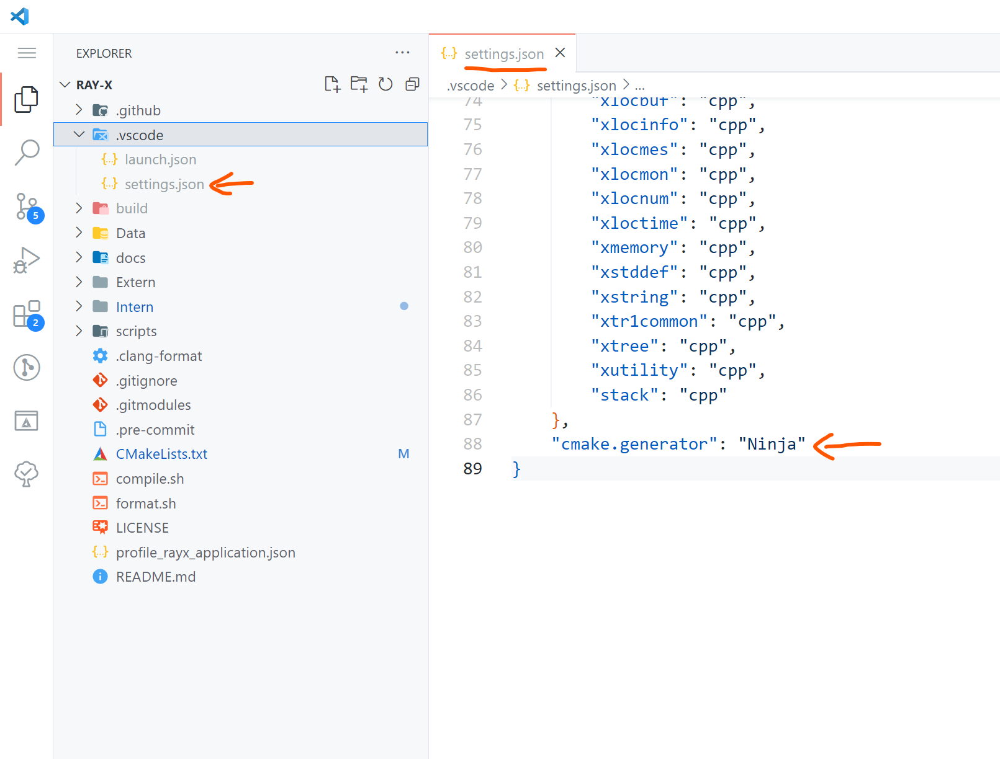
Building with Visual Studio
- Open a terminal in the project folder.
- Run the following command, replacing it with your version of Visual Studio:
cmake -S . -B build -G "Visual Studio 16 2019" -A x64 -DCMAKE_BUILD_TYPE=Release
see: Cmake Options
On Linux
Prerequisites
- Ensure cmake, gcc, gdb, and make are installed and up to date.
- Install the Vulkan SDK from here. Select a version under Linux -> Ubuntu Packages.
- Install Python3, python3-dev, and python3-matplotlib.
- The project leverages libhdf5 for data management and incorporates various other libraries for graphical user interfaces, linear algebra computations, and handling different aspects of the X11 window system. Install the necessary libraries with the following command:
- Optional (required for Tracing on the GPU):
- Install Cuda
- see Determining Cuda and compiler version
Ubuntu
apt update && apt -y install libblas-dev liblapack-dev libhdf5-dev libgtk-3-dev pkg-config libxi-dev libxcursor-dev libxinerama-dev libxrandr-dev
- Ensure the libraries are installed at
/usr/include/hdf5/serialand/usr/lib/x86_64-linux-gnu/hdf5/serial.
Arch Linux
Arch Linux users can obtain all necessary packages through pacman, yay, or other package managers. Specific instructions will be provided later.
Fedora
To install the required packages on Fedora, run the following command:
sudo dnf install cmake gcc gdb vulkan vulkan-tools vulkan-validation-layers hdf5-devel ninja-build gcc-c++ vulkan-loader-devel glslc blas-devel lapack-devel gtk3-devel pkg-config libXi-devel libXcursor-devel libXinerama-devel libXrandr-devel boost
Determining Cuda and compiler version
- GCC: Depending on the Cuda version, different versions of GCC may be supported. This projects is tested with Cuda version 12.4.1 and GCC version 13.3 Please take a look at the supported versions of GCC for your Cuda installation:
- Clang: Using clang as Cuda compiler is currently not supported.
Using compile.sh
usage: ./compile.sh
Options:
--releasebuild in release mode (default: build in debug mode)--cudaenable compilation with Cuda (default: build without Cuda)
see Determining Cuda and compiler version
example usage:CXX=g++-13 ./compile.sh --cuda
How to Install
Welcome to the installation guide for RAYX! This section is a work in progress as we refine our release distribution. If you encounter any issues, we're here to help. Please open an issue on GitHub here. Your feedback helps us improve our documentation and installers based on real user experiences.
Releases
You can find the latest releases of RAYX here. Each release includes:
- rayx-core: The core library binary.
- rayx: Command-Line Interface (CLI) application.
- rayx-ui: Graphical User Interface (GUI) application.
- Data Files: Includes necessary data, shader, and font files.
Dependencies
There are some dependencies that might not be handled by every distributed package, installer or archive. We give a general overview of missing dependencies you might encounter here.
rayx-core
- HDF5 Library for faster I/O operations.
rayx-ui
- GPU driver from AMD, Intel, or NVIDIA.
Installation Instructions
Windows
We provide the following options for Windows:
- Portable Version (.zip): No installation required. Just unzip and run.
- Installer (.exe): An NSIS installer that guides you through the setup process.
Note: You may need to install the Microsoft Visual C++ Redistributable.
Linux
We offer several packages for Linux distributions:
- Debian Package (.deb): For Debian-based systems like Ubuntu.
- RPM Package (.rpm): For Red Hat-based systems like Fedora.
- Tarball (.tar.gz): For other Linux systems. Intended for experienced users comfortable with manual installations.
Ubuntu (Debian-based Systems)
To install RAYX on Ubuntu:
-
Download the
.debpackage from the releases page. -
Install the package using:
sudo apt install ./rayx-ui_<version>_amd64.debReplace
<version>with the actual version number. -
Install Dependencies:
sudo apt-get install libhdf5-dev
Fedora (Red Hat-based Systems)
To install RAYX on Fedora:
-
Download the
.rpmpackage from the releases page. -
Install the package using:
sudo dnf install rayx-ui-<version>.rpmReplace
<version>with the actual version number. -
Install Dependencies:
sudo dnf install hdf5
Arch Linux
While we don't provide a native package for Arch Linux, you can use the tarball or build from source.
Install Dependencies:
sudo pacman -S hdf5
Installing from Tarball (.tar.gz)
The tarball is intended for experienced users who prefer manual installation or are using a Linux distribution not directly supported by our .deb or .rpm packages.
Steps:
-
Download the
.tar.gzfile from the releases page or use the provided tarball. -
Extract the tarball:
tar -xzf RAYX-<version>-Linux.tar.gzThis will create a directory named
RAYX-<version>-Linux. -
Move the extracted files to a directory of your choice (e.g.,
/opt/rayx):sudo mv RAYX-<version>-Linux /opt/rayx -
Add to PATH (optional):
echo 'export PATH=/opt/rayx/bin:$PATH' >> ~/.bashrc source ~/.bashrc -
Run RAYX from the installation directory or after adding it to your PATH.
Note: Installing from a tarball does not handle dependencies automatically. You need to ensure all required dependencies are present on your system. Look at the previous sections for guidance.
If you have any questions or run into issues during installation, please don't hesitate to open an issue on GitHub. Your input is invaluable in helping us enhance our tools and documentation.
Getting Started
Currently we only support a one over trace for a given beamline file. This means, you can either use RAY-UI to generate a beamline file or alter an existing one.
Here is an example for a simple beamline file "PlaneMirror.rml":
<?xml version="1.0" encoding="UTF-8" ?>
<lab>
<version>1.1</version>
<beamline>
<object name="Matrix Source" type="Matrix Source">
<param id="numberRays" enabled="T">100</param>
<param id="sourceWidth" enabled="T">0.065</param>
<param id="sourceHeight" enabled="T">0.04</param>
<param id="sourceDepth" enabled="T">0</param>
<param id="horDiv" enabled="T">1</param>
<param id="verDiv" enabled="T">1</param>
<param id="energyDistributionType" comment="Values" enabled="T">1</param>
<param id="photonEnergyDistributionFile" relative="" enabled="F"></param>
<param id="photonEnergy" enabled="T">100</param>
<param id="energySpreadType" comment="white band" enabled="T">0</param>
<param id="energySpread" enabled="T">0</param>
<param id="linearPol_0" enabled="T">1</param>
<param id="linearPol_45" enabled="T">0</param>
<param id="circularPol" enabled="T">0</param>
<param id="sourcePulseType" comment="all rays start simultaneously" enabled="T">0</param>
<param id="sourcePulseLength" enabled="F">0</param>
<param id="worldPosition" enabled="F">
<x>0</x>
<y>0</y>
<z>0</z>
</param>
<param id="worldXdirection" enabled="F">
<x>1</x>
<y>0</y>
<z>0</z>
</param>
<param id="worldYdirection" enabled="F">
<x>0</x>
<y>1</y>
<z>0</z>
</param>
<param id="worldZdirection" enabled="F">
<x>0</x>
<y>0</y>
<z>1</z>
</param>
</object>
<object name="Plane Mirror" type="Plane Mirror">
<param id="geometricalShape" comment="rectangle" enabled="T">0</param>
<param id="totalWidth" enabled="T">50</param>
<param id="totalLength" enabled="T">200</param>
<param id="grazingIncAngle" auto="T" enabled="T">40</param>
<param id="distancePreceding" enabled="T">10000</param>
<param id="azimuthalAngle" auto="T" enabled="T">0</param>
<param id="systemMount" comment="standalone" enabled="T">0</param>
<param id="premirrorShiftZ" enabled="F">0</param>
<param id="pimpaleAlpha1" enabled="F">1</param>
<param id="pimpaleAlpha2" enabled="F">2</param>
<param id="pimpaleAlpha3" enabled="F">3</param>
<param id="distancePremirrorGrating" enabled="T">0</param>
<param id="reflectivityType" comment="100%" enabled="T">0</param>
<param id="elementSubstrate" enabled="F">Au</param>
<param id="roughnessSubstrate" enabled="F">0</param>
<param id="densitySubstrate" auto="T" enabled="F">19.3</param>
<param id="surfaceCoating" comment="Substrate only" enabled="F">0</param>
<param id="coatingFile" relative="" enabled="F"></param>
<param id="numberLayer" enabled="F">2</param>
<param id="materialCoating1" enabled="F"></param>
<param id="thicknessCoating1" enabled="F">0</param>
<param id="roughnessCoating1" enabled="F">0</param>
<param id="densityCoating1" auto="T" enabled="F">0</param>
<param id="materialCoating2" enabled="F"></param>
<param id="thicknessCoating2" enabled="F">0</param>
<param id="roughnessCoating2" enabled="F">0</param>
<param id="densityCoating2" auto="T" enabled="F">0</param>
<param id="materialTopLayer" enabled="F"></param>
<param id="thicknessTopLayer" enabled="F">0</param>
<param id="roughnessTopLayer" enabled="F">0</param>
<param id="densityTopLayer" auto="T" enabled="F">0</param>
<param id="lateralThicknessGradientCoating1" comment="No" enabled="F">0</param>
<param id="gradientC1B1" enabled="F">0</param>
<param id="gradientC1B2" enabled="F">0</param>
<param id="gradientC1B3" enabled="F">0</param>
<param id="gradientC1B4" enabled="F">0</param>
<param id="gradientC1B5" enabled="F">0</param>
<param id="gradientC1B6" enabled="F">0</param>
<param id="gradientC1B7" enabled="F">0</param>
<param id="gradientC1B8" enabled="F">0</param>
<param id="alignmentError" comment="No" enabled="T">1</param>
<param id="translationXerror" enabled="F">0</param>
<param id="translationYerror" enabled="F">0</param>
<param id="translationZerror" enabled="F">0</param>
<param id="rotationXerror" enabled="F">0</param>
<param id="rotationYerror" enabled="F">0</param>
<param id="rotationZerror" enabled="F">0</param>
<param id="slopeError" comment="No" enabled="T">1</param>
<param id="profileKind" comment="no Profile" enabled="F">2</param>
<param id="profileFile" relative="" enabled="F"></param>
<param id="slopeErrorSag" enabled="F">0</param>
<param id="slopeErrorMer" enabled="F">0</param>
<param id="thermalDistortionAmp" enabled="F">0</param>
<param id="thermalDistortionSigmaX" enabled="F">0</param>
<param id="thermalDistortionSigmaZ" enabled="F">0</param>
<param id="cylindricalBowingAmp" enabled="F">0</param>
<param id="cylindricalBowingRadius" enabled="F">0</param>
<param id="worldPosition" enabled="F">
<x>0</x>
<y>0</y>
<z>10000</z>
</param>
<param id="worldXdirection" enabled="F">
<x>1</x>
<y>0</y>
<z>0</z>
</param>
<param id="worldYdirection" enabled="F">
<x>0</x>
<y>0.766044443118978</y>
<z>-0.6427876096865393</z>
</param>
<param id="worldZdirection" enabled="F">
<x>0</x>
<y>0.6427876096865393</y>
<z>0.766044443118978</z>
</param>
</object>
</beamline>
<ExtraData>
</ExtraData>
</lab>
In it we have a matrix source that sends rays onto a plane mirror. Assuming the beamline file is in the same directory as the binary you can run the CLI of rayx as follows:
./rayx -i PlaneMirror.rml
Adding a -p flag will output a footprint of the last element in
in the beamline, which was hit by rays.
RAYX-UI User Guide
Interface
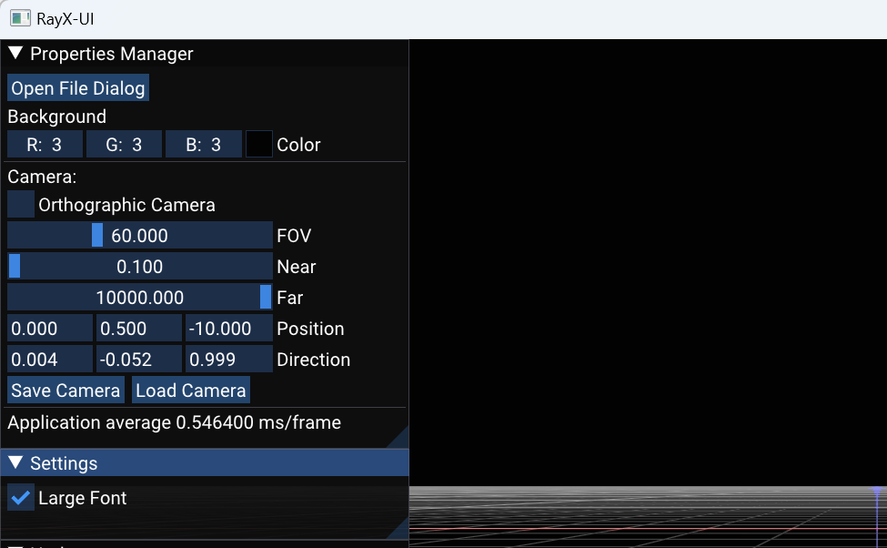
Th window in the image above is accessible in the RAYX-UI application once it's opened. The window provides additional options for adjusting the scene you're viewing. Most notably, the "Open File Dialog" button (indicated by a red arrow) opens a file dialog that allows you to load your .rml beamline file. Currently, the application expects the h5 file (RAYX output) to be located next to it. In the future, tracing functionality will be directly integrated into the interface.
The subsequent camera settings in the interface are intended for advanced users and will not be explained here. If you're unfamiliar with these settings, you likely won't need them. Further down, however, you'll find the "Save Camera" and "Load Camera" buttons, which enable you to save and load a single camera position. This feature can be useful if you wish to save your camera settings for future use or compare different beamlines from the same vantage point.
Basic Navigation and Control
RAYX-UI is an interface designed for real-time visualization of beamline simulations conducted by RAYX-CORE. The application employs keyboard and mouse inputs for navigation and control.
- Camera Movement: Use the
W,A,S,D,Q, andEkeys to move the camera through the 3D space. - Adjust Speed: Hold down the
Shiftkey to adjust movement speed. - Camera Direction: Right-clicking the mouse activates a mode to control camera direction.
- Toggle Modes: The application can be toggled between fullscreen and windowed modes using
F11andF10keys, respectively.
Color Indicators
In the visual representation, various colors are used to indicate specific conditions or states:
- Just Hit: Rays that have just hit an element are represented in a yellow to orange gradient.
- Absorbed: Rays that are absorbed by an element are depicted in red.
- Other: Rays created from other events are white (this most likely indicates an issue in the tracing)
Optical Elements: Optical elements like slits or image planes are displayed in varying shades of blue, with the color gradient used to represent surface orientation.
RAYX Commands
After a successful build, type -h or --help for a summary of all known commands.
Hint:
-cor--commandare accepted. But-commandcan result in errors.
Terminal application for rayx
Usage: ./rayx [OPTIONS]
Options:
-h,--help Print this help message and exit
-c,--ocsv Output stored as .csv file.
-b,--batch INT Batch size for Vulkan tracing
-B,--benchmark Benchmark application and output to stdout
-X,--gpu Tracing on GPU
-x,--cpu Tracing on CPU
-p,--plot Plot output footprints and histograms.
-l,--list List available devices
-d,--device INT Device ID
-i,--input TEXT Input RML File or Directory.
-o,--output TEXT Output path or filename
-v,--version Print application metadata
-f Fix the seed to RAYX::FIXED_SEED (Uses default)
-s,--seed INT Provide a user-defined seed
-S,--sequential Trace rays sequentially
-V,--verbose Print detailed debug and trace info
-F,--format TEXT Format output CSV / H5 data
-m,--maxEvents INT Maximum number of recorded events per ray
-R,--record-element INT Record events only for a specific element (Default: -1 to record for all)
Command descriptions
| Command name | Description |
|---|---|
--help | Prints the help message. |
--ocsv | Store the result as a .csv (defaults to .h5). Not recommended for large ray counts. |
--batch | Specifies how large a batch of rays should be. Useful for compute performance tuning. |
--benchmark | Benchmarks RAYX core performance. Outputs total runtime stats to stdout. |
--gpu | Run tracing on the GPU. |
--cpu | Run tracing on the CPU. |
--plot | Plots footprints and histograms from the last Image Plane element. Closes only after the user exits the plot window. |
--list | Lists all supported compute devices available on the system. |
--device | Select a specific device by ID. Use with --list to see available IDs. |
--input | Path to the RML file or directory to be used as the beamline. |
--output | Path where the traced ray data should be saved. |
--version | Displays application version and build metadata. |
--dummy | Runs a dummy test beamline with a few optical elements. Useful for quick diagnostics. |
--seed | Specifies a custom seed for deterministic tracing. |
--f | Fix the seed to a default constant (RAYX::FIXED_SEED). |
--sequential | Traces rays sequentially rather than in parallel. |
--verbose | Outputs more internal information for debugging and performance tuning. |
--format | Selects the output format. Supported: csv, h5. |
--maxEvents | Limits the number of events (e.g., interactions with beamline elements) that are recorded per ray. |
--record-element | Restrict event recording to a specific beamline element by index. Default: -1 to record events for all elements. |
Literature
Bachelor's Thesis'
Extending_and_Accelerating_a_GPU_Ray_Tracing_Algorithm_for_Photon_Simulation_in_Beamlines_ohne.pdf
Style Guide for Programming in RAYX
This document serves as a comprehensive style guide for the RAY project. It outlines the coding standards and best practices that have evolved over the course of the project's lifecycle. Adherence to these guidelines is crucial for maintaining code readability and facilitating effective collaboration among team members. Please read them attentively.
General
Write code with collective ownership in mind; the primary audience is your teammates, not just the compiler. The KISS (Keep It Stupid Simple) principle should be applied whenever possible.
Includes
To enhance readability, includes should be categorized as follows:
-
#include "internalHeader.h" -
#include <externalHeader.h>
Internal headers are those developed within the project, while external headers pertain to dependencies integrated into the project.
Comments
Prioritize frequent and precise commenting. Comments should be tailored to newcomers to the project, who are the most likely to require and benefit from them.
Doxygen Comments
/**
* a desctription (don't just repeat the function name)
* @param value1 what the parameter value1 does
* @param value2 what the parameter value2 does
* @see related function
* @return what the function returns
*/
The objective is for header files to provide high-level documentation on API usage, while source files should contain more detailed documentation about implementation specifics.
Naming Conventions
As longer names can contain more than one word, it can help to have a visual divider. In the case of Ray-UI we use "camelCase" and "PascalCase". When to use what, will be explained in the "Classes, Function and Variables" subsection.
The upper case letter indicates a new word and thus improves readability. Every name should be able to stand alone and describe the object, function or variable. Something like "int v;" does not achieve this. This also means to avoid using abbreviations, besides the most common ones ("val" for "value" or "dx" for a distance over x).
Avoid using symbols or variable names from formulas for naming variables in the code. This makes the code a riddle to decipher, without further information. The correct ways to do this:
- Add a wiki entry for the formula and link to it
- Change the variable names to its purpose or type, e.g. "hypotenuse" instead of "c"
- Add a link to the formula, so other developers can find it (The other options are better, but at least do this)
Should the name get too long or cryptic, write a comment to clarify what you mean with the name you chose for this variable.
Boolean
Boolean values should begin with is/can/has/etc. when possible.
Classes, Function and Variables
Class and object names are written in "PascalCase". Functions and Variables are written in "camelCase".
e.g.:
- "ClassA"
- "functionB(int valueC, bool isD)"
Member
Member objects and variables of a class are indicated by an "m_", e.g. :
- m_MemberObject
- m_memberVariable
Const Correctness
Const correctness is the practice of using the const keyword to ensure that objects and variables remain immutable. Use const as the default. One exception: function parameters of trivial data types like int, double, etc.
void f1(const std::string& s);// Pass by reference-to-constvoid f2(const std::string* sptr);// Pass by pointer-to-constvoid f3(std::string s);// Pass by value
Employing const correctness from the start is advisable, as it can simplify code maintenance and improve overall code quality.
Further reading on const correctness is highly recommended and can be found here.
Pointer Usage Guidelines
Raw pointers are discouraged except when interfacing with APIs that require them. Following are alternatives to raw pointers for specific use-cases.
- Smart Pointers: Use
std::unique_ptrandstd::shared_ptrfor managing dynamic memory. - Optionality with
std::optional: Utilizestd::optionalfor optional parameters or return types to explicitly indicate the absence of a value. - Const C-Strings: Raw C-strings (
const char*) are acceptable only when necessary for compatibility with C APIs. Ensure they areconstto prevent modification. - Optimize Strings with
std::string_view: For performance-critical code, usestd::string_viewto pass strings by reference without ownership or copy.
Model
In this section you can find formulas, methods and ideas used to develop RAYX.
Beamline Objects
In the following chapter, you will find extensive information on all the Beamline Objects supported by RAYX.
Supported Objects
We divide the objects into two categories: Light Sources and Optical Elements. As the name suggests, the Light Sources are the objects that create the ray information, such as their starting position, the direction of the flight path, and the energy the ray is carrying.
Light Sources
Optical Elements
- Image Plane
- Plane Mirror
- Plane Grating
- Cone Mirror
- Cone Grating
- Crystal
- Cylindrical Mirror
- Ellipsoid Mirror
- Foil
- Spherical Mirror
- Spherical Grating
- Toroidal Mirror
- Toroidal Grating
- Reflection Zone Plate
- Slit
- Custom Quadric Surface Mirror
- Custom Cubic Surface Mirror
Optical Elements
Optical elements are a central part of the tracing process. They define how light is guided through the beamline - where it is focused, redirected, or scattered. In the context of RAYX a beamline consists of two types of elements:
- LightSources, to create the rays, and
- OpticalElements, to be hit by and manipulate these rays
In this section, you can read up on the design choices we made when implementing OpticalElements in RAYX.
Behavior, Cutout, Surface, Coating
Next to its position and orientation, an OpticalElement is classified by three parts: The Behaviour, Surface and Cutout.
- The Behavior defines how the element interacts with a ray (eg. reflecting, absorbing, redirecting)
- The Surface expresses the curvature of an OpticalElement
- The cutout defines the boundaries of the OpticalElement. In other words it "cuts" a finite shape out of the large Surface.
Behavior
Behavior determines what happens to a ray once it hits the OpticalElement. Such a "hit" might result in absorbtion, reflection or the ray might pass through the OpticalElement. Typical examples of Behaviours are Mirror, Grating, Slit and RZP.
Behaviours are defined in the Shared/Behaviour.h file. Each Behaviour has a "behave" function (eg. behaveMirror, behaveSlit, ...) that translates the incoming ray to the outgoing ray. These functions are gathered in the behave.comp file.
Surface
Surfaces in RAYX are defined as either a plane, a quadric, or a toroid. We use mathematical formulas to represent them internally, which means they are not necessarily bounded in size. Optical elements are often subtly curved; to the human eye, they might appear indistinguishable from planar elements.
There are two ways to describe the reflectivity of the Surface. The User can choose between reflectivity Type '100%' and 'derived by material'. If you want the second option you need to specify the following parameter:
- Material Substrate
- Roughness Substrate
- Density Substrate
- Surface Coating
- Coating File
- Number Layer
- Material Coating 1
- Thickness Coating 1
- Roughness Coating 1
- Density Coating 1
- Material Coating 2
- Thickness Coating 2
- Roughness Coating 2
- Density Coating 2
- Material Top Layer
- Thickness Top Layer
- Roughness Top Layer
- Density Top Layer
An example of the RML input looks like this:
<param id="reflectivityType" comment="Derived by Material" enabled="T">1</param>
<param id="materialSubstrate" enabled="T">Au</param>
<param id="roughnessSubstrate" enabled="T">0</param>
<param id="densitySubstrate" auto="T" enabled="T">19.300000000000001</param>
<param id="surfaceCoating" comment="Substrate only" enabled="T">0</param>
<param id="coatingFile" absolute="" enabled="F"></param>
<param id="numberLayer" enabled="F">2</param>
<param id="materialCoating1" enabled="F"></param>
<param id="thicknessCoating1" enabled="F">0</param>
<param id="roughnessCoating1" enabled="F">0</param>
<param id="densityCoating1" auto="T" enabled="F">0</param>
<param id="materialCoating2" enabled="F"></param>
<param id="thicknessCoating2" enabled="F">0</param>
<param id="roughnessCoating2" enabled="F">0</param>
<param id="densityCoating2" auto="T" enabled="F">0</param>
<param id="materialTopLayer" enabled="F"></param>
<param id="thicknessTopLayer" enabled="F">0</param>
<param id="roughnessTopLayer" enabled="F">0</param>
<param id="densityTopLayer" auto="T" enabled="F">0</param>
Cutout
The cutout defines the boundaries of the OpticalElement, by cutting a shape out of the Surface. As the surfaces of OpticalElements often only slightly differ from the XZ plane, we implement Cutouts by a simple 2D shape applied to the coordinates X and Z.
Cutouts come in different shapes:
- Rectangle
- Ellipse
- Trapezoid
- Unlimited
The central function is the bool inCutout(Cutout cutout, double x, double z);.
A given 3D point p is within the cutout c, if inCutout(c, p.x, p.z) returns true.
Not all OpticalElements use exactly one Cutout. The Slit for example uses three Cutouts, one for the ray-absorbing shape around the "opening", then one for the "opening" itself, and another one for the ray-absorbing beamstop within the opening.
Coating
The Coating describes the Layers a Mirror or Grating can have: No Layer, Single Layer or Multilayer.
Ray-OpticalElement collision
When checking whether a ray collides with an OpticalElement, we first convert the Ray to the element coordinate system of the ray. This makes (0, 0, 0) the center of the element, which generally lies in the XZ plane. Rays then come from negative or positive y.
We then ask the Surface of our OpticalElement for a hitpoint using the findCollisionWith function.
And finally, if this hitpoint is in the cutout, we have found a collision.
How They Are Combined
In the following image, you can see a visualization of how the surface and cutout interact. The surface is a quadric that defines a sphere. The cutout is a rectangle, defined by points \(A\), \(B\), \(C\), and \(D\).
Coupled with the icurv parameter, the cutout is mapped to the correct side of the sphere, visualized by points \(A_1\), \(B_1\), \(C_1\), and \(D_1\).
If a ray intersects the element's surface within the bounds of the cutout, it will be counted as a hit.
This is, where the behaviour comes into play to calculate the continuing path of the ray.
The cutout itself does not have a position; it is always at the origin of the element's coordinate system.
For some quadrics, this rule might not adequately define the position.
Therefore, we use the icurv parameter to determine whether the quadric is concave or convex.
This suffices since we calculate all intersection points with elements.
When two intersections occur, the icurv parameter informs us which intersection point to select.

Cone Mirror
Tracing Parameter
Mandatory:
- Reflectivity Type (see more in chapter Optical Elements)
- Slope Error
- World Position
- Misalignment
Cone:
- Grazing Inc Angle
- Entrance Arm Length
- Exit Arm Length
- Total Length
Cutout:
- Geometrical Shape
- Total Width
- Total Length
RML Object
To track a Cone Mirror using an RML File, you'll require an XML Object to encompass all the mirror details. The default mirror setup from RAY-UI is provided here for your convenience. Remember, successful tracing requires you to specify a Light Source first. We suggest adding an Imageplane at the end for clearer results.
<object name="Cone" type="Cone">
<param id="geometricalShape" comment="rectangle" enabled="T">0</param>
<param id="totalWidth" enabled="T">50</param>
<param id="totalLength" enabled="T">200</param>
<param id="grazingIncAngle" enabled="T">10</param>
<param id="entranceArmLength" enabled="T">10000</param>
<param id="exitArmLength" enabled="T">1000</param>
<param id="upstreamRadius" auto="T" enabled="T">346.85522293840654</param>
<param id="downstreamRadius" auto="T" enabled="T">284.67930120577341</param>
<param id="distancePreceding" enabled="T">10000</param>
<param id="azimuthalAngle" enabled="T">0</param>
<param id="reflectivityType" comment="100%" enabled="T">0</param>
<param id="materialSubstrate" enabled="F">Au</param>
<param id="roughnessSubstrate" enabled="F">0</param>
<param id="densitySubstrate" auto="T" enabled="F">19.300000000000001</param>
<param id="surfaceCoating" comment="Substrate only" enabled="F">0</param>
<param id="coatingFile" absolute="" enabled="F"></param>
<param id="numberLayer" enabled="F">2</param>
<param id="materialCoating1" enabled="F"></param>
<param id="thicknessCoating1" enabled="F">0</param>
<param id="roughnessCoating1" enabled="F">0</param>
<param id="densityCoating1" auto="T" enabled="F">0</param>
<param id="materialCoating2" enabled="F"></param>
<param id="thicknessCoating2" enabled="F">0</param>
<param id="roughnessCoating2" enabled="F">0</param>
<param id="densityCoating2" auto="T" enabled="F">0</param>
<param id="materialTopLayer" enabled="F"></param>
<param id="thicknessTopLayer" enabled="F">0</param>
<param id="roughnessTopLayer" enabled="F">0</param>
<param id="densityTopLayer" auto="T" enabled="F">0</param>
<param id="lateralThicknessGradientCoating1" comment="No" enabled="F">0</param>
<param id="gradientC1B1" enabled="F">0</param>
<param id="gradientC1B2" enabled="F">0</param>
<param id="gradientC1B3" enabled="F">0</param>
<param id="gradientC1B4" enabled="F">0</param>
<param id="gradientC1B5" enabled="F">0</param>
<param id="gradientC1B6" enabled="F">0</param>
<param id="gradientC1B7" enabled="F">0</param>
<param id="gradientC1B8" enabled="F">0</param>
<param id="alignmentError" comment="No" enabled="T">1</param>
<param id="translationXerror" enabled="F">0</param>
<param id="translationYerror" enabled="F">0</param>
<param id="translationZerror" enabled="F">0</param>
<param id="rotationXerror" enabled="F">0</param>
<param id="rotationYerror" enabled="F">0</param>
<param id="rotationZerror" enabled="F">0</param>
<param id="slopeError" comment="No" enabled="T">1</param>
<param id="profileKind" comment="no Profile" enabled="F">2</param>
<param id="profileFile" absolute="" enabled="F"></param>
<param id="slopeErrorSag" enabled="F">0</param>
<param id="slopeErrorMer" enabled="F">0</param>
<param id="thermalDistortionAmp" enabled="F">0</param>
<param id="thermalDistortionSigmaX" enabled="F">0</param>
<param id="thermalDistortionSigmaZ" enabled="F">0</param>
<param id="cylindricalBowingAmp" enabled="F">0</param>
<param id="cylindricalBowingRadius" enabled="F">0</param>
<param id="worldPosition" enabled="F">
<x>0</x>
<y>0</y>
<z>10000</z>
</param>
<param id="worldXdirection" enabled="F">
<x>1</x>
<y>0</y>
<z>0</z>
</param>
<param id="worldYdirection" enabled="F">
<x>0</x>
<y>0.98480775301220802</y>
<z>-0.17364817766693033</z>
</param>
<param id="worldZdirection" enabled="F">
<x>0</x>
<y>0.17364817766693033</y>
<z>0.98480775301220802</z>
</param>
</object>
Plane-Crystal
Crystal Diffraction
We simulate X-ray diffraction using the dynamical theory in the Bragg-case geometry, assuming a perfect and thick crystal.
We compute the reflection coefficient based on this model. The reflected field is then determined from it. To run this simulation, the following user inputs are required:
Required Inputs
- Photon energy (in eV)
- lattice spacing*2 (in nm)
- Unit cell volume (in nm³)
- Structure factors:
- F₀, F_H, F_H̄ with real/imaginary components
- Crystal surface offset angle α (in radians)
The following sections explain how each physical quantity and formula is derived and used in the simulation. This section details the implementation of dynamical X-ray diffraction theory for perfect crystals, based on the foundational work of Batterman & Cole (1964).
Bragg Angle Calculation
\[ \theta_B = \arcsin\left(\frac{\lambda}{2d}\right) \]
- Function:
getBraggAngle(energy, dSpacing2) - Purpose: Calculate the Bragg diffraction angle
- Parameters:
energy: Photon energy (eV)dSpacing2: lattice spacing*2 (nm)
- Returns: Bragg angle in radians
Asymmetry Factor
\[ b = \frac{\sin(\theta_B - \alpha)}{\sin(\theta_B + \alpha)} \]
- Function:
getAsymmetryFactor(braggAngle, offsetAngle) - Purpose: Account for crystal surface orientation effects
- Parameters:
braggAngle: Calculated Bragg angleoffsetAngle: Surface tilt angle α
This definition corresponds to the asymmetry factor derived from direction cosines
and is consistent with the definition on page 690 in Batterman & Cole (1964).
Diffraction Prefactor
\[ \Gamma = \frac{r_e \lambda^2}{\pi V} \]
- Function:
getDiffractionPrefactor(wavelength, unitCellVolume) - Purpose: Calculate scaling factor for absorption/dispersion
- Parameters:
wavelength: X-ray wavelength (nm)unitCellVolume: Unit cell volume (nm³)
Gamma is defined in Batterman & Cole (1964) p. 685.
Eta Parameter (η)
\[ \eta = \frac{b\Delta\theta\sin 2\theta + \frac{1}{2}\Gamma F_0(1-b)}{\Gamma|P|\sqrt{|b|}\sqrt{F_H F_{\overline{H}}}} \]
- Function:
computeEta(theta, bragg, asymmetry, FH_re, FH_im, FHC_re, FHC_im, F0_re, F0_im, polFactor, gamma) - Purpose: Compute normalized angular deviation parameter
- Parameters:
- Structure factors (F₀, F_H, F_H̄) with real/imaginary components
polFactor: Polarization factor (1 or |cos2θ_B|)
Eta is defined as equation (32) in Batterman & Cole (1964) p. 690 .
Reflection Coefficient (R)
\[ R = \left(\eta \pm \sqrt{\eta^2 - 1}\right)\sqrt{\frac{F_H}{F_{\overline{H}}}} \]
- Function:
computeR(eta, FH_re, FH_im, FHC_re, FHC_im) - Purpose: Calculate complex reflection coefficient
- Note: Sign selection based on real part of η
This function is based on Equation (103) from Batterman & Cole (1964) p. 706.
We applied the square to the structure factor terms in advance and omitted the leading (|b|) factor.
Polarization Factors
Two states considered:
- \(\sigma\)-polarization: \(P = 1\)
- \(\pi\)-polarization: \(P = |\cos 2\theta_B|\)
References
- Batterman, B. W., & Cole, H. (1964). Dynamical Diffraction of X Rays by Perfect Crystals. Reviews of Modern Physics, 36(3), 681–717. https://doi.org/10.1103/RevModPhys.36.681
Cylindrical Mirror
Tracing Parameter
Mandatory:
- Reflectivity Type (see more in chapter Optical Elements)
- Slope Error
- World Position
- Misalignment
Cylinder:
- Bending Radius
- Radius
- Grazing Inc Angle
- Entrance Arm Length
- Exit Arm Length
Cutout:
- Geometrical Shape
- Total Width
- Total Length
RML Object
To track a Cylindrical Mirror using an RML File, you'll require an XML Object to encompass all the mirror details. The default mirror setup from RAY-UI is provided here for your convenience. Remember, successful tracing requires you to specify a Light Source first. We suggest adding an Imageplane at the end for clearer results.
<object name="Cylinder" type="Cylinder">
<param id="geometricalShape" comment="rectangle" enabled="T">0</param>
<param id="totalWidth" enabled="T">50</param>
<param id="totalLength" enabled="T">200</param>
<param id="grazingIncAngle" enabled="T">10</param>
<param id="entranceArmLength" enabled="T">10000</param>
<param id="exitArmLength" enabled="T">1000</param>
<param id="bendingRadius" comment="Long Radius R" enabled="T">0</param>
<param id="radius" auto="T" enabled="T">10470.4917875</param>
<param id="distancePreceding" enabled="T">10000</param>
<param id="azimuthalAngle" enabled="T">0</param>
<param id="reflectivityType" comment="100%" enabled="T">0</param>
<param id="materialSubstrate" enabled="F">Au</param>
<param id="roughnessSubstrate" enabled="F">0</param>
<param id="densitySubstrate" auto="T" enabled="F">19.3</param>
<param id="surfaceCoating" comment="Substrate only" enabled="F">0</param>
<param id="coatingFile" absolute="" enabled="F"></param>
<param id="numberLayer" enabled="F">2</param>
<param id="materialCoating1" enabled="F"></param>
<param id="thicknessCoating1" enabled="F">0</param>
<param id="roughnessCoating1" enabled="F">0</param>
<param id="densityCoating1" auto="T" enabled="F">0</param>
<param id="materialCoating2" enabled="F"></param>
<param id="thicknessCoating2" enabled="F">0</param>
<param id="roughnessCoating2" enabled="F">0</param>
<param id="densityCoating2" auto="T" enabled="F">0</param>
<param id="materialTopLayer" enabled="F"></param>
<param id="thicknessTopLayer" enabled="F">0</param>
<param id="roughnessTopLayer" enabled="F">0</param>
<param id="densityTopLayer" auto="T" enabled="F">0</param>
<param id="lateralThicknessGradientCoating1" comment="No" enabled="F">0</param>
<param id="gradientC1B1" enabled="F">0</param>
<param id="gradientC1B2" enabled="F">0</param>
<param id="gradientC1B3" enabled="F">0</param>
<param id="gradientC1B4" enabled="F">0</param>
<param id="gradientC1B5" enabled="F">0</param>
<param id="gradientC1B6" enabled="F">0</param>
<param id="gradientC1B7" enabled="F">0</param>
<param id="gradientC1B8" enabled="F">0</param>
<param id="alignmentError" comment="No" enabled="T">1</param>
<param id="translationXerror" enabled="F">0</param>
<param id="translationYerror" enabled="F">0</param>
<param id="translationZerror" enabled="F">0</param>
<param id="rotationXerror" enabled="F">0</param>
<param id="rotationYerror" enabled="F">0</param>
<param id="rotationZerror" enabled="F">0</param>
<param id="slopeError" comment="No" enabled="T">1</param>
<param id="profileKind" comment="no Profile" enabled="F">2</param>
<param id="profileFile" absolute="" enabled="F"></param>
<param id="slopeErrorSag" enabled="F">0</param>
<param id="slopeErrorMer" enabled="F">0</param>
<param id="thermalDistortionAmp" enabled="F">0</param>
<param id="thermalDistortionSigmaX" enabled="F">0</param>
<param id="thermalDistortionSigmaZ" enabled="F">0</param>
<param id="cylindricalBowingAmp" enabled="F">0</param>
<param id="cylindricalBowingRadius" enabled="F">0</param>
<param id="worldPosition" enabled="F">
<x>0</x>
<y>0</y>
<z>10000</z>
</param>
<param id="worldXdirection" enabled="F">
<x>1</x>
<y>0</y>
<z>0</z>
</param>
<param id="worldYdirection" enabled="F">
<x>0</x>
<y>0.98480775301220802</y>
<z>-0.17364817766693033</z>
</param>
<param id="worldZdirection" enabled="F">
<x>0</x>
<y>0.17364817766693033</y>
<z>0.98480775301220802</z>
</param>
</object>
Ellipsoid Mirror
Tracing Parameter
Mandatory:
- Reflectivity Type (see more in chapter Optical Elements)
- Slope Error
- World Position
- Misalignment
Ellipoid:
- Entrance Arm Length
- Exit Arm Length
- Short Half Axis B
- Long Half Axis A
- Design Grazing Inc Angle
- Figure Rotation
- Parameter A11
Cutout:
- Geometrical Shape
- Total Width
- Total Length
RML Object
To track a Ellipsoid Mirror using an RML File, you'll require an XML Object to encompass all the mirror details. The default mirror setup from RAY-UI is provided here for your convenience. Remember, successful tracing requires you to specify a Light Source first. We suggest adding an Imageplane at the end for clearer results.
<object name="Ellipsoid" type="Ellipsoid">
<param id="geometricalShape" comment="rectangle" enabled="T">0</param>
<param id="totalWidth" enabled="T">50</param>
<param id="totalLength" enabled="T">200</param>
<param id="grazingIncAngle" enabled="T">10</param>
<param id="entranceArmLength" enabled="T">10000</param>
<param id="exitArmLength" enabled="T">1000</param>
<param id="designGrazingIncAngle" auto="T" enabled="T">10</param>
<param id="longHalfAxisA" auto="T" enabled="T">5500</param>
<param id="shortHalfAxisB" auto="T" enabled="T">549.12375296508355</param>
<param id="figureRotation" comment="Yes" enabled="T">0</param>
<param id="parameter_a11" enabled="F">1</param>
<param id="distancePreceding" enabled="T">10000</param>
<param id="azimuthalAngle" enabled="T">0</param>
<param id="reflectivityType" comment="Derived by Material" enabled="T">1</param>
<param id="materialSubstrate" enabled="T">Au</param>
<param id="roughnessSubstrate" enabled="T">0</param>
<param id="densitySubstrate" auto="T" enabled="T">19.300000000000001</param>
<param id="surfaceCoating" comment="Substrate only" enabled="T">0</param>
<param id="coatingFile" absolute="" enabled="F"></param>
<param id="numberLayer" enabled="F">2</param>
<param id="materialCoating1" enabled="F"></param>
<param id="thicknessCoating1" enabled="F">0</param>
<param id="roughnessCoating1" enabled="F">0</param>
<param id="densityCoating1" auto="T" enabled="F">0</param>
<param id="materialCoating2" enabled="F"></param>
<param id="thicknessCoating2" enabled="F">0</param>
<param id="roughnessCoating2" enabled="F">0</param>
<param id="densityCoating2" auto="T" enabled="F">0</param>
<param id="materialTopLayer" enabled="F"></param>
<param id="thicknessTopLayer" enabled="F">0</param>
<param id="roughnessTopLayer" enabled="F">0</param>
<param id="densityTopLayer" auto="T" enabled="F">0</param>
<param id="lateralThicknessGradientCoating1" comment="No" enabled="F">0</param>
<param id="gradientC1B1" enabled="F">0</param>
<param id="gradientC1B2" enabled="F">0</param>
<param id="gradientC1B3" enabled="F">0</param>
<param id="gradientC1B4" enabled="F">0</param>
<param id="gradientC1B5" enabled="F">0</param>
<param id="gradientC1B6" enabled="F">0</param>
<param id="gradientC1B7" enabled="F">0</param>
<param id="gradientC1B8" enabled="F">0</param>
<param id="alignmentError" comment="No" enabled="T">1</param>
<param id="misalignmentCoordinateSystem" comment="Ellipsoid" enabled="T">0</param>
<param id="translationXerror" enabled="F">0</param>
<param id="translationYerror" enabled="F">0</param>
<param id="translationZerror" enabled="F">0</param>
<param id="rotationXerror" enabled="F">0</param>
<param id="rotationYerror" enabled="F">0</param>
<param id="rotationZerror" enabled="F">0</param>
<param id="slopeError" comment="No" enabled="T">1</param>
<param id="profileKind" comment="no Profile" enabled="F">2</param>
<param id="profileFile" absolute="" enabled="F"></param>
<param id="slopeErrorSag" enabled="F">0</param>
<param id="slopeErrorMer" enabled="F">0</param>
<param id="thermalDistortionAmp" enabled="F">0</param>
<param id="thermalDistortionSigmaX" enabled="F">0</param>
<param id="thermalDistortionSigmaZ" enabled="F">0</param>
<param id="cylindricalBowingAmp" enabled="F">0</param>
<param id="cylindricalBowingRadius" enabled="F">0</param>
<param id="worldPosition" enabled="F">
<x>0</x>
<y>0</y>
<z>10000</z>
</param>
<param id="worldXdirection" enabled="F">
<x>1</x>
<y>0</y>
<z>0</z>
</param>
<param id="worldYdirection" enabled="F">
<x>0</x>
<y>0.98480775301220802</y>
<z>-0.17364817766693033</z>
</param>
<param id="worldZdirection" enabled="F">
<x>0</x>
<y>0.17364817766693033</y>
<z>0.98480775301220802</z>
</param>
</object>
Foil
The Foil is an optical element that simulates the interaction of light with thin material layers (e.g., gold filters). It calculates polarization-dependent transmission/reflection using Fresnel equations.
Tracing Parameter
Mandatory:
- Reflectivity Type (see more in chapter Optical Elements)
- Slope Error
- World Position
- Misalignment
Foil:
- Substrate Thicness
- Substrate Roughness
Transmission Coefficient Calculation
Angle Theta
\begin{aligned} \sin\theta_1 &= \frac{N_1}{N_2}\sin\theta_0 \ \theta_2 &= \theta_0 \quad \text{(Exit angle equals incidence angle)} \end{aligned}
Fresnel Coefficients
These are calculated for the entrance and exit surfaces.
\begin{aligned}
r_s &= \frac{N_1\cos\theta_0 - N_2\cos\theta_1}{N_1\cos\theta_0 + N_2\cos\theta_1}, \
t_s &= \frac{2N_1\cos\theta_0}{N_1\cos\theta_0 + N_2\cos\theta_1}
r_p &= \frac{N_2\cos\theta_0 - N_1\cos\theta_1}{N_2\cos\theta_0 + N_1\cos\theta_1},
t_p &= \frac{2N_1\cos\theta_0}{N_2\cos\theta_0 + N_1\cos\theta_1}
\end{aligned}
Phaseshift
\begin{aligned}
\delta &= \frac{2\pi}{\lambda}N_2d\cos\theta_1,
\phi &= e^{i\delta}
\end{aligned}
Total Transmission
\begin{aligned} t_{\text{total}} &= \frac{t_{01}t_{12}e^{i\delta}}{1 + r_{01}r_{12}e^{2i\delta}} \end{aligned}
RML Configuration
<object name="Foil" type="Foil">
<param id="geometricalShape" comment="rectangle" enabled="T">0</param>
<param id="totalWidth" enabled="T">40</param>
<param id="totalHeight" enabled="T">60</param>
<param id="normalIncidenceAngle" enabled="T">0</param>
<param id="distancePreceding" enabled="T">10000</param>
<param id="azimuthalAngle" enabled="T">0</param>
<param id="transmissionType" comment="Derived by Material" enabled="T">1</param>
<param id="materialSubstrate" enabled="T">Au</param>
<param id="thicknessSubstrate" enabled="T">50</param>
<param id="roughnessSubstrate" enabled="T">0</param>
<param id="densitySubstrate" auto="T" enabled="T">19.3</param>
<param id="surfaceCoating" comment="Substrate only" enabled="T">0</param>
<param id="numberLayer" enabled="F">2</param>
<param id="materialCoating1" enabled="F"></param>
<param id="thicknessCoating1" enabled="F">0</param>
<param id="roughnessCoating1" enabled="F">0</param>
<param id="densityCoating1" auto="T" enabled="F">0</param>
<param id="materialCoating2" enabled="F"></param>
<param id="thicknessCoating2" enabled="F">0</param>
<param id="roughnessCoating2" enabled="F">0</param>
<param id="densityCoating2" auto="T" enabled="F">0</param>
<param id="materialTopLayer" enabled="F"></param>
<param id="thicknessTopLayer" enabled="F">0</param>
<param id="roughnessTopLayer" enabled="F">0</param>
<param id="densityTopLayer" auto="T" enabled="F">0</param>
<param id="lateralThicknessGradientCoating" comment="No" enabled="F">0</param>
<param id="gradientC1B1" enabled="F">0</param>
<param id="gradientC1B2" enabled="F">0</param>
<param id="gradientC1B3" enabled="F">0</param>
<param id="gradientC1B4" enabled="F">0</param>
<param id="gradientC1B5" enabled="F">0</param>
<param id="gradientC1B6" enabled="F">0</param>
<param id="gradientC1B7" enabled="F">0</param>
<param id="gradientC1B8" enabled="F">0</param>
<param id="alignmentError" comment="No" enabled="T">1</param>
<param id="translationXerror" enabled="F">0</param>
<param id="translationYerror" enabled="F">0</param>
<param id="translationZerror" enabled="F">0</param>
<param id="rotationXerror" enabled="F">0</param>
<param id="rotationYerror" enabled="F">0</param>
<param id="rotationZerror" enabled="F">0</param>
<param id="worldPosition" enabled="F">
<x>0.0000000000000000</x>
<y>0.0000000000000000</y>
<z>10000.0000000000000000</z>
</param>
<param id="worldXdirection" enabled="F">
<x>1.0000000000000000</x>
<y>0.0000000000000000</y>
<z>0.0000000000000000</z>
</param>
<param id="worldYdirection" enabled="F">
<x>0.0000000000000000</x>
<y>1.0000000000000000</y>
<z>0.0000000000000000</z>
</param>
<param id="worldZdirection" enabled="F">
<x>0.0000000000000000</x>
<y>0.0000000000000000</y>
<z>1.0000000000000000</z>
</param>
</object>
Image Plane
The Image Plane is a fundamental optical element characterized by its flat, absorbing surface. This element is designed to capture all incoming rays, regardless of their direction or divergence. The Image Plane can be used in various optical simulations and is typically placed at a specified distance from the light source.
Light Properties
In an Image Plane, rays are absorbed upon contact, allowing for the collection of all light interacting with the surface. This element does not modify the rays' properties but serves as a detector or absorber.
Standard Image Plane
RML Configuration
The standard configuration for an Image Plane does not impose any restrictions on size, meaning it effectively has an unlimited area for rays to hit.
<object name="ImagePlane" type="ImagePlane">
<param id="distanceImagePlane" enabled="T">1000</param>
<param id="worldPosition" enabled="F">
<x>0.0000000000000000</x>
<y>0.0000000000000000</y>
<z>1000.0000000000000000</z>
</param>
<param id="worldXdirection" enabled="F">
<x>1.0000000000000000</x>
<y>0.0000000000000000</y>
<z>0.0000000000000000</z>
</param>
<param id="worldYdirection" enabled="F">
<x>0.0000000000000000</x>
<y>1.0000000000000000</y>
<z>0.0000000000000000</z>
</param>
<param id="worldZdirection" enabled="F">
<x>0.0000000000000000</x>
<y>0.0000000000000000</y>
<z>1.0000000000000000</z>
</param>
</object>
Parameters
- distanceImagePlane: The distance from the light source to the image plane.
- worldPosition: The (x, y, z) coordinates of the image plane in world space.
- worldXdirection: Direction vector along the X-axis.
- worldYdirection: Direction vector along the Y-axis.
- worldZdirection: Direction vector along the Z-axis.
Image Plane with Cutout
In scenarios where only a specific area of the image plane is needed, a cutout can be specified. This will restrict the absorption to the defined geometrical shape.
<object name="ImagePlane" type="ImagePlane">
<param id="geometricalShape" comment="rectangle" enabled="T">0</param>
<param id="totalWidth" enabled="T">50</param>
<param id="totalHeight" enabled="T">200</param>
<param id="distanceImagePlane" enabled="T">1000</param>
<param id="worldPosition" enabled="F">
<x>0.0000000000000000</x>
<y>0.0000000000000000</y>
<z>1000.0000000000000000</z>
</param>
<param id="worldXdirection" enabled="F">
<x>1.0000000000000000</x>
<y>0.0000000000000000</y>
<z>0.0000000000000000</z>
</param>
<param id="worldYdirection" enabled="F">
<x>0.0000000000000000</x>
<y>1.0000000000000000</y>
<z>0.0000000000000000</z>
</param>
<param id="worldZdirection" enabled="F">
<x>0.0000000000000000</x>
<y>0.0000000000000000</y>
<z>1.0000000000000000</z>
</param>
</object>
Parameters with Cutout
- geometricalShape: The shape of the cutout (e.g., rectangle).
- totalWidth: Width of the image plane (or cutout).
- totalHeight: Height of the image plane (or cutout).
- distanceImagePlane: The distance from the light source to the image plane.
- worldPosition: The (x, y, z) coordinates of the image plane in world space.
- worldXdirection: Direction vector along the X-axis.
- worldYdirection: Direction vector along the Y-axis.
- worldZdirection: Direction vector along the Z-axis.
Paraboloid Mirror
Tracing Parameter
Mandatory:
- Reflectivity Type (see more in chapter Optical Elements)
- Slope Error
- World Position
- Misalignment
Paraboloid:
- Arm Length
- Parameter P
- Parameter P Type
- Grazing Inc Angle
- Parameter
Cutout:
- Geometrical Shape
- Total Width
- Total Length
RML Object
To track a Paraboloid Mirror using an RML File, you'll require an XML Object to encompass all the mirror details. The default mirror setup from RAY-UI is provided here for your convenience. Remember, successful tracing requires you to specify a Light Source first. We suggest adding an Imageplane at the end for clearer results.
<object name="Paraboloid" type="Paraboloid">
<param id="geometricalShape" comment="rectangle" enabled="T">0</param>
<param id="totalWidth" enabled="T">50</param>
<param id="totalLength" enabled="T">200</param>
<param id="secondSurface" comment="on" enabled="T">1</param>
<param id="grazingIncAngle" enabled="T">10</param>
<param id="armLength" enabled="T">10000</param>
<param id="parameter_P_type" comment="focusing" enabled="T">1</param>
<param id="parameter_P" auto="T" enabled="T">-603.0737921409161</param>
<param id="figureRotation" comment="Yes" enabled="T">0</param>
<param id="parameter_a11" enabled="F">1</param>
<param id="distancePreceding" enabled="T">10000</param>
<param id="azimuthalAngle" enabled="T">10</param>
<param id="reflectivityType" comment="100%" enabled="T">0</param>
<param id="materialSubstrate" enabled="F">Au</param>
<param id="roughnessSubstrate" enabled="F">0</param>
<param id="densitySubstrate" auto="T" enabled="F">19.3</param>
<param id="surfaceCoating" comment="Substrate only" enabled="F">0</param>
<param id="coatingFile" absolute="" enabled="F"></param>
<param id="numberLayer" enabled="F">2</param>
<param id="materialCoating1" enabled="F"></param>
<param id="thicknessCoating1" enabled="F">0</param>
<param id="roughnessCoating1" enabled="F">0</param>
<param id="densityCoating1" auto="T" enabled="F">0</param>
<param id="materialCoating2" enabled="F"></param>
<param id="thicknessCoating2" enabled="F">0</param>
<param id="roughnessCoating2" enabled="F">0</param>
<param id="densityCoating2" auto="T" enabled="F">0</param>
<param id="materialTopLayer" enabled="F"></param>
<param id="thicknessTopLayer" enabled="F">0</param>
<param id="roughnessTopLayer" enabled="F">0</param>
<param id="densityTopLayer" auto="T" enabled="F">0</param>
<param id="lateralThicknessGradientCoating" comment="No" enabled="F">0</param>
<param id="gradientC1B1" enabled="F">0</param>
<param id="gradientC1B2" enabled="F">0</param>
<param id="gradientC1B3" enabled="F">0</param>
<param id="gradientC1B4" enabled="F">0</param>
<param id="gradientC1B5" enabled="F">0</param>
<param id="gradientC1B6" enabled="F">0</param>
<param id="gradientC1B7" enabled="F">0</param>
<param id="gradientC1B8" enabled="F">0</param>
<param id="alignmentError" comment="No" enabled="T">1</param>
<param id="misalignmentCoordinateSystem" comment="Paraboloid" enabled="T">0</param>
<param id="translationXerror" enabled="F">0</param>
<param id="translationYerror" enabled="F">0</param>
<param id="translationZerror" enabled="F">0</param>
<param id="rotationXerror" enabled="F">0</param>
<param id="rotationYerror" enabled="F">0</param>
<param id="rotationZerror" enabled="F">0</param>
<param id="worldPosition" enabled="F">
<x>0.0000000000000000</x>
<y>0.0000000000000000</y>
<z>10000.0000000000000000</z>
</param>
<param id="worldXdirection" enabled="F">
<x>0.9848077530122080</x>
<y>0.1736481776669303</y>
<z>0.0000000000000000</z>
</param>
<param id="worldYdirection" enabled="F">
<x>-0.1736481776669303</x>
<y>0.9848077530122080</y>
<z>0.0000000000000000</z>
</param>
<param id="worldZdirection" enabled="F">
<x>0.0000000000000000</x>
<y>0.0000000000000000</y>
<z>1.0000000000000000</z>
</param>
<param id="slopeError" comment="No" enabled="T">1</param>
<param id="profileKind" comment="no Profile" enabled="F">2</param>
<param id="profileFile" absolute="" enabled="F"></param>
<param id="slopeErrorSag" enabled="F">0</param>
<param id="slopeErrorMer" enabled="F">0</param>
<param id="thermalDistortionAmp" enabled="F">0</param>
<param id="thermalDistortionSigmaX" enabled="F">0</param>
<param id="thermalDistortionSigmaZ" enabled="F">0</param>
<param id="cylindricalBowingAmp" enabled="F">0</param>
<param id="cylindricalBowingRadius" enabled="F">0</param>
</object>
Plane Mirror
A Plane Mirror is amongst the simplest Elements you can include in your beamline. The Surface is flat and reflective as described by the material.
Tracing Parameter
Mandatory:
- Reflectivity Type (see more in chapter Optical Elements)
- Slope Error
- World Position
- Misalignment
Cutout:
- Geometrical Shape
- Total Width
- Total Length
RML Object
To track a Plane Mirror using an RML File, you'll require an XML Object to encompass all the mirror details. The default mirror setup from RAY-UI is provided here for your convenience. Remember, successful tracing requires you to specify a Light Source first. We suggest adding an Imageplane at the end for clearer results.
<object name="Plane Mirror" type="Plane Mirror">
<param id="geometricalShape" comment="rectangle" enabled="T">0</param>
<param id="totalWidth" enabled="T">50</param>
<param id="totalLength" enabled="T">200</param>
<param id="grazingIncAngle" auto="T" enabled="T">40</param>
<param id="distancePreceding" enabled="T">10000</param>
<param id="azimuthalAngle" auto="T" enabled="T">0</param>
<param id="systemMount" comment="standalone" enabled="T">0</param>
<param id="premirrorShiftZ" enabled="F">0</param>
<param id="pimpaleAlpha1" enabled="F">1</param>
<param id="pimpaleAlpha2" enabled="F">2</param>
<param id="pimpaleAlpha3" enabled="F">3</param>
<param id="distancePremirrorGrating" enabled="T">0</param>
<param id="reflectivityType" comment="100%" enabled="T">0</param>
<param id="elementSubstrate" enabled="F">Au</param>
<param id="roughnessSubstrate" enabled="F">0</param>
<param id="densitySubstrate" auto="T" enabled="F">19.3</param>
<param id="surfaceCoating" comment="Substrate only" enabled="F">0</param>
<param id="coatingFile" relative="" enabled="F"></param>
<param id="numberLayer" enabled="F">2</param>
<param id="materialCoating1" enabled="F"></param>
<param id="thicknessCoating1" enabled="F">0</param>
<param id="roughnessCoating1" enabled="F">0</param>
<param id="densityCoating1" auto="T" enabled="F">0</param>
<param id="materialCoating2" enabled="F"></param>
<param id="thicknessCoating2" enabled="F">0</param>
<param id="roughnessCoating2" enabled="F">0</param>
<param id="densityCoating2" auto="T" enabled="F">0</param>
<param id="materialTopLayer" enabled="F"></param>
<param id="thicknessTopLayer" enabled="F">0</param>
<param id="roughnessTopLayer" enabled="F">0</param>
<param id="densityTopLayer" auto="T" enabled="F">0</param>
<param id="lateralThicknessGradientCoating1" comment="No" enabled="F">0</param>
<param id="gradientC1B1" enabled="F">0</param>
<param id="gradientC1B2" enabled="F">0</param>
<param id="gradientC1B3" enabled="F">0</param>
<param id="gradientC1B4" enabled="F">0</param>
<param id="gradientC1B5" enabled="F">0</param>
<param id="gradientC1B6" enabled="F">0</param>
<param id="gradientC1B7" enabled="F">0</param>
<param id="gradientC1B8" enabled="F">0</param>
<param id="alignmentError" comment="No" enabled="T">1</param>
<param id="translationXerror" enabled="F">0</param>
<param id="translationYerror" enabled="F">0</param>
<param id="translationZerror" enabled="F">0</param>
<param id="rotationXerror" enabled="F">0</param>
<param id="rotationYerror" enabled="F">0</param>
<param id="rotationZerror" enabled="F">0</param>
<param id="slopeError" comment="No" enabled="T">1</param>
<param id="profileKind" comment="no Profile" enabled="F">2</param>
<param id="profileFile" relative="" enabled="F"></param>
<param id="slopeErrorSag" enabled="F">0</param>
<param id="slopeErrorMer" enabled="F">0</param>
<param id="thermalDistortionAmp" enabled="F">0</param>
<param id="thermalDistortionSigmaX" enabled="F">0</param>
<param id="thermalDistortionSigmaZ" enabled="F">0</param>
<param id="cylindricalBowingAmp" enabled="F">0</param>
<param id="cylindricalBowingRadius" enabled="F">0</param>
<param id="worldPosition" enabled="F">
<x>0</x>
<y>0</y>
<z>10000</z>
</param>
<param id="worldXdirection" enabled="F">
<x>1</x>
<y>0</y>
<z>0</z>
</param>
<param id="worldYdirection" enabled="F">
<x>0</x>
<y>0.766044443118978</y>
<z>-0.6427876096865393</z>
</param>
<param id="worldZdirection" enabled="F">
<x>0</x>
<y>0.6427876096865393</y>
<z>0.766044443118978</z>
</param>
</object>
Plane Grating
A Plane Grating is amongst the simplest Elements you can include in your beamline. The Surface is flat and it reflects light like an optical grating.
Tracing Parameter
Mandatory:
- Reflectivity Type (see more in chapter Optical Elements)
- Slope Error
- World Position
- Misalignment
Grating:
- vls parameter
- Line Density
- Order Of Diffraction
Cutout:
- Geometrical Shape
- Total Width
- Total Length
RML Object
To track a Plane Grating using an RML File, you'll require an XML Object to encompass all the grating details. Remember, successful tracing requires you to specify a Light Source first. We suggest adding an Imageplane at the end for clearer results.
<object name="Plane Grating" type="Plane Grating">
<param id="geometricalShape" comment="rectangle" enabled="T">0</param>
<param id="totalWidth" enabled="T">50</param>
<param id="totalLength" enabled="T">200</param>
<param id="gratingMount" comment="constant deviation" enabled="T">0</param>
<param id="systemMount" comment="standalone, none" enabled="T">0</param>
<param id="deviationAngle" enabled="T">10</param>
<param id="halfConeAngle" enabled="F">10</param>
<param id="pimpaleX0" enabled="F">10000</param>
<param id="pimpaleY0" enabled="F">10</param>
<param id="premirrorMountPsi0" enabled="F">0</param>
<param id="designEnergyMounting" auto="T" enabled="T">100</param>
<param id="lineDensity" enabled="T">1000</param>
<param id="orderDiffraction" enabled="T">1</param>
<param id="cFactor" enabled="F">2</param>
<param id="alpha" auto="T" enabled="T">5.35655050894</param>
<param id="beta" auto="T" enabled="T">-4.64344949106</param>
<param id="distancePreceding" enabled="T">10000</param>
<param id="azimuthalAngle" enabled="T">0</param>
<param id="entranceArmLength" enabled="F">10000</param>
<param id="lineSpacing" comment="constant" enabled="T">0</param>
<param id="vlsParameterB2" enabled="F">0</param>
<param id="vlsParameterB3" enabled="F">0</param>
<param id="vlsParameterB4" enabled="F">0</param>
<param id="vlsParameterB5" enabled="F">0</param>
<param id="vlsParameterB6" enabled="F">0</param>
<param id="vlsParameterB7" enabled="F">0</param>
<param id="lineProfile" comment="unknown" enabled="F">3</param>
<param id="gratingEfficiency" enabled="F">0.5</param>
<param id="blazeAngle" enabled="F">4</param>
<param id="aspectAngle" enabled="F">90</param>
<param id="grooveDepth" enabled="F">10</param>
<param id="grooveRatio" enabled="F">0.65</param>
<param id="multilayerFourierCoefficients" auto="T" enabled="F">11</param>
<param id="multilayerIntegrationSteps" auto="T" enabled="F">50</param>
<param id="reflectivitySenkrecht" enabled="T">1</param>
<param id="reflectivityParallel" enabled="T">1</param>
<param id="reflectivityPhase" enabled="T">0</param>
<param id="reflectivityType" comment="100%" enabled="T">0</param>
<param id="materialSubstrate" enabled="F">Au</param>
<param id="roughnessSubstrate" enabled="F">0</param>
<param id="densitySubstrate" auto="T" enabled="F">19.3</param>
<param id="surfaceCoating" comment="Substrate only" enabled="F">0</param>
<param id="numberLayer" enabled="F">2</param>
<param id="materialCoating1" enabled="F"></param>
<param id="thicknessCoating1" enabled="F">0</param>
<param id="densityCoating1" auto="T" enabled="F">0</param>
<param id="materialCoating2" enabled="F"></param>
<param id="thicknessCoating2" enabled="F">0</param>
<param id="densityCoating2" auto="T" enabled="F">0</param>
<param id="alignmentError" comment="No" enabled="T">1</param>
<param id="translationXerror" enabled="F">0</param>
<param id="translationYerror" enabled="F">0</param>
<param id="translationZerror" enabled="F">0</param>
<param id="rotationXerror" enabled="F">0</param>
<param id="rotationYerror" enabled="F">0</param>
<param id="rotationZerror" enabled="F">0</param>
<param id="slopeError" comment="No" enabled="T">1</param>
<param id="profileKind" comment="no Profile" enabled="F">2</param>
<param id="profileFile" relative="" enabled="F"></param>
<param id="slopeErrorSag" enabled="F">0</param>
<param id="slopeErrorMer" enabled="F">0</param>
<param id="thermalDistortionAmp" enabled="F">0</param>
<param id="thermalDistortionSigmaX" enabled="F">0</param>
<param id="thermalDistortionSigmaZ" enabled="F">0</param>
<param id="cylindricalBowingAmp" enabled="F">0</param>
<param id="cylindricalBowingRadius" enabled="F">0</param>
<param id="worldPosition" enabled="F">
<x>0</x>
<y>0</y>
<z>10000</z>
</param>
<param id="worldXdirection" enabled="F">
<x>1</x>
<y>0</y>
<z>0</z>
</param>
<param id="worldYdirection" enabled="F">
<x>0</x>
<y>0.766044443118978</y>
<z>-0.6427876096865393</z>
</param>
<param id="worldZdirection" enabled="F">
<x>0</x>
<y>0.6427876096865393</y>
<z>0.766044443118978</z>
</param>
</object>
Sphere Mirror
Tracing Parameter
Mandatory:
- Reflectivity Type (see more in chapter Optical Elements)
- Slope Error
- World Position
- Misalignment
Sphere:
- Radius
Cutout:
- Geometrical Shape
- Total Width
- Total Length
RML Object
To track a Sphere Mirror using an RML File, you'll require an XML Object to encompass all the mirror details. The default mirror setup from RAY-UI is provided here for your convenience. Remember, successful tracing requires you to specify a Light Source first. We suggest adding an Imageplane at the end for clearer results.
<object name="SphereMirrorDefault" type="Sphere">
<param id="geometricalShape" comment="rectangle" enabled="T">0</param>
<param id="totalWidth" enabled="T">50</param>
<param id="totalLength" enabled="T">200</param>
<param id="grazingIncAngle" enabled="T">10</param>
<param id="entranceArmLength" enabled="T">10000</param>
<param id="exitArmLength" enabled="T">1000</param>
<param id="radius" auto="T" enabled="T">10470.4917875</param>
<param id="distancePreceding" enabled="T">10000</param>
<param id="azimuthalAngle" enabled="T">0</param>
<param id="reflectivityType" comment="100%" enabled="T">0</param>
<param id="elementSubstrate" enabled="T">Cu</param>
<param id="roughnessSubstrate" enabled="F">0</param>
<param id="densitySubstrate" auto="T" enabled="F">8.94</param>
<param id="surfaceCoating" comment="Substrate only" enabled="F">0</param>
<param id="coatingFile" relative="" enabled="F"></param>
<param id="numberLayer" enabled="F">2</param>
<param id="materialCoating1" enabled="F"></param>
<param id="thicknessCoating1" enabled="F">0</param>
<param id="roughnessCoating1" enabled="F">0</param>
<param id="densityCoating1" auto="T" enabled="F">0</param>
<param id="materialCoating2" enabled="F"></param>
<param id="thicknessCoating2" enabled="F">0</param>
<param id="roughnessCoating2" enabled="F">0</param>
<param id="densityCoating2" auto="T" enabled="F">0</param>
<param id="materialTopLayer" enabled="F"></param>
<param id="thicknessTopLayer" enabled="F">0</param>
<param id="roughnessTopLayer" enabled="F">0</param>
<param id="densityTopLayer" auto="T" enabled="F">0</param>
<param id="lateralThicknessGradientCoating1" comment="No" enabled="F">0</param>
<param id="gradientC1B1" enabled="F">0</param>
<param id="gradientC1B2" enabled="F">0</param>
<param id="gradientC1B3" enabled="F">0</param>
<param id="gradientC1B4" enabled="F">0</param>
<param id="gradientC1B5" enabled="F">0</param>
<param id="gradientC1B6" enabled="F">0</param>
<param id="gradientC1B7" enabled="F">0</param>
<param id="gradientC1B8" enabled="F">0</param>
<param id="alignmentError" comment="No" enabled="T">1</param>
<param id="translationXerror" enabled="F">0</param>
<param id="translationYerror" enabled="F">0</param>
<param id="translationZerror" enabled="F">0</param>
<param id="rotationXerror" enabled="F">0</param>
<param id="rotationYerror" enabled="F">0</param>
<param id="rotationZerror" enabled="F">0</param>
<param id="slopeError" comment="No" enabled="T">1</param>
<param id="profileKind" comment="no Profile" enabled="F">2</param>
<param id="profileFile" relative="" enabled="F"></param>
<param id="slopeErrorSag" enabled="F">0</param>
<param id="slopeErrorMer" enabled="F">0</param>
<param id="thermalDistortionAmp" enabled="F">0</param>
<param id="thermalDistortionSigmaX" enabled="F">0</param>
<param id="thermalDistortionSigmaZ" enabled="F">0</param>
<param id="cylindricalBowingAmp" enabled="F">0</param>
<param id="cylindricalBowingRadius" enabled="F">0</param>
<param id="worldPosition" enabled="F">
<x>0</x>
<y>0</y>
<z>10000</z>
</param>
<param id="worldXdirection" enabled="F">
<x>1</x>
<y>0</y>
<z>0</z>
</param>
<param id="worldYdirection" enabled="F">
<x>0</x>
<y>0.98480775301220802</y>
<z>-0.17364817766693033</z>
</param>
<param id="worldZdirection" enabled="F">
<x>0</x>
<y>0.17364817766693033</y>
<z>0.98480775301220802</z>
</param>
</object>
Spherical Grating
TBA
Tracing Parameter
Mandatory:
- Reflectivity Type (see more in chapter Optical Elements)
- Slope Error
- World Position
- Misalignment
Sphere:
- Radius
Grating:
- vls parameter
- Line Density
- Order Of Diffraction
Cutout:
- Geometrical Shape
- Total Width
- Total Length
RML Object
To track a Spherical Grating using an RML File, you'll require an XML Object to encompass all the grating details. Remember, successful tracing requires you to specify a Light Source first. We suggest adding an Imageplane at the end for clearer results.
<object name="Spherical Grating" type="Spherical Grating">
<param id="geometricalShape" comment="rectangle" enabled="T">0</param>
<param id="totalWidth" enabled="T">50</param>
<param id="totalLength" enabled="T">200</param>
<param id="gratingMount" comment="constant deviation" enabled="T">0</param>
<param id="deviationAngle" enabled="T">10</param>
<param id="entranceArmLength" enabled="T">10000</param>
<param id="exitArmLength" auto="T" enabled="T">1000</param>
<param id="radius" auto="T" enabled="T">1825.126977351541</param>
<param id="designEnergy" auto="T" enabled="T">100</param>
<param id="lineDensity" enabled="T">1000</param>
<param id="orderDiffraction" enabled="T">1</param>
<param id="alpha" auto="T" enabled="T">5.356547628646595</param>
<param id="beta" auto="T" enabled="T">-4.643452371353405</param>
<param id="lineSpacing" comment="constant" enabled="T">0</param>
<param id="vlsParameter1" enabled="F">0</param>
<param id="vlsParameter2" enabled="F">0</param>
<param id="vlsParameter3" enabled="F">0</param>
<param id="vlsParameter4" enabled="F">0</param>
<param id="vlsParameter5" enabled="F">0</param>
<param id="vlsParameter6" enabled="F">0</param>
<param id="distancePreceding" enabled="T">10000</param>
<param id="azimuthalAngle" enabled="T">0</param>
<param id="lineProfile" comment="unknown" enabled="T">3</param>
<param id="gratingEfficiency" enabled="T">0.5</param>
<param id="blazeAngle" enabled="F">4</param>
<param id="aspectAngle" enabled="F">90</param>
<param id="grooveDepth" enabled="F">10</param>
<param id="grooveRatio" enabled="F">0.65</param>
<param id="multilayerFourierCoefficients" auto="T" enabled="F">11</param>
<param id="multilayerIntegrationSteps" auto="T" enabled="F">50</param>
<param id="reflectivityType" comment="Derived by Material" enabled="T">1</param>
<param id="materialSubstrate" enabled="T">Au</param>
<param id="roughnessSubstrate" enabled="T">0</param>
<param id="densitySubstrate" auto="T" enabled="T">19.3</param>
<param id="surfaceCoating" comment="Substrate only" enabled="T">0</param>
<param id="numberLayer" enabled="F">2</param>
<param id="materialCoating1" enabled="F"></param>
<param id="thicknessCoating1" enabled="F">0</param>
<param id="densityCoating1" auto="T" enabled="F">0</param>
<param id="materialCoating2" enabled="F"></param>
<param id="thicknessCoating2" enabled="F">0</param>
<param id="densityCoating2" auto="T" enabled="F">0</param>
<param id="alignmentError" comment="No" enabled="T">1</param>
<param id="translationXerror" enabled="F">0</param>
<param id="translationYerror" enabled="F">0</param>
<param id="translationZerror" enabled="F">0</param>
<param id="rotationXerror" enabled="F">0</param>
<param id="rotationYerror" enabled="F">0</param>
<param id="rotationZerror" enabled="F">0</param>
<param id="worldPosition" enabled="F">
<x>0.0000000000000000</x>
<y>0.0000000000000000</y>
<z>10000.0000000000000000</z>
</param>
<param id="worldXdirection" enabled="F">
<x>1.0000000000000000</x>
<y>0.0000000000000000</y>
<z>0.0000000000000000</z>
</param>
<param id="worldYdirection" enabled="F">
<x>0.0000000000000000</x>
<y>0.0933532651278599</y>
<z>-0.9956330488136518</z>
</param>
<param id="worldZdirection" enabled="F">
<x>0.0000000000000000</x>
<y>0.9956330488136518</y>
<z>0.0933532651278599</z>
</param>
<param id="slopeError" comment="No" enabled="T">1</param>
<param id="profileKind" comment="no Profile" enabled="F">2</param>
<param id="profileFile" absolute="" enabled="F"></param>
<param id="slopeErrorSag" enabled="F">0</param>
<param id="slopeErrorMer" enabled="F">0</param>
<param id="thermalDistortionAmp" enabled="F">0</param>
<param id="thermalDistortionSigmaX" enabled="F">0</param>
<param id="thermalDistortionSigmaZ" enabled="F">0</param>
<param id="cylindricalBowingAmp" enabled="F">0</param>
<param id="cylindricalBowingRadius" enabled="F">0</param>
</object>
Slit
The Slit is an optical element that allows users to define a cutout through which light rays pass. You can configure the shape and size of the slit opening, as well as the size and shape of a central beamstop to block part of the light. The Slit element also accounts for Fraunhofer diffraction, producing realistic diffraction patterns when light interacts with the slit, especially in the case of single-slit diffraction.
Tracing Parameter
Mandatory:
- Reflectivity Type (see more in chapter Optical Elements)
- Slope Error
- World Position
- Misalignment
Cutout:
- Opening Shape
- Opening Width
- Opening Height
- Central Beamstop
- Total Width Stop
- Total Height Stop
Fraunhofer Diffraction (Rectangular Slits)
The RAYX simulation software calculates Fraunhofer diffraction for rectangular slits, which impacts the diffraction angle of rays passing through the slit. The diffraction effect is dependent on the slit dimensions and the wavelength of the light. The diffraction pattern produced follows the well-known Fraunhofer single-slit diffraction model, where the intensity of the light depends on the angle and the size of the slit.
For a rectangular slit of dimension b, the diffraction angle dAngle is calculated based on the equation:
[ u = \frac{\pi b \sin(\theta)}{\lambda} ]
where:
- ( b ) is the width or height of the slit
- ( \theta ) is the diffraction angle
- ( \lambda ) is the wavelength of the light
The intensity distribution is proportional to ( \left( \frac{\sin(u)}{u} \right)^2 ).
The algorithm ensures that rays with different angles are assigned based on a random distribution, simulating the diffraction pattern as light passes through the slit.
Circular Apertures and Zone Plates
In addition to rectangular slit diffraction, the software also supports Bessel diffraction for circular slits and zone plates. For a circular aperture of radius r, the diffraction is modeled using Bessel functions, producing characteristic ring-like diffraction patterns.
In this case, the diffraction angle dphi and dpsi are calculated based on the aperture radius and wavelength, simulating the radial symmetry of diffraction patterns from circular openings.
RML Object
To track a Slit using an RML File, you'll require an XML Object to encompass all the mirror details.
<object name="Slit" type="Slit">
<param id="geometricalShape" comment="rectangle" enabled="T">0</param>
<param id="totalWidth" enabled="T">20</param>
<param id="totalHeight" enabled="T">2</param>
<param id="centralBeamstop" comment="none" enabled="T">0</param>
<param id="totalWidthStop" enabled="F">20</param>
<param id="totalHeightStop" enabled="F">1</param>
<param id="distancePreceding" enabled="T">10000</param>
<param id="azimuthalAngle" enabled="T">0</param>
<param id="alignmentError" comment="No" enabled="T">1</param>
<param id="translationXerror" enabled="F">0</param>
<param id="translationYerror" enabled="F">0</param>
<param id="translationZerror" enabled="F">0</param>
<param id="rotationXerror" enabled="F">0</param>
<param id="rotationYerror" enabled="F">0</param>
<param id="rotationZerror" enabled="F">0</param>
<param id="worldPosition" enabled="F">
<x>0.0000000000000000</x>
<y>0.0000000000000000</y>
<z>10000.0000000000000000</z>
</param>
<param id="worldXdirection" enabled="F">
<x>1.0000000000000000</x>
<y>0.0000000000000000</y>
<z>0.0000000000000000</z>
</param>
<param id="worldYdirection" enabled="F">
<x>0.0000000000000000</x>
<y>1.0000000000000000</y>
<z>0.0000000000000000</z>
</param>
<param id="worldZdirection" enabled="F">
<x>0.0000000000000000</x>
<y>0.0000000000000000</y>
<z>1.0000000000000000</z>
</param>
</object>
References
For further reading on Fraunhofer diffraction, please refer to the Wikipedia page on Fraunhofer Diffraction or standard optics textbooks.
Toroid Mirror
TBA
Tracing Parameter
Mandatory:
- Reflectivity Type (see more in chapter Optical Elements)
- Slope Error
- World Position
- Misalignment
Toroid:
- Short Radius
- Long Radius
Cutout:
- Geometrical Shape
- Total Width
- Total Length
RML Object
To track a Toroid Mirror using an RML File, you'll require an XML Object to encompass all the mirror details. The default mirror setup from RAY-UI is provided here for your convenience. Remember, successful tracing requires you to specify a Light Source first. We suggest adding an Imageplane at the end for clearer results.
<object name="Toroid" type="Toroid">
<param id="geometricalShape" comment="rectangle" enabled="T">0</param>
<param id="totalWidth" enabled="T">50</param>
<param id="totalLength" enabled="T">200</param>
<param id="grazingIncAngle" enabled="T">10</param>
<param id="entranceArmLengthSag" enabled="T">10000</param>
<param id="exitArmLengthSag" enabled="T">1000</param>
<param id="entranceArmLengthMer" enabled="T">10000</param>
<param id="exitArmLengthMer" enabled="T">1000</param>
<param id="longRadius" auto="T" enabled="T">10470.4917875</param>
<param id="shortRadius" auto="T" enabled="T">315.723959394</param>
<param id="distancePreceding" enabled="T">10000</param>
<param id="azimuthalAngle" enabled="T">0</param>
<param id="reflectivityType" comment="100%" enabled="T">0</param>
<param id="materialSubstrate" enabled="F">Au</param>
<param id="roughnessSubstrate" enabled="F">0</param>
<param id="densitySubstrate" auto="T" enabled="F">19.3</param>
<param id="surfaceCoating" comment="Substrate only" enabled="F">0</param>
<param id="coatingFile" absolute="" enabled="F"></param>
<param id="numberLayer" enabled="F">2</param>
<param id="materialCoating1" enabled="F"></param>
<param id="thicknessCoating1" enabled="F">0</param>
<param id="roughnessCoating1" enabled="F">0</param>
<param id="densityCoating1" auto="T" enabled="F">0</param>
<param id="materialCoating2" enabled="F"></param>
<param id="thicknessCoating2" enabled="F">0</param>
<param id="roughnessCoating2" enabled="F">0</param>
<param id="densityCoating2" auto="T" enabled="F">0</param>
<param id="materialTopLayer" enabled="F"></param>
<param id="thicknessTopLayer" enabled="F">0</param>
<param id="roughnessTopLayer" enabled="F">0</param>
<param id="densityTopLayer" auto="T" enabled="F">0</param>
<param id="lateralThicknessGradientCoating1" comment="No" enabled="F">0</param>
<param id="gradientC1B1" enabled="F">0</param>
<param id="gradientC1B2" enabled="F">0</param>
<param id="gradientC1B3" enabled="F">0</param>
<param id="gradientC1B4" enabled="F">0</param>
<param id="gradientC1B5" enabled="F">0</param>
<param id="gradientC1B6" enabled="F">0</param>
<param id="gradientC1B7" enabled="F">0</param>
<param id="gradientC1B8" enabled="F">0</param>
<param id="alignmentError" comment="No" enabled="T">1</param>
<param id="translationXerror" enabled="F">0</param>
<param id="translationYerror" enabled="F">0</param>
<param id="translationZerror" enabled="F">0</param>
<param id="rotationXerror" enabled="F">0</param>
<param id="rotationYerror" enabled="F">0</param>
<param id="rotationZerror" enabled="F">0</param>
<param id="slopeError" comment="No" enabled="T">1</param>
<param id="profileKind" comment="no Profile" enabled="F">2</param>
<param id="profileFile" absolute="" enabled="F"></param>
<param id="slopeErrorSag" enabled="F">0</param>
<param id="slopeErrorMer" enabled="F">0</param>
<param id="thermalDistortionAmp" enabled="F">0</param>
<param id="thermalDistortionSigmaX" enabled="F">0</param>
<param id="thermalDistortionSigmaZ" enabled="F">0</param>
<param id="cylindricalBowingAmp" enabled="F">0</param>
<param id="cylindricalBowingRadius" enabled="F">0</param>
<param id="worldPosition" enabled="F">
<x>0</x>
<y>0</y>
<z>10000</z>
</param>
<param id="worldXdirection" enabled="F">
<x>1</x>
<y>0</y>
<z>0</z>
</param>
<param id="worldYdirection" enabled="F">
<x>0</x>
<y>0.98480775301220802</y>
<z>-0.17364817766693033</z>
</param>
<param id="worldZdirection" enabled="F">
<x>0</x>
<y>0.17364817766693033</y>
<z>0.98480775301220802</z>
</param>
</object>
Toroid Grating
TBA
Tracing Parameter
Mandatory:
- Reflectivity Type (see more in chapter Optical Elements)
- Slope Error
- World Position
- Misalignment
Toroid:
- Short Radius
- Long Radius
Grating:
- Varied line spaceing parameter
- Line Density
- Order Of Diffraction
Cutout:
- Geometrical Shape
- Total Width
- Total Length
RML Object
To track a Toroid Grating using an RML File, you'll require an XML Object to encompass all the grating details. Remember, successful tracing requires you to specify a Light Source first. We suggest adding an Imageplane at the end for clearer results.
<object name="Toroidal Grating" type="Toroidal Grating">
<param id="geometricalShape" comment="rectangle" enabled="T">0</param>
<param id="totalWidth" enabled="T">50</param>
<param id="totalLength" enabled="T">200</param>
<param id="gratingMount" comment="constant deviation" enabled="T">0</param>
<param id="deviationAngle" enabled="T">10</param>
<param id="entranceArmLengthSag" enabled="T">10000</param>
<param id="exitArmLengthSag" enabled="T">1000</param>
<param id="entranceArmLengthMer" enabled="T">10000</param>
<param id="exitArmLengthMer" enabled="T">1000</param>
<param id="longRadius" auto="T" enabled="T">1823.537175159428</param>
<param id="shortRadius" auto="T" enabled="T">1811.228017099299</param>
<param id="designEnergy" auto="T" enabled="T">100</param>
<param id="lineDensity" enabled="T">1000</param>
<param id="orderDiffraction" enabled="T">1</param>
<param id="alpha" auto="T" enabled="T">5.356547628646594</param>
<param id="beta" auto="T" enabled="T">-4.643452371353406</param>
<param id="lineSpacing" comment="constant" enabled="T">0</param>
<param id="vlsParameter1" enabled="F">0</param>
<param id="vlsParameter2" enabled="F">0</param>
<param id="vlsParameter3" enabled="F">0</param>
<param id="vlsParameter4" enabled="F">0</param>
<param id="vlsParameter5" enabled="F">0</param>
<param id="vlsParameter6" enabled="F">0</param>
<param id="distancePreceding" enabled="T">10000</param>
<param id="azimuthalAngle" enabled="T">0</param>
<param id="lineProfile" comment="unknown" enabled="T">3</param>
<param id="gratingEfficiency" enabled="T">0.5</param>
<param id="blazeAngle" enabled="F">4</param>
<param id="aspectAngle" enabled="F">90</param>
<param id="grooveDepth" enabled="F">10</param>
<param id="grooveRatio" enabled="F">0.65</param>
<param id="reflectivityType" comment="Derived by Material" enabled="T">1</param>
<param id="materialSubstrate" enabled="T">Au</param>
<param id="roughnessSubstrate" enabled="T">0</param>
<param id="densitySubstrate" auto="T" enabled="T">19.3</param>
<param id="surfaceCoating" comment="Substrate only" enabled="T">0</param>
<param id="numberLayer" enabled="F">2</param>
<param id="materialCoating1" enabled="F"></param>
<param id="thicknessCoating1" enabled="F">0</param>
<param id="densityCoating1" auto="T" enabled="F">0</param>
<param id="materialCoating2" enabled="F"></param>
<param id="thicknessCoating2" enabled="F">0</param>
<param id="densityCoating2" auto="T" enabled="F">0</param>
<param id="materialTopLayer" enabled="F"></param>
<param id="thicknessTopLayer" enabled="F">0</param>
<param id="densityTopLayer" auto="T" enabled="F">0</param>
<param id="lateralThicknessGradientCoating1" comment="No" enabled="F">0</param>
<param id="gradientC1B1" enabled="F">0</param>
<param id="gradientC1B2" enabled="F">0</param>
<param id="gradientC1B3" enabled="F">0</param>
<param id="gradientC1B4" enabled="F">0</param>
<param id="gradientC1B5" enabled="F">0</param>
<param id="gradientC1B6" enabled="F">0</param>
<param id="gradientC1B7" enabled="F">0</param>
<param id="gradientC1B8" enabled="F">0</param>
<param id="alignmentError" comment="No" enabled="T">1</param>
<param id="translationXerror" enabled="F">0</param>
<param id="translationYerror" enabled="F">0</param>
<param id="translationZerror" enabled="F">0</param>
<param id="rotationXerror" enabled="F">0</param>
<param id="rotationYerror" enabled="F">0</param>
<param id="rotationZerror" enabled="F">0</param>
<param id="worldPosition" enabled="F">
<x>0.0000000000000000</x>
<y>0.0000000000000000</y>
<z>10000.0000000000000000</z>
</param>
<param id="worldXdirection" enabled="F">
<x>1.0000000000000000</x>
<y>0.0000000000000000</y>
<z>0.0000000000000000</z>
</param>
<param id="worldYdirection" enabled="F">
<x>0.0000000000000000</x>
<y>0.0933532651278599</y>
<z>-0.9956330488136518</z>
</param>
<param id="worldZdirection" enabled="F">
<x>0.0000000000000000</x>
<y>0.9956330488136518</y>
<z>0.0933532651278599</z>
</param>
<param id="slopeError" comment="No" enabled="T">1</param>
<param id="profileKind" comment="no Profile" enabled="F">2</param>
<param id="profileFile" absolute="" enabled="F"></param>
<param id="slopeErrorSag" enabled="F">0</param>
<param id="slopeErrorMer" enabled="F">0</param>
<param id="thermalDistortionAmp" enabled="F">0</param>
<param id="thermalDistortionSigmaX" enabled="F">0</param>
<param id="thermalDistortionSigmaZ" enabled="F">0</param>
<param id="cylindricalBowingAmp" enabled="F">0</param>
<param id="cylindricalBowingRadius" enabled="F">0</param>
</object>
Reflection Zone Plate
Information about RZP
Literature:
PhD_JensRehanek_2014.pdf
PhD_HeikeLöchel_2016.pdf
Tracing Parameter
Mandatory:
- Reflectivity Type (see more in chapter Optical Elements)
- Slope Error
- World Position
- Misalignment
RZP:
- Fresnel Z Offset
- Design Alpha Angle
- Design Beta Angle
- Design Order Diffraction
- Design Energy
- Entrance Arm Length Sag
- Exit Arm Length Sag
- Entrance Arm Length Sag
- Exit Arm Length Mer
- Order Diffraction
- Additional Order
- Curvature Type
- Long Radius
- Image Type
Cutout:
- Geometrical Shape
- Total Width
- Total Length
RML Object
If you want to follow a RZP using an RML File, you'll need an XML Object that contains all the RZP details. The default RZP from RAY-UI is available for use. Just remember, tracing only works if you set up a Light Source first. It's a good idea to add an Imageplane Object at the end for clearer results.
<object name="Reflection Zoneplate" type="Reflection Zoneplate">
<param id="geometricalShape" comment="rectangle" enabled="T">0</param>
<param id="totalWidth" enabled="T">50</param>
<param id="totalLength" enabled="T">200</param>
<param id="gratingMount" comment="constant incidence angle" enabled="T">1</param>
<param id="grazingIncAngle" auto="T" enabled="T">1</param>
<param id="deviationAngle" enabled="F">170</param>
<param id="distancePreceding" enabled="T">10000</param>
<param id="azimuthalAngle" enabled="T">0</param>
<param id="elementOffsetZType" comment="manual" enabled="T">0</param>
<param id="elementOffsetZ" enabled="T">0</param>
<param id="meridionalIncidenceBeamDivergence" enabled="F">0</param>
<param id="meridionalIncidenceFocusDistance" enabled="F">0</param>
<param id="orderDiffraction" auto="T" enabled="T">-1</param>
<param id="betaDiffraction" auto="T" enabled="T">1</param>
<param id="derivationMethod" comment="Formulas" enabled="T">0</param>
<param id="coefficientsFile" relative="" enabled="F"></param>
<param id="designEnergy" enabled="T">100</param>
<param id="designOrderDiffraction" auto="T" enabled="T">-1</param>
<param id="entranceArmLengthSag" enabled="T">100</param>
<param id="entranceArmLengthMer" enabled="T">100</param>
<param id="designAlphaAngle" enabled="T">1</param>
<param id="exitArmLengthSag" enabled="T">500</param>
<param id="exitArmLengthMer" enabled="T">500</param>
<param id="curvatureType" comment="planar" enabled="T">0</param>
<param id="longRadius" enabled="F">0</param>
<param id="shortRadius" enabled="F">0</param>
<param id="designType" comment="use Fresnel Center Offset" enabled="T">0</param>
<param id="FresnelZOffset" enabled="T">0</param>
<param id="designBetaAngle" enabled="F">1</param>
<param id="imageType" comment="point to point" enabled="T">0</param>
<param id="stretchXdirection" enabled="F">1</param>
<param id="rzpType" comment="elliptical (standard)" enabled="T">0</param>
<param id="zDcalc" enabled="T">0</param>
<param id="xDcalc" enabled="T">0</param>
<param id="Dz" enabled="T">0</param>
<param id="Dx" enabled="T">0</param>
<param id="refracMethod" comment="2D (new)" enabled="T">1</param>
<param id="additionalOrder" comment="off" enabled="T">0</param>
<param id="lineProfile" comment="unknown" enabled="T">3</param>
<param id="fullEfficiency" comment="off" enabled="T">0</param>
<param id="gratingEfficiency" enabled="T">0.5</param>
<param id="blazeAngle" enabled="F">4</param>
<param id="aspectAngle" enabled="F">90</param>
<param id="grooveDepth" enabled="F">10</param>
<param id="grooveRatio" enabled="F">0.65</param>
<param id="multilayerFourierCoefficients" auto="T" enabled="F">11</param>
<param id="multilayerIntegrationSteps" auto="T" enabled="F">50</param>
<param id="reflectivityType" comment="Derived by Material" enabled="T">1</param>
<param id="materialSubstrate" enabled="T">Au</param>
<param id="roughnessSubstrate" enabled="T">0</param>
<param id="densitySubstrate" auto="T" enabled="T">19.3</param>
<param id="surfaceCoating" comment="Substrate only" enabled="T">0</param>
<param id="numberLayer" enabled="F">2</param>
<param id="materialCoating1" enabled="F"></param>
<param id="thicknessCoating1" enabled="F">0</param>
<param id="densityCoating1" auto="T" enabled="F">0</param>
<param id="materialCoating2" enabled="F"></param>
<param id="thicknessCoating2" enabled="F">0</param>
<param id="densityCoating2" auto="T" enabled="F">0</param>
<param id="materialTopLayer" enabled="F"></param>
<param id="thicknessTopLayer" enabled="F">0</param>
<param id="densityTopLayer" auto="T" enabled="F">0</param>
<param id="lateralThicknessGradientCoating1" comment="No" enabled="F">0</param>
<param id="gradientC1B1" enabled="F">0</param>
<param id="gradientC1B2" enabled="F">0</param>
<param id="gradientC1B3" enabled="F">0</param>
<param id="gradientC1B4" enabled="F">0</param>
<param id="gradientC1B5" enabled="F">0</param>
<param id="gradientC1B6" enabled="F">0</param>
<param id="gradientC1B7" enabled="F">0</param>
<param id="gradientC1B8" enabled="F">0</param>
<param id="alignmentError" comment="No" enabled="T">1</param>
<param id="translationXerror" enabled="F">0</param>
<param id="translationYerror" enabled="F">0</param>
<param id="translationZerror" enabled="F">0</param>
<param id="rotationXerror" enabled="F">0</param>
<param id="rotationYerror" enabled="F">0</param>
<param id="rotationZerror" enabled="F">0</param>
<param id="slopeError" comment="No" enabled="T">1</param>
<param id="profileKind" comment="no Profile" enabled="F">2</param>
<param id="profileFile" relative="" enabled="F"></param>
<param id="slopeErrorSag" enabled="F">0</param>
<param id="slopeErrorMer" enabled="F">0</param>
<param id="thermalDistortionAmp" enabled="F">0</param>
<param id="thermalDistortionSigmaX" enabled="F">0</param>
<param id="thermalDistortionSigmaZ" enabled="F">0</param>
<param id="cylindricalBowingAmp" enabled="F">0</param>
<param id="cylindricalBowingRadius" enabled="F">0</param>
<param id="worldPosition" enabled="F">
<x>0</x>
<y>0</y>
<z>10000</z>
</param>
<param id="worldXdirection" enabled="F">
<x>1</x>
<y>0</y>
<z>0</z>
</param>
<param id="worldYdirection" enabled="F">
<x>0</x>
<y>0.99984769515639127</y>
<z>-0.017452406437283512</z>
</param>
<param id="worldZdirection" enabled="F">
<x>0</x>
<y>0.017452406437283512</y>
<z>0.99984769515639127</z>
</param>
</object>
Light Sources
Light sources are the starting point for each ray. Here, the properties of the light are set. Depending on user input, the direction, photon energy, and light polarization are determined. This section provides a description of how the light sources are implemented and how to use them for different beamlines. Depending on your needs, it can be useful to understand which light source is most suitable.
The key part of light source implementation in RAYX is the overall distribution of values. Most light sources produce a spectrum of light rays.
Implemented Sources
Currently, there are six light sources implemented in RAYX. They are fundamentally different and serve various purposes:
- Dipole Source
- Matrix Source
- Point Source
- Circle Source
- Pixel Source
- Simple Undulator Source
The Matrix and Point Sources are conceptual sources, whereas the Dipole Source aims to replicate real-world behavior as accurately as possible.
Light Properties
In RAYX, every ray is described by four properties. Each light source has a different approach to determining these, depending on which aspects should be realistic and which should be synthetically generated. The values are almost always in a given distribution window and are randomly generated. This ensures minimal systematic errors impact the ray generation. The user can choose a distribution window and a distribution type.
Parameters:
- Origin
- Direction
- Photon Energy
- Polarization
Origin
The user sets the following parameters:
- Source width (x-dir)
- Source height (y-dir)
- Source depth (z-dir)
- Distribution types (up to 3 different ones)
The origin for each ray is described by x, y, and z values.
With repeatability in mind, the Matrix Source has a fully deterministic approach to setting the origin of each ray. All rays are positioned in a uniform grid within the given width and height. Depending on the number of rays, this grid can appear sparse or fully filled.
The Point Source uses preset distribution types for the positions. Each ray has a random origin, but when considered collectively, they represent the chosen distribution type. Common choices are either hard-edge or soft-edge distributions.
The Dipole Source additionally considers the horizontal divergence and bending radius. The origin positions are in a 3-dimensional curve, representing the trajectory of the electrons in the synchrotron. The positions have a natural distribution that depends on the horizontal divergence of the electron beam.
Direction
The user sets the following parameters:
- Horizontal divergence (x-dir)
- Vertical divergence (y-dir)
- Distribution type
The direction for each ray is calculated using the phi and psi values, which are the horizontal and vertical angles of the direction. A direction vector is then calculated from these angles and used in the tracing process.
Each source has different directional behaviors, which are detailed in their respective chapters.
Energy
The user sets the following parameters:
- Photon Energy (mean)
- Energy Spread
- Distribution type
- (File path)
Photon energy is understood as the mean energy in a given distribution. If the energy spread is defined as 0, all rays have the same energy.
The energy is equivalent to the wavelength of the light ray. Different distribution types are available for observing the behavior.
Polarization
Light polarization impacts the reflective properties of the ray. Depending on the light source, it is either calculated or provided by the user.
For more information on how to implement and use light sources, please refer to the documentation for the specific light source (updated soon).
Circle Source
Light Properties
In RAYX, every ray is described by four properties. The values are randomly generated according to the given distribution. This ensures that minimal systematic errors impact the simulation.
Light properties include:
- Origin
- Direction
- Photon Energy
- Polarization
Origin
The origin of each ray is described by its x, y, and z positions.
Tracing Parameters
- Source Depth
- Source Height
- Source Width
- Linear Pol 0
- Linear Pol 45
- Circular Pol
- numOfEquidistantCircles
- maxOpeningAngle
- minOpeningAngle
- deltaOpeningAngle
- Energy
- Energy Spread
- Energy Spread Type
- Energy Distribution Type
- Energy Distribution File
RML Object
To trace a Circle Source through an RML file, use an XML object to contain all relevant information for the light source. Below is the default configuration for the light source from RAY-UI for your convenience. It is recommended to include an Image Plane at the end for clearer results.
<object name="Circle Source" type="Circle Source">
<param id="numberRays" enabled="T">20000</param>
<param id="sourceWidth" enabled="T">0.065</param>
<param id="sourceHeight" enabled="T">0.04</param>
<param id="sourceDepth" enabled="T">1</param>
<param id="numberCircles" enabled="T">1</param>
<param id="maximumOpeningAngle" enabled="T">0</param>
<param id="minimumOpeningAngle" enabled="T">0</param>
<param id="deltaOpeningAngle" enabled="T">0</param>
<param id="alignmentError" comment="No" enabled="T">1</param>
<param id="translationXerror" enabled="F">0</param>
<param id="translationYerror" enabled="F">0</param>
<param id="rotationXerror" enabled="F">0</param>
<param id="rotationYerror" enabled="F">0</param>
<param id="worldPosition" enabled="F">
<x>0.0000000000000000</x>
<y>0.0000000000000000</y>
<z>0.0000000000000000</z>
</param>
<param id="worldXdirection" enabled="F">
<x>1.0000000000000000</x>
<y>0.0000000000000000</y>
<z>0.0000000000000000</z>
</param>
<param id="worldYdirection" enabled="F">
<x>0.0000000000000000</x>
<y>1.0000000000000000</y>
<z>0.0000000000000000</z>
</param>
<param id="worldZdirection" enabled="F">
<x>0.0000000000000000</x>
<y>0.0000000000000000</y>
<z>1.0000000000000000</z>
</param>
<param id="energyDistributionType" comment="Values" enabled="T">1</param>
<param id="photonEnergyDistributionFile" absolute="" enabled="F"></param>
<param id="photonEnergy" enabled="T">100</param>
<param id="energySpreadType" comment="white band" enabled="T">0</param>
<param id="energySpread" enabled="T">0</param>
<param id="linearPol_0" enabled="T">1</param>
<param id="linearPol_45" enabled="T">0</param>
<param id="circularPol" enabled="T">0</param>
<param id="sourcePulseType" comment="all rays start simultaneously" enabled="T">0</param>
<param id="sourcePulseLength" enabled="F">0</param>
</object>
Dipole Source
The Dipole Source in RAYX is implemented to generate a realistic light beam. To simulate realistic behavior, the natural spectral and spatial distributions of synchrotron radiation are used as a foundation. Specifically, the distributions defined by the universal function for synchrotron radiation, as outlined by Wiedemann in Synchrotron Radiation, p. 159, are utilized.
Background
Dipole sources are among the most common light sources used to generate synchrotron radiation. In synchrotrons, dipole magnets are used to bend a charged particle beam. Depending on the strength of the magnetic field and other adjustable parameters, bending the particle beam produces X-rays—high-energy photons traveling at relativistic speeds. These photons then travel through the beamline, interacting with optical elements, and eventually reaching an experiment at the end of the line.
Light Properties
In RAYX, every ray is described by four properties. Each light source has a different approach to determining these, depending on which parts should be realistic and which should be synthetically generated. The values are randomly generated for the given distribution, ensuring that minimal systematic errors impact the simulation. The user provides a distribution window for these properties.
Origin
The origin of each ray is described by its x, y, and z positions. For the dipole source, the position depends on the strength of the dipole magnet. In the coordinate system for the light source, x lies on the horizontal plane with z, while the y direction is "up" and "down" when looking from the source down the beamline (toward the experiment or the next optical element, described by z). The user has limited influence over the distribution of the position, which is primarily determined by the magnetic field and the horizontal divergence window.
Direction
The direction is determined by the vertical and horizontal angles, based on the user's input for vertical and horizontal divergence. The direction is calculated using two variables: the Phi and Psi angles. Phi is determined randomly with a uniform distribution over the given horizontal divergence. Psi is more complex, depending on the polarization. From the given vertical electron beam divergence, a distribution window is calculated.
Energy
The photon energy depends on the specified mean energy and the energy spread. The focus of the simulation is the distribution of photon energies among all generated rays. The energy can be understood as equivalent to the wavelength of the photon. For the dipole source, energy is randomly distributed according to the universal function for synchrotron radiation. The basis for this simulation is Helmut Wiedemann’s description in Synchrotron Radiation, p. 259 (D.21), where edge cases simplify the simulation.
Polarization
Light polarization affects the reflective properties of the ray. Polarization is also important for the distribution of the vertical direction of the ray. As described by Helmut Wiedemann (Synchrotron Radiation, p. 155 (9.78)), polarization, direction, and photon energy jointly determine the distribution.
Struct Ray
In RAYX, all the generated information from the light sources is transferred to the optical elements using the Ray structure.
Tracing Parameters
- Energy Distribution
- Photon Flux
- Electron Energy Orientation
- Source Pulse Type
- Bending Radius
- Electron Energy
- Photon Energy
- Vertical E-beam Divergence
- Energy Spread
- Energy Spread Unit
- Horizontal Divergence
- Source Height
- Source Width
- Energy
- Energy Spread
- Energy Spread Type
- Energy Distribution Type
- Energy Distribution File
RML Object
To trace a Dipole Source through an RML file, use an XML object to contain all relevant information for the light source. Below is the default configuration for the light source from RAY-UI for your convenience. It is recommended to include an Image Plane at the end for clearer results.
<object name="Dipole Source" type="Dipole Source">
<param id="numberRays" enabled="T">200</param>
<param id="sourceWidth" enabled="T">0.065</param>
<param id="sourceHeight" enabled="T">0.04</param>
<param id="verEbeamDiv" enabled="T">1</param>
<param id="horDiv" enabled="T">1</param>
<param id="electronEnergy" enabled="T">1.7</param>
<param id="electronEnergyOrientation" comment="clockwise" enabled="T">0</param>
<param id="bendingRadius" enabled="T">4.35</param>
<param id="alignmentError" comment="No" enabled="T">1</param>
<param id="translationXerror" enabled="F">0</param>
<param id="translationYerror" enabled="F">0</param>
<param id="rotationXerror" enabled="F">0</param>
<param id="rotationYerror" enabled="F">0</param>
<param id="worldPosition" enabled="F">
<x>0.0000000000000000</x>
<y>0.0000000000000000</y>
<z>0.0000000000000000</z>
</param>
<param id="worldXdirection" enabled="F">
<x>1.0000000000000000</x>
<y>0.0000000000000000</y>
<z>0.0000000000000000</z>
</param>
<param id="worldYdirection" enabled="F">
<x>0.0000000000000000</x>
<y>1.0000000000000000</y>
<z>0.0000000000000000</z>
</param>
<param id="worldZdirection" enabled="F">
<x>0.0000000000000000</x>
<y>0.0000000000000000</y>
<z>1.0000000000000000</z>
</param>
<param id="energyDistributionType" comment="Values" enabled="T">1</param>
<param id="photonEnergyDistributionFile" absolute="" enabled="F"></param>
<param id="photonEnergy" enabled="T">100</param>
<param id="energySpreadType" comment="white band" enabled="T">0</param>
<param id="energySpreadUnit" comment="eV" enabled="T">0</param>
<param id="energySpread" enabled="T">0</param>
<param id="sourcePulseType" comment="all rays start simultaneously" enabled="T">0</param>
<param id="sourcePulseLength" enabled="F">0</param>
<param id="photonFlux" enabled="T">2.76089e+12</param>
</object>
Matrix Source
Light Properties
In RAYX, every ray is described by four properties. The values are randomly generated within the given distribution. This guarantees that minimal systematic errors impact the simulation.
Light properties:
- Origin
- Direction
- Photon Energy
- Polarization
Origin
The origin for each ray is described by its x, y, and z position.
Tracing Parameters
- Ver Div
- Hor Div
- Source Depth
- Source Height
- Source Width
- Linear Pol 0
- Linear Pol 45
- Circular Pol
- Energy
- Energy Spread
- Energy Spread Type
- Energy Distribution Type
- Energy Distribution File
RML Object
To trace a Pixel Source through an RML file, use an XML object to encompass all pertinent information for the light source. The default configuration for the light source from RAY-UI is presented here for ease of use. It is recommended to include an Imageplane at the end for clearer results.
<object name="Pixel Source" type="Pixel Source">
<param id="numberRays" enabled="T">20000</param>
<param id="sourceWidth" enabled="T">0.065</param>
<param id="sourceHeight" enabled="T">0.04</param>
<param id="sourceDepth" enabled="T">1</param>
<param id="horDiv" enabled="T">1</param>
<param id="verDiv" enabled="T">1</param>
<param id="worldPosition" enabled="F">
<x>0.0000000000000000</x>
<y>0.0000000000000000</y>
<z>0.0000000000000000</z>
</param>
<param id="worldXdirection" enabled="F">
<x>1.0000000000000000</x>
<y>0.0000000000000000</y>
<z>0.0000000000000000</z>
</param>
<param id="worldYdirection" enabled="F">
<x>0.0000000000000000</x>
<y>1.0000000000000000</y>
<z>0.0000000000000000</z>
</param>
<param id="worldZdirection" enabled="F">
<x>0.0000000000000000</x>
<y>0.0000000000000000</y>
<z>1.0000000000000000</z>
</param>
<param id="energyDistributionType" comment="Values" enabled="T">1</param>
<param id="photonEnergyDistributionFile" absolute="" enabled="F"></param>
<param id="photonEnergy" enabled="T">100</param>
<param id="energySpreadType" comment="white band" enabled="T">0</param>
<param id="energySpread" enabled="T">0</param>
<param id="linearPol_0" enabled="T">1</param>
<param id="linearPol_45" enabled="T">0</param>
<param id="circularPol" enabled="T">0</param>
<param id="sourcePulseType" comment="all rays start simultaneously" enabled="T">0</param>
<param id="sourcePulseLength" enabled="F">0</param>
</object>
Pixel Source
Light Properties
In RAYX, every ray is described by four properties. The values are randomly generated for the given distribution. This guarantees that minimal systematic errors impact the simulation.
Light properties:
- Origin
- Direction
- Photon Energy
- Polarization
Origin
The origin for each ray is described by its x, y, and z position.
Tracing Parameters
- Ver Div
- Hor Div
- Source Depth
- Source Height
- Source Width
- Linear Pol 0
- Linear Pol 45
- Circular Pol
- Energy
- Energy Spread
- Energy Spread Type
- Energy Distribution Type
- Energy Distribution File
RML Object
To trace a Pixel Source through an RML file, use an XML object to encompass all pertinent information for the light source. The default configuration for the light source from RAY-UI is presented here for ease of use. It is recommended to include an Imageplane at the end for clearer results.
<object name="Pixel Source" type="Pixel Source">
<param id="numberRays" enabled="T">20000</param>
<param id="sourceWidth" enabled="T">0.065</param>
<param id="sourceHeight" enabled="T">0.04</param>
<param id="sourceDepth" enabled="T">1</param>
<param id="horDiv" enabled="T">1</param>
<param id="verDiv" enabled="T">1</param>
<param id="worldPosition" enabled="F">
<x>0.0000000000000000</x>
<y>0.0000000000000000</y>
<z>0.0000000000000000</z>
</param>
<param id="worldXdirection" enabled="F">
<x>1.0000000000000000</x>
<y>0.0000000000000000</y>
<z>0.0000000000000000</z>
</param>
<param id="worldYdirection" enabled="F">
<x>0.0000000000000000</x>
<y>1.0000000000000000</y>
<z>0.0000000000000000</z>
</param>
<param id="worldZdirection" enabled="F">
<x>0.0000000000000000</x>
<y>0.0000000000000000</y>
<z>1.0000000000000000</z>
</param>
<param id="energyDistributionType" comment="Values" enabled="T">1</param>
<param id="photonEnergyDistributionFile" absolute="" enabled="F"></param>
<param id="photonEnergy" enabled="T">100</param>
<param id="energySpreadType" comment="white band" enabled="T">0</param>
<param id="energySpread" enabled="T">0</param>
<param id="linearPol_0" enabled="T">1</param>
<param id="linearPol_45" enabled="T">0</param>
<param id="circularPol" enabled="T">0</param>
<param id="sourcePulseType" comment="all rays start simultaneously" enabled="T">0</param>
<param id="sourcePulseLength" enabled="F">0</param>
</object>
Point Source
Light Properties
In RAYX, every ray is described by four properties. The values are randomly generated within the given distribution to ensure minimal systematic errors during simulation.
Light properties:
- Origin
- Direction
- Photon Energy
- Polarization
Origin
The origin for each ray is described by its x, y, and z position.
Tracing Parameters
- sourceWidthDistribution
- sourceHeightDistribution
- horDivDistribution
- verDivDistribution
- Ver Div
- Hor Div
- Source Depth
- Source Height
- Source Width
- Linear Pol 0
- Linear Pol 45
- Circular Pol
- Energy
- Energy Spread
- Energy Spread Type
- Energy Distribution Type
- Energy Distribution File
RML Object
To trace a Point Source through an RML file, use an XML object to encapsulate all relevant information about the light source. Below is the default configuration for a point source from RAY-UI, which can be used as a template. It is recommended to include an Imageplane at the end for clearer simulation results.
<object name="Point Source" type="Point Source">
<param id="numberRays" enabled="T">200</param>
<param id="sourceWidthDistribution" comment="gaussian (sigma)" enabled="T">1</param>
<param id="sourceWidth" enabled="T">0.065</param>
<param id="sourceHeightDistribution" comment="gaussian (sigma)" enabled="T">1</param>
<param id="sourceHeight" enabled="T">0.04</param>
<param id="sourceDepth" enabled="T">1</param>
<param id="horDivDistribution" comment="gaussian (sigma)" enabled="T">1</param>
<param id="horDiv" enabled="T">1</param>
<param id="verDivDistribution" comment="gaussian (sigma)" enabled="T">1</param>
<param id="verDiv" enabled="T">1</param>
<param id="alignmentError" comment="Yes" enabled="T">0</param>
<param id="translationXerror" enabled="F">5</param>
<param id="translationYerror" enabled="F">5</param>
<param id="rotationXerror" enabled="F">0</param>
<param id="rotationYerror" enabled="F">0</param>
<param id="energyDistributionType" comment="Values" enabled="T">1</param>
<param id="photonEnergyDistributionFile" absolute="" enabled="F"></param>
<param id="photonEnergy" enabled="T">151</param>
<param id="energySpreadType" comment="white band" enabled="T">0</param>
<param id="energySpreadUnit" comment="eV" enabled="T">0</param>
<param id="energySpread" enabled="T">6</param>
<param id="linearPol_0" enabled="T">1</param>
<param id="linearPol_45" enabled="T">0</param>
<param id="circularPol" enabled="T">0</param>
<param id="sourcePulseType" comment="all rays start simultaneously" enabled="T">0</param>
<param id="sourcePulseLength" enabled="F">0</param>
<param id="worldPosition" enabled="F">
<x>0</x>
<y>0</y>
<z>0</z>
</param>
<param id="worldXdirection" enabled="F">
<x>1</x>
<y>0</y>
<z>0</z>
</param>
<param id="worldYdirection" enabled="F">
<x>0</x>
<y>1</y>
<z>0</z>
</param>
<param id="worldZdirection" enabled="F">
<x>0</x>
<y>0</y>
<z>1</z>
</param>
</object>
Simple Undulator Source
The Simple Undulator source in RAYX approximates the physics of a real undulator source, allowing for faster tracing of an undulator light beam. This light source uses Gaussian Beam Theory, which simplifies the beam properties significantly. By treating the light beam as a collection of individual rays, complex wave theory can be substituted with approximations.
Simply put, Gaussian Beam Theory states that certain beam properties are distributed in Gaussian patterns. These patterns flatten or squeeze after collisions with optical elements, but generally, the beam maintains a Gaussian bell curve shape.
Light Properties
In RAYX, every ray is characterized by four properties, which are randomly generated to ensure minimal systematic errors in the simulation:
- Origin: Position in x, y, and z coordinates.
- Direction: Direction vector of the ray.
- Photon Energy: Energy of the photon carried by the ray.
- Polarization: Polarization state of the photon.
Origin
The origin for each ray is described by x, y, and z positions.
Tracing Parameters
Key parameters used for tracing an undulator source include:
- sourceDepth: Depth of the light source.
- linearPol0: Linear polarization at 0 degrees.
- linearPol45: Linear polarization at 45 degrees.
- circularPol: Circular polarization.
- undulatorLength: Length of the undulator.
- photonEnergy: Energy of the photons.
- sigmaType: Type of sigma (distribution type).
- electronSigmaX: Horizontal electron beam size.
- electronSigmaXs: Horizontal electron beam divergence.
- electronSigmaY: Vertical electron beam size.
- electronSigmaYs: Vertical electron beam divergence.
- Energy: Photon energy level.
- Energy Spread: Spread in energy.
- Energy Spread Type: Type of energy spread (e.g., white band).
- Energy Distribution Type: Distribution type of the photon energy.
- Energy Distribution File: File used to define energy distribution.
RML Object
To trace a Simple Undulator Source using an RML file, you can define the source in an XML format. The default configuration from RAY-UI is provided here, which can be customized for your specific needs. It is advisable to include an Imageplane at the end for more accurate results.
<object name="Simple Undulator" type="Simple Undulator">
<param id="numberRays" enabled="T">20000</param>
<param id="sigmaType" comment="standard" enabled="T">0</param>
<param id="undulatorLength" enabled="T">4</param>
<param id="electronDistributionType" comment="manual" enabled="T">0</param>
<param id="electronSigmaX" enabled="T">216</param>
<param id="electronSigmaXs" enabled="T">24.8</param>
<param id="electronSigmaY" enabled="T">18.7</param>
<param id="electronSigmaYs" enabled="T">4.3</param>
<param id="sourceDepth" enabled="T">1</param>
<param id="alignmentError" comment="No" enabled="T">1</param>
<param id="translationXerror" enabled="F">0</param>
<param id="translationYerror" enabled="F">0</param>
<param id="translationZerror" enabled="F">0</param>
<param id="rotationXerror" enabled="F">0</param>
<param id="rotationYerror" enabled="F">0</param>
<param id="worldPosition" enabled="F">
<x>0.0000000000000000</x>
<y>0.0000000000000000</y>
<z>0.0000000000000000</z>
</param>
<param id="worldXdirection" enabled="F">
<x>1.0000000000000000</x>
<y>0.0000000000000000</y>
<z>0.0000000000000000</x>
</param>
<param id="worldYdirection" enabled="F">
<x>0.0000000000000000</x>
<y>1.0000000000000000</y>
<z>0.0000000000000000</x>
</param>
<param id="worldZdirection" enabled="F">
<x>0.0000000000000000</x>
<y>0.0000000000000000</y>
<z>1.0000000000000000</z>
</param>
<param id="energyDistributionType" comment="Values" enabled="T">1</param>
<param id="photonEnergyDistributionFile" absolute="" enabled="F"></param>
<param id="photonEnergy" enabled="T">100</param>
<param id="energySpreadType" comment="white band" enabled="T">0</param>
<param id="energySpreadUnit" comment="eV" enabled="T">0</param>
<param id="energySpread" enabled="T">0</param>
<param id="linearPol_0" enabled="T">1</param>
<param id="linearPol_45" enabled="T">0</param>
<param id="circularPol" enabled="T">0</param>
<param id="sourcePulseType" comment="all rays start simultaneously" enabled="T">0</param>
<param id="sourcePulseLength" enabled="F">0</param>
</object>
Literature
[1] Representation of a Gaussian Beam by Rays, P. P. Crooker, W. B. Colson, and J. Blau, Physics Department, Naval Postgraduate School, Monterey, California. Published 2006.
Beamline Parameter
This table explains all the parameters that can be used in a RAYX beamline. They are ordered for Elements and Sources and roughly in their order of importance.
Light Source Parameter
| Name | Description |
|---|---|
| Number of Rays | Number of rays emitted from the source |
| Source Width | Width of the light source in millimeters |
| Source Height | Height of the light source in millimeters |
| Source Depth | Depth of the light source in millimeters |
| Horizontal Divergence | Horizontal angular spread of the rays |
| Vertical Divergence | Vertical angular spread of the rays |
| Source Width Distribution | Distribution type for source width |
| Source Height Distribution | Distribution type for source height |
| Horizontal Divergence Distribution | Distribution type for horizontal divergence |
| Vertical Divergence Distribution | Distribution type for vertical divergence |
| Linear Pol 0 | Degree of linear polarization at 0 degrees |
| Linear Pol 45 | Degree of linear polarization at 45 degrees |
| Circular Pol | Degree of circular polarization |
| Energy Distribution Type | How the nergy distribution should be defined (e.g. Values, File) |
| Energy Spread Type | Distribution pattern for the Energy (e.g Gaussian) |
| Energy Spread | Spread of energy around the central photon energy |
| Photon Energy Distribution File | Filepath for .DAT- File with Energy distribution information |
| Photon Energy | Central photon energy |
| Separate Energies | Number of seperate energy spikes |
| Electron Energy Orientation | Movement in the Synchrotron (clockwise, counter-clockwise) |
| Source Pulse Type | (unused) |
| Vertical E-beam Divergence | Vertical divergence of the electron beam |
| Bending Radius | Bending radius of the electron bunch in a bending magnet |
| Electron Energy | Energy of the electrons in the source |
| Alignment Error | Possible misalignment of the source |
| Photon Flux | -- |
| Photon Energy | Central photon energy of the source |
| Energy Spread | Energy spread around the central energy |
| Energy Spread Unit | Unit for energy spread (eV) |
| Number of Equidistant Circles | -- |
| Maximum Opening Angle | Maximum divergence angle for the rays |
| Minimum Opening Angle | Minimum divergence angle for the rays |
| Delta Opening Angle | -- |
| Parameter P | -- |
| Parameter P Type | -- |
| Sigma Type | -- |
| Undulator Length | -- |
| Electron Sigma X | Horizontal electron beam size |
| Electron Sigma Xs | Horizontal electron beam divergence |
| Electron Sigma Y | Vertical electron beam size |
| Electron Sigma Ys | Vertical electron beam divergence |
Optical Element Parameter
| Name | Description |
|---|---|
| World Position | 3D coordinates of the optical element's position |
| Total Width | Width of the optical element |
| Total Length | Length of the optical element |
| Total Height | Height of the optical element |
| Grazing Incidence Angle | Angle of incidence for grazing rays |
| Arm Length | Length of the arm of the optical element |
| Entrance Arm Length | Length of the entrance arm |
| Exit Arm Length | Length of the exit arm |
| Entrance Arm Length (Mer) | Meridional entrance arm length |
| Exit Arm Length (Mer) | Meridional exit arm length |
| Entrance Arm Length (Sag) | Sagittal entrance arm length |
| Exit Arm Length (Sag) | Sagittal exit arm length |
| Central Beamstop | Stop placed in the center of the beam |
| Total Width Stop | Width of the beamstop |
| Total Height Stop | Height of the beamstop |
| Opening Width | Width of the optical element opening |
| Opening Height | Height of the optical element opening |
| Opening Shape | Shape of the optical element opening (e.g., rectangle, circle) |
| Grating Mount | -- |
| Radius | Radius of curvature for curved surfaces |
| Design Energy | Target design energy for the optical element |
| Line Density | -- |
| Order of Diffraction | Diffraction order for grating elements |
| Design Energy Mounting | -- |
| Design Order of Diffraction | -- |
| Design Alpha Angle | -- |
| Design Beta Angle | -- |
| Short Radius | Short radius for elliptical elements |
| Long Radius | Long radius for elliptical elements |
| Fresnel Z Offset | -- |
| Bending Radius Direction | -- |
| Parameter A11 | -- |
| Design Grazing Inc Angle | Grazing incidence angle in design |
| Long Half Axis A | Long half-axis for elliptical elements |
| Short Half Axis B | Short half-axis for elliptical elements |
| Figure Rotation | -- |
| Distance Preceding | Distance from preceding element |
| Misalignment Coordinate System | Coordinate system for misalignment |
| Reflectivity Type | Type of reflectivity used |
| Material Substrate | Material of the substrate |
| Geometrical Shape | Shape of the optical element |
| Image Type | Type of image plane |
| Azimuthal Angle | Azimuthal angle of rotation |
| Additional Order | -- |
| Slope Error | Slope error for reflecting surfaces |
| Slope Error Sag | Sagittal slope error |
| Slope Error Mer | Meridional slope error |
| Thermal Distortion Amp | Amplitude of thermal distortion |
| Thermal Distortion Sigma X | Sigma in X for thermal distortion |
| Thermal Distortion Sigma Z | Sigma in Z for thermal distortion |
| Cylindrical Bowing Amp | Amplitude of cylindrical bowing |
| Cylindrical Bowing Radius | Radius for cylindrical bowing |
| VLS Parameter | -- |
| Reflectivity Type | Type of reflectivity coating |
| Material Substrate | Substrate material for reflecting surfaces |
| Roughness Substrate | Surface roughness of the substrate |
| Density Substrate | Density of the substrate material |
| Surface Coating | Coating material for the optical surface |
| Coating File | External file for custom coating |
| Number Layer | Number of layers in multilayer coatings |
| Material Coating 1 | Material of the first coating layer |
| Thickness Coating 1 | Thickness of the first coating layer |
| Roughness Coating 1 | Roughness of the first coating layer |
| Density Coating 1 | Density of the first coating layer |
| Material Coating 2 | Material of the second coating layer |
| Thickness Coating 2 | Thickness of the second coating layer |
| Roughness Coating 2 | Roughness of the second coating layer |
| Density Coating 2 | Density of the second coating layer |
| Material Top Layer | Material of the top layer coating |
| Thickness Top Layer | Thickness of the top layer coating |
| Roughness Top Layer | Roughness of the top layer coating |
| Density Top Layer | Density of the top layer coating |
| Lattice Spacing × 2 | Twice the lattice spacing (2d) of the crystal (in nm) |
| Unit Cell Volume | Volume of the crystal's unit cell (in nm³) |
| Structure Factor F₀ | Real and imaginary parts of the forward scattering factor |
| Structure Factor F_H | Real and imaginary parts of the Bragg-reflected structure factor |
| Structure Factor F_H̄ | Real and imaginary parts of the conjugate reflected factor |
| Offset Angle α | Crystal surface tilt relative to atomic planes (in radians) |
User vs Model Parameter
In RAYX we intend to work on better modularity and readability in our code. In our opinion, one step to achieve this, to reevaluate and restructure the parameters of RAY-UI. Since a lot of the parameters had dependencies on each other, we decided that a distinction between them was needed. This is where our definition of User and Model Parameters comes into play.
Model Parameter
A Model Parameter is any parameter that is directly influencing the calculations of the tracer. Further, a Model Parameter can also be a parameter, which is required for the fundamental definition of our model.
Example
The position and direction Matrix are not directly used in the calculations of the Tracer, but they still are Model Parameters, since they are essential in directly defining our model.
User Parameters
User Parameters are all the parameters that are only used to calculate Model Parameters. They only exist to improve the user experience of our application and are neither passed directly to the tracer nor are needed to define our model.
Ray Generation
Rays are described in tree-dimensional space with an origin and a direction. The origin are described with a three dimensional vector. However, the direction can be interpreted as the cosines of two angles \(\phi\) and \(\psi\). Since the z-axis is the direction of the center ray, the direction of all other rays can be described as the angle between ray direction vector and z-y-plane (horizontal divergence \(\phi\)) and between vector and z-x-plane (vertical divergence \(\psi\)). See also documentation p.18,19.
\[ ray = \begin{bmatrix} x_s \\ y_s \\ z_s \end{bmatrix} + t \begin{bmatrix} l_S \\ m_S \\ n_S \end{bmatrix} = \begin{bmatrix} x_s \\ y_s \\ z_s \end{bmatrix} + t \begin{bmatrix} sin \phi_S \cdot cos \psi_S \\ cos \psi_S \\ cos \psi_S \cdot cos \phi_S \end{bmatrix} \]
When the ray is created in the light source, its origin and direction angles are chosen randomly.
Light sources: Point source
The user sets the following parameters:
- number of rays
- source dimensions width(x-dir), height(y-dir) and depth(z-dir)
- horizontal and vertical divergence
The intensity distribution in the lightsource is understood as the probability distribution of the parameters position and angle. The parameters \(x\), \(y\) and \(z\) of position and the angles \(\phi\) and \(\psi\) are chosen randomly but according to a probability distribution. Uniformly distributed random numbers within the range \([0,1]\) are obtained by FORTRAN's random_number function. There are two options for the probability distribution in the light source: soft edge (Gaussian) and hard edge (uniformly). Afterwards, some predefined offset can be added to each component.
Hard edge
The hard edge option is the simpler one since the random numbers are already uniformly distributed. Thus, the ray parameters \(x\), \(y\), \(z\), \(\phi\), \(\psi\) are chosen uniformly within the given extent (width, height, divergence..) of the point source by calculating a random number \(u\), subtracting 0.5 such that the number ranges in \([-0.5,+0.5]\) and multiplying with the given width/height/depth or horizontal/vertical extent of the point source.
\(x_S = (u_x - 0.5) \cdot width\)
\(y_S = (u_y - 0.5) \cdot height\)
\(z_S = (u_z - 0.5) \cdot depth\)
\(\phi_S = (u_\phi - 0.5) \cdot hor. div\)
\(\psi_S = (u_\psi - 0.5) \cdot vert. div\)
Thus, the x-coordinate of the origin, for example, lies within \([-\frac{width}{2}, +\frac{width}{2}]\) and is picked uniformly.
Soft edge
(See also documentation p.14)
For the soft edge we have to transform the uniform distribution to a Gaussian distribution with \(\mu = 0\) and \(\sigma = extent\). The resulting values for a specific ray are not bound by the input parameters as for the hard edge. Instead, the more they deviate from \(\mu\) the more rare they are.
In FORTRAN code
The old implementation uses the following apporach:
- create two random numbers \(u_1,u_2\) from a uniform distribution in \([0,1]\)
- \(x =(u_1 - 0.5 ) \cdot \sigma \cdot 9\)
- \(wx = \exp(\frac{-x^2}{2})\)
- \(dif = wx-u_2\)
- \(wx\) is the value of the densitiy function \(f(x)\) of the distribution with \(\mu=0\) and \(\sigma\). If \(wx < u_2\), then repeat from step 1 (keep \(x\) with probability \(f(x)\))
- else keep \(x\)
Here, 9 is used as a factor for \(\sigma\), since the Gaussian distribution is defined from \(-\infty\) to \(+\infty\) but a confidence interval \([-4.5 \sigma, +4.5 \sigma]\) contains already more than 99.99%.
\(w(x_s)\) lies in \([0,1]\). It is \(1\) for \(x_s = 0\) and becomes smaller the more \(x_s\) deviates from \(0\) according to the gaussian bell curve. Since \(w(x_s)\) is the probability that \(x_s\) occurs in our gaussian distribution, we want to use \(x_s\) for the origin of the ray with a probability of \(w(x_s)\). Thus, we get a second random number \(u_x'\) from FORTRAN's random_number function and if \(u_x' \leq w(x_s)\) holds we use \(x_S\) for the ray. Otherwise, \(x_S\) is discarded and re-calculated with a new random number \(u_x\). Thereby, we use \(x_S\) with a probability that corresponds to the Gaussian distribution.
However, this is not very efficient as a lot of rays are thrown away. The following method uses a different approach which - although some values are discarded as well - is more efficient and creates two values in one iteration instead of one (more here Section 5.5.2):
More efficiently:
- create two random numbers \(u_1, u_2\) from a uniform distribution in \([0,1]\)
- calculate \(x_1 = 2u_1-1\) and \(x_2 = 2u_2 -1\)
- calculate \(r^2 = x_1^2 + x_2^2r^2\)
- if \(r^2 > 1\) repeat from step 1
- else calculate \(z_1 = x_1 \cdot \sqrt{-2\frac{\ln{r^2}}{r^2}} \cdot \sigma\) and \(z_2 = x_2 \cdot \sqrt{-2\frac{\ln{r^2}}{r^2}} \cdot \sigma\)
Now \(z_1\) and \(z_2\) are distributed according to the Gaussian distribution with \(\mu = 0\) and \(\sigma = extent\) as defined by the user.
This calculation is faster since we get 2 values instead of 1. (In python the first method took twice as long as this method to create the same amount of values)
Pseudo Random Number Generators (PRNGs) on the GPU
For RAYX we found a good and performant pseudo random number generator after some research. We cannot use default C++ options as they are not supported by our Shader code. We decided to use Squares RNG, which is counter based and utilizes a version of the Middle Square Weyl Sequence. We tested the method with the TestU01 bigcrush test with different seeds and it passed all of them.
We added a few more methods for creating random numbers with more variety. These methods are:
uint64_t squares64RNG(inout uint64_t ctr), which generates 64-Bit random integers from two 32-Bit random integersdouble squaresDoubleRNG(inout uint64_t ctr), which generates uniformly distributed doubles between 0 and 1 from one 64-Bit random integerdouble squaresNormalRNG(inout uint64_t ctr, double mu, double sigma), which creates (via the Box-Muller transform) a normal distributed double with meanmuand standard deviationsigma. This takes three random doulbes, which takes six 32-Bit integers.
Links
- Squares: A Fast Counter-Based RNG
- TestU01: A C Library for Empirical Testing of Random Number Generators
- Box–Muller transform
Transformation between coordinate systems
How to calculate World Coordinates
This explains how to get world coordinates (global position and orientation of an optical element) from the sequential setup of a beamline that is often used, where the position and orientation of an element is described with distances and rotations relative to its predecesor.
First a small introduction to rotation matrices which is not super relevant for the transformations but might help to visualize the rotations and understand why some angles are positive and others negative.
Rotation Matrices
Rotation matrices
A rotation through an angle \(\theta\) can either be active or passive. An active rotation around for example the z-axis through the angle \(\theta\) rotates the point within the coordinate system. Thereby, the coordinates of the point are changed whereas the coordinate system is left unchanged. When looking along the rotation axis in a right-handed coordinate system towards the origin, the rotation direction is counter-clockwise.
\[ R_a({\theta}) = \begin{bmatrix} \cos(\theta) & -\sin(\theta) & 0 \\ \sin(\theta) & \cos(\theta) & \\ 0 & 0 & 1 \end{bmatrix} \]
A passive rotation leaves the position of the vector unchanged and rotates the axes of the coordinate system relative to the vector i.e. rotates the basis vectors (change of basis). When looking along the rotation-axis towards the origin in a right-handed coordinate system, the rotation of the rotating axes is clockwise. Thus, it is defined as an active rotation (applied to the basis vectors) in the other direction i.e. through the negative angle (\(\cos(-\theta) = \cos(\theta)\) and \(-\sin(\theta) = \sin(-\theta))\):
\[
R_p({\theta}) = \begin{bmatrix}
\cos(\theta) & \sin(\theta) & 0 \\
-\sin(\theta) & \cos(\theta) & \\
0 & 0 & 1
\end{bmatrix} = \begin{bmatrix}
\cos(-\theta) & -\sin(-\theta) & 0 \\
\sin(-\theta) & \cos(-\theta) & \\
0 & 0 & 1
\end{bmatrix}
\]
The relation between axes and the position of the point are the same after each of the rotations: After the passive rotation the basis vectors are different and the vector coordinates stay the same whereas after the active rotation the vector coordinates are different but the basis vectors are the same.
Example for active (left) and passive (right) rotation through \(\alpha=25^\circ\):
 The relative position of the vector to the axes is the same after each rotation.
See also active vs passive transformation
The relative position of the vector to the axes is the same after each rotation.
See also active vs passive transformation
However, active and passive are in our case only an interpretation of the rotations that makes sense when looking at the beamline from a global point of view. Globally seen, the local coordinate system of each optical element is rotated and translated differently with respect to a global coordinate system whereas the vectors (the rays) only change by e.g. reflection when interacting with an element. Thus, we have coordinate systems for optical elements, that are identical for each element in the sense that the y-axis is the normal and the x-z-plane is the tangent plane of the surface at the origin, and for rays where the center ray is the z-axis and a global system. The transformation between the systems is implemented by rotating and translating the vectors within the same coordinate system. \(\rightarrow\) In the implementation only the vectors are transformed by active transformations and the axes of the coordinate system stay the same, although in the "real world", the beams remain unchanged and only the coordinate system is rotated around them.
The following sections describe how to calculate the transformation matrices from beam coordinates to element coordinates and again to (new) beam coordinates based on the given distance and angles in the sequential setup. This is relevant for RAYX if you need to calculate the world coordinates from the user parameters that describe the sequential setup yourself and cannot directly use the world coordinates from the rml file:
Positioning of elements in sequential setup
In the RAY-UI rays are represented in a beam coordinate system. In that system the main ray always points from the origin towards the z-axis wheras the individual rays have slight deviations in their direction and origin.
Elements are represented in an element coordinate system. The elements are mostly located in the x-z-plane of their coordinate system. The y-axis is the normal in the center of the element (Visualized in the documentation).
In order to calculate the intersection point with the "quad" function, we first need to transfer the incoming rays from beam coordinates to the object coordinates. The relation between these system is defined by two angles \(\alpha\) and \(\chi\) and a translation by \(z_0\). The transformation affects the position and direction of the ray.
-
the offset \(z_0\) describes the distance between the previous element or the source and the current optical element.
-
the main ray should have a specific incidence angle \(\alpha\) (angle between main ray and x-z-plane of the optical element). This rotation is counter-clockwise around the x-axis:
\[ R_x({\alpha}) = \begin{bmatrix} 1 & 0 & 0 \\ 0 & \cos(\alpha) & -\sin(\alpha) \\ 0 & \sin(\alpha) & \cos(\alpha) \end{bmatrix} \]
Side note
Side note for visualization: An example for this rotation interpreted as an [active](/docs/src/uploads/33a69b81f3f7c491842bcdeda4ca97b7/incidence_angle_active.PNG) and as a [passive](/docs/src/uploads/5ab2555382dc2b2ef10a9864aaee0224/incidence_angle_passive.PNG) rotation of the main ray (z-axis) and a ray \\(v\\) through the grazing incidence angle \\(\alpha=25°\\). The first coordinate system shows the incoming ray in the ray-coordinate system. In the second one the rays/the axes are rotated through \\(\alpha\\) such that the rays lie in the element-coordinate system. In the third image the reflection is calculated. Finally, in the last image, the reflected ray/the axes are rotated to the new ray-coordinate system. Since we are using a right-handed coordinate system, the x-axis points into the image and the rotations that appear to be clockwise are actually counter-clockwise around the x-axis.- The second rotation through angle \(\chi\) around the z-axis tilts the optical element such that the ray is not reflected upwards (\(\chi=0°\)) but to the right (\(\chi=90°\)), downwards (\(\chi=180°\)) or to the left (\(\chi=270°\)). This is a clockwise rotation. Thus, we rotate through \(-\chi\) when \(\chi\) is given.
After tracing we need to transform the ray back to the beam coordinate system. Therefore we rotate back around \(\chi\) and then rotate around the exit angle \(\beta\) All these parameters are given as "user" parameters. The following section describes how to calculate beam-element and element-beam transformation matrices.
Calculating transformation matrices between elements in sequential setup
Beam to Element
-
Translation by \(z_0\) in z direction = distance to preceeding element
-
Rotation by azimuthal angle \(\chi\) around z-axis.
\[ R_z(-\chi) = \begin{bmatrix} \cos(-\chi) & -\sin(-\chi) & 0 \\ \sin(-\chi) & \cos(-\chi) & 0 \\ 0 & 0 & 1 \end{bmatrix} = \begin{bmatrix} \cos(\chi) & \sin(\chi) & 0 \\ -\sin(\chi) & \cos(\chi) & 0 \\ 0 & 0 & 1 \end{bmatrix} \]
- Rotation through grazing incidence angle \(\alpha\) around x-axis. Sometimes, the normal incidence angle with \(90°-\alpha\) is given. Then, it has to be converted to the grazing incidence angle \(\alpha\).
\[ R_x(\alpha) = \begin{bmatrix} 1 & 0 & 0 \\ 0 & \cos(\alpha) & -\sin(\alpha) \\ 0 & \sin(\alpha) & \cos(\alpha) \end{bmatrix} \]
Putting it all together this is an affine transformation and can be written in homogeneous coordinates as one single matrix:
\[ \begin{align*} M_{b2e} &= R_{x}(\alpha) R_z(-\chi) T_z(z_0) \\ M_{b2e} &= \begin{bmatrix} 1 & 0 & 0 & 0\\ 0 & \cos(\alpha) & -\sin(\alpha) & 0 \\ 0 & \sin(\alpha) & \cos(\alpha) & 0 \\ 0 & 0 & 0 & 1 \end{bmatrix} \cdot \begin{bmatrix} \cos(\chi) & \sin(\chi) & 0 & 0\\ -\sin(\chi) & \cos(\chi) & 0 & 0\\ 0 & 0 & 1 & 0 \\ 0 & 0 & 0 & 1 \end{bmatrix} \cdot \begin{bmatrix} 1 & 0 & 0 & 0 \\ 0 & 1 & 0 & 0 \\ 0 & 0 & 1 & -z_0 \\ 0 & 0 & 0 & 1 \end{bmatrix} \\ &= \begin{bmatrix} \cos(\chi) & \sin(\chi) & 0 & 0 \\ -\sin(\chi)\cos(\alpha) & \cos(\chi)\cos(\alpha) & -\sin(\alpha) & z_0 \sin(\alpha) \\ -\sin(\chi) \sin(\alpha) & \sin(\alpha)\cos(\chi) & \cos(\alpha) & -z_0 \cos(\alpha) \\ 0 & 0 & 0 & 1 \end{bmatrix} \end{align*} \]
Element to Beam
After the interaction with the element, the reflected ray \(x_R\) is transformed back to a beam coordinate system. The rotations around the axes are applied in reverse order.
- Rotation through gracing exit angle \(\beta\) around x-axis. We do not need to rotate back through \(\alpha\) but keep rotating in the same direction since the new z-axis should point in the direction of the reflected and not of the incoming main ray. E.g. \(\beta\) is the same as \(\alpha\) for mirrors.
\[ R_x(\beta) = \begin{bmatrix} 1 & 0 & 0 \\ 0 & \cos(\beta) & -\sin(\beta) \\ 0 & \sin(\beta) & \cos(\beta) \end{bmatrix} \]
- Rotation back through \(\chi\).
\[ R_z(\chi) = R_z^{-1}(-\chi) = \begin{bmatrix} \cos(\chi) & -\sin(\chi) & 0 \\ \sin(\chi) & \cos(\chi) & 0 \\ 0 & 0 & 1 \end{bmatrix} \]
In homogeneous coordinates:
\[ \begin{align*} M_{e2b} &= R_z(\chi)R_{x}(\beta) \\ M_{e2b} &= \begin{bmatrix} \cos(\chi) & -\sin(\chi) & 0 & 0\\ \sin(\chi) & \cos(\chi) & 0 & 0\\ 0 & 0 & 1 & 0 \\ 0 & 0 & 0 & 1 \end{bmatrix} \cdot \begin{bmatrix} 1 & 0 & 0 & 0\\ 0 & \cos(\beta) & -\sin(\beta) & 0 \\ 0 & \sin(\beta) & \cos(\beta) & 0 \\ 0 & 0 & 0 & 1\end{bmatrix}\\ &= \begin{bmatrix} \cos(\chi) & -\sin(\chi) \cos(\beta) & \sin(\chi)\sin(\beta) & 0 \\ \sin(\chi) & \cos(\chi)\cos(\beta) & -\cos(\chi)\sin(\beta) & 0 \\ 0 & \sin(\beta) & \cos(\beta) & 0 \\ 0 & 0 & 0 & 1 \end{bmatrix} \end{align*} \]
(Since there is no translation a 3x3 matrix would suffice)
Misalignment
Misalignment is used when the optical element does not lie exactly where it should after applying the beam to element matrix. Therefore some rotation or translation might be necessary before the intersection point can be calculated.
The misalignment transformation matrix \(M_{mis}\) is simply derived from the user parameters \(d_x\), \(d_y\), \(d_z\), \(d_{\phi}\), \(d_{\psi}\), \(d_{\chi}\). It can be calculated by spliting into a transformation matrix (from \(d_x\), \(d_y\), \(d_z\)) and multiplying with a rotation matrix (from \(d_{\phi}\), \(-d_{\psi}\), \(d_{\chi}\)):
\[ \begin{align*} M_{mis} &= T_{x,y,z} R_{\phi, -\psi, \chi} \\ &= \begin{bmatrix} 1 & 0 & 0 & -d_x\\ 0 & 1 & 0 & -d_y\\ 0 & 0 & 1 & -d_z \\ 0 & 0 & 0 & 1 \end{bmatrix} \cdot R^x_{-\psi} \cdot R^y_{\phi} \cdot R^z_{\chi} \end{align*} \]
where e.g. \(R^x_{\psi}\) is the 4x4 homogeneous rotation matrix through \(\psi\) around the x-axis.
The inverse misalignment matrix is then calculated as follows:
\[ \begin{align*} M_{mis}^{-1} &= R_{-\psi, \phi, \chi}^{-1} \cdot T_{x,y,z}^{-1}\\ &= (R^x_{-\psi} \cdot R^y_{\phi} \cdot R^z_{\chi}) ^{T} \cdot \begin{bmatrix} 1 & 0 & 0 & d_x \\ 0 & 1 & 0 & d_y \\ 0 & 0 & 1 & d_z \\ 0 & 0 & 0 & 1 \end{bmatrix} \end{align*} \]
Since rotation matrices are orthogonal, the inverse of \((R^x_{-\psi} R^y_{\phi} R^z_{\chi})\) is the same as the transpose. The inverse of the translation matrix is the same but with negative offsets.
\(M_{mis}\), \(M_{mis}^{-1}\) are multiplied with \(M_{b/g2e}\) and \(M_{e2g/b}\), respectively, to form the final transformation matrices which could be given to the shader if we would still use the sequential approach in RAYX. However, we use a global coordinate system instead of the beam coordinate system but don't worry you didn't just read all of that for nothing, it will be important in the derivation of the transformation from global to element coordinates and back.
The next section describes how to replace the beam coordinate system that is used in the sequential approach with the global coordinate system and how to calculate the position and orientation.
Sequential to world coordinates
As explained in the previous sections, there is no global coordinate system in the sequential implementation but instead rays are transformed from beam coordinate system to element coordinate system and back to a different beam coordinate system such that the z-axis of the beam coordinate system always follows the main ray, which means that the main ray with \(pos=(0,0,0)\), \(dir=(0,0,1)\) in beam coordinates is always the same after each interaction with an optical element.
In a global coordinate system this is different. The origin of the system is the (first) source. When the main ray hits the first element, it is transformed into the element's coordinate system, traced (e.g. reflected) and transformed back into the global coordinate system. Then it does no longer have the values \(pos=(0,0,0)\) and \(dir=(0,0,1)\). To achieve this for the first element (i=1) in the beamline, we can still use \(M_{b2e}\) that we defined previously \((M_{g2e}^{-1} = M_{b2e}^{-1})\) since for the first element the global coordinate system is the same as the beam coordinate system of the incoming rays (bc the source is in \((0,0,0)\) which is the origin of both the global coord system and the initial beam coord. system). However, we need a different element to global coordinate system transformation for this elemet \(M_{g2e}^{-1} \neq M_{b2e}^1\) and of course also for all following elements. Moreover, for all following elements we also need a different \(M_{g2e}^i \neq M_{b2e}^i\) for \(i>1\).
Transformation matrices from position and orientation
global coordinates are sometimes given by the user directly via e.g. an rml file, which stores the global orientation as a 3x3 matrix and the position as a 3 element vector. Expanding both to homogeneous 4x4 rotation/translation matrices makes it possible to calculate \(M_{g2e}\) and \(M_{e2g}\) by multiplying them. For the case that the beamline was still build sequentially, it was decided to first build the global position and orientation from \(\alpha\), \(\beta\), \(\chi\), the distance \(z_0\) and the misalignment and then derive the matrices \(M_{g2e}\) and \(M_{e2g}\) in the same way.
The following calculations can be used for all optical elements. For the ellipsoid, however, the misalignment can be defined in the coordinate system of the mirror or of the curvation. The usual misalignment is in the coordinate system of the mirror. The coordinate system of the curvation differs by a rotation through the tangent angle \(\theta\) around the x-axis. This angle depends on the shape of the ellipsoid. Depending on the coordinate system, we add the rotation \(T_x(\theta)\) (in red), for all other elements this is irrelevant so \(\theta = 0\).
As mentioned before, in the case that the element is the first in the beamline, it is simply placed at a certain distance on the z-axis. Therefore, the position (pos) is, in homogeneous coordinates:
\[ pos^0 = \begin{bmatrix} 0 \\ 0 \\ z_0^0 \\ 1 \end{bmatrix} + or^0 \cdot \color{red}{R_x^0(\theta)} \cdot \color{black}{\begin{bmatrix} d_x^0 \\ d_y^0 \\ d_z^0 \\ 1 \end{bmatrix}} \]
where or is the orientation of the element and \(d_x\), \(d_y\), \(d_z\) are the positional misalignment. The orientation of the first element is calculated as follow:
\[ or^0 = R_x^0(\alpha) R_z^0(-\chi) \cdot \color{red}{R_x^0(\theta)} \cdot \color{black}{R_{\phi, -\psi, \chi}^0} \cdot \color{red}{R_x^0(\theta)^T} \]
where \(R_{\phi -\psi \chi}\) contains the orientational misalignment and \(R_x(\alpha) R_z(-\chi)\) is the rotational part of \(M_{b2e}\) (without the translation by \(z_0\) since the distance is not part of the orientation but of the position)
When the element is not the first in the beamline, we need in addition to the ususal parameters of this element (\(\alpha\), \(\beta\), \(\chi\), the distance \(z_0\) and the misalignment) also the global position and orientation and the \(M_{e2b}\) matrix of the previous element. Unfortunately, we also have to remove the misalignment from the global position of the previous element (equation 1), then we can add the distance from the previous to new element to the position of the previous element following the direction of the outgoing ray (2). Finally, we can add the positional misalignment of element i to the position (3).
\[ \begin{align} pos^{(i-1)} &= pos^{i-1} - or^{i-1} \cdot \color{red}{R_x^{i-1}(\theta)} \cdot \color{black}{\begin{bmatrix} d_x^{i-1} \\ d_y^{i-1} \\ d_z^{i-1} \\ 1 \end{bmatrix}} \\ pos^i &= pos^{i-1} - or^{i-1} \cdot R_x^{i-1}(\theta) \cdot \begin{bmatrix} 0 \\ 0 \\ z_0^i \\ 1 \end{bmatrix} \\ pos^i &= pos^i + or^{i} \cdot \color{red}{R_x^{i}(\theta)} \cdot \color{black}{\begin{bmatrix} d_x^i \\ d_y^i \\ d_z^i \\ 1 \end{bmatrix}} \end{align} \]
The calculation of the orientation of the ith element is a bit simpler. The global orientation of element i is the global orientation of the previous element \((or^{i-1})\) without the rotational misalignment (1) multiplied with the rotation of the new element coordinate system with respect to the previous element coordinate system \((M_{e2b}, \text{eq 2})\) multiplied with the orientation of the new element in its own element coordinate system (which is calculated in the same way as for the first element: local orientation \(\cdot\) misalignment, eq. 3):
\[ \begin{align} or^{(i-1)} &= or^{i-1} \cdot \color{red}{R_x^{i-1}(\theta)^T} \cdot \color{black}{(R_{\phi, -\psi, \chi}^{i-1})^{T}} \cdot \color{red}{R_x^{i-1}(\theta)} \\ or^i &= or^{(i-1)} \cdot M_{e2b}^{i-1} \\ or^i &= or^i \cdot (R_x^i(\alpha) R_z^i(-\chi) \cdot \color{red}{R_x^i(\theta)} \cdot \color{black}{R_{\phi, -\psi, \chi}^i} \color{red}{R_x^i(\theta)^T}) \end{align} \]
These calculations are done in WorldUserParams.cpp. They have been tested but still there might be some mistake in there, so feel free to question the calculations if something is not working.
Once you have the global position and orientation, you can derive the Transformation matrices by expanding the position p to a homogeneous translation matrix and the orientation to a homogeneous rotation matrix:
\[ M_{g2e} = \begin{bmatrix} 1 & 0 & 0 & -p_x \\ 0 & 1 & 0 & -p_y \\ 0 & 0 & 1 & -p_z \\ 0 & 0 & 0 & 1 \end{bmatrix} \cdot or \] \[ M_{e2g} = M_{g2e}^{-1} = or^T \cdot \begin{bmatrix} 1 & 0 & 0 & p_x \\ 0 & 1 & 0 & p_y \\ 0 & 0 & 1 & p_z \\ 0 & 0 & 0 & 1 \end{bmatrix} \]
Quad(ric) Function
Function for calculating the intersection of a ray with the surface of an optical element in 3-dimensional space.
Input:
- 16 parameters \(a_{11}\) to \(a_{44}\) to define the surface in 3D space with the general equation for second order surfaces. Parameter values for specific surfaces can be found in the documentation.
- \(ray = \begin{bmatrix} x_{S'} \\ y_{S'} \\z_{S'} \\ \end{bmatrix} + t \begin{bmatrix} l_{S'} \\ m_{S'}\\ n_{S'} \\ \end{bmatrix}\)
- weight/III (set to 0(python)/-4(Fortran) if ray missed surface, unchanged otherwise)
- icurv: determines the sign in the formula for calculating \(t\), if negative first intersection point, if positive second intersection point.
Output:
- modified ray
- normal at intersection point
- weight/III
Calculation of intersection point
general equation for second order surfaces: \[F(x,y,z) = a_{11}x^2 + a_{22}y^2 + a_{33}z^2 + 2a_{12}xy + 2a_{13}xz + 2a_{23}yz + 2a_{14}x + 2a_{24}y + 2a_{34}z + a_{44}\]
The intersection is determined by inserting the x, y and z-coordinates of the ray in $F(x,y,z)$ and set to zero:
\[F(x_{S'}+t \cdot l_{S'} ,y_{S'}+t \cdot m_{S'}, z_{S'}+t \cdot n_{S'}) = 0\]
We obtain a quadratic equation of the form \(0 = a \cdot t^2 + b \cdot t + c\) with variable \(t\) and the following coefficients:
\[ \begin{align*} a &= a_{11}l_{S'}^2 + a_{22}m_{S'}^2 + a_{33}n_{S'}^2 + 2a_{13}l_{S'}n_{S'} + 2a_{12}l_{S'}m_{S'} + 2a_{23}m_{S'}n_{S'} \\ b &= 2a_{11}x_{S'}l_{S'} + 2a_{22}y_{S'}m_{S'} + 2a_{33}z_{S'}n_{S'} \\ &+ 2a_{12}y_{S'}l_{S'} + 2a_{12}x_{S'}m_{S'} + 2a_{13}z_{S'}l_{S'} + 2a_{13}x_{S'}n_{S'} \\ &+ 2a_{23}z_{S'}m_{S'} + 2a_{23}y_{S'}n_{S'} + 2a_{14}l_{S'} + 2a_{24}m_{S'} + 2a_{34}n_{S'} \\ c &= a_{11}x_{S'}^2 + a_{22}y_{S'}^2 + a_{33}z_{S'}^2 + 2a_{12}x_{S'}y_{S'} + 2a_{13}x_{S'}z_{S'} + 2a_{23}y_{S'}z_{S'} \\ &+ 2a_{14}x_{S'} + 2a_{24}y_{S'} + 2a_{34}z_{S'} + a_{44} \end{align*} \]
Since a, b and c can simply be calculated, we could solve the equation directly with \(t = \frac{-b+ICURV \cdot \sqrt{b^2-4ac}}{2a}\) and use \(t\) to find the intersection point. If ICURV is negative, we get the first intersection point with the object (smaller \(t\)). If ICURV is positive we get the second intersection point from when the ray exits the element (larger \(t\)). Some optimizations are applied to this formula in the code. Depending on the largest component in the direction of the ray, it is normalized in x, y or z direction to simplify the ray equation. Thus, there are three cases.
Optimization
Assume \(l_{S'} \geq m_{S'}\) and \(l_{S'} \geq n_{S'}\) (first case). Then, we can divide the direction by \(l_{S'}\), such that it is normalized in x and the y- and z-coordinates are within \([-1,1]\) (I). Moreover, we can translate the origin of the ray along the direction vector towards the origin of the coordinate system until the y-z-plane is hit \((x=0, II)\). Then, we end up with a normalized ray (III), where \(x=t\).
\[ \begin{align*} ray &\overset{\text{I}}{=} \begin{bmatrix} x_{S'} \\ y_{S'} \\z_{S'} \\ \end{bmatrix} + t \begin{bmatrix} 1 \\ m_{S'}/l_{S'}\\ n_{S'}/l_{S'} \\ \end{bmatrix} \\ &\overset{\text{II}}{=} \begin{bmatrix} x_{S'}-1\cdot x_{S'} \\ y_{S'} - (m_{S'}/l_{S'}) \cdot y_{S'} \\z_{S'} - (n_{S'}/l_{S'}) \cdot z_{S'} \\ \end{bmatrix} + t \begin{bmatrix} 1 \\ m_{S'}/l_{S'}\\ n_{S'}/l_{S'} \\ \end{bmatrix} \\ &\overset{\text{III}}{=} \begin{bmatrix} 0 \\ y \\ z \end{bmatrix} + t \begin{bmatrix} 1 \\ a_{ml} \\ a_{nl} \\ \end{bmatrix} \end{align*} \]
When we plug this parameterization of the ray into \(F(x,y,z)=0\), some terms in a, b and c are removed (see code).
Since every term in b contains the factor 2, the equation for calculating t can be simplified: \[ t = \frac{-2\frac{b}{2} +ICURV \cdot \sqrt{(2\frac{b}{2})^2 - 4ac}}{2a} \\ = \frac{-2\frac{b}{2} +ICURV \cdot 2\sqrt{(\frac{b}{2})^2 - ac}}{2a} \\ = \frac{-\frac{b}{2} +ICURV \cdot \sqrt{(\frac{b}{2})^2 - ac}}{a} \]
In the code the factor 2 is left out of the equation for \(b\) from the beginning. Thus, what is called \(b\) in the code is actually \(\frac{b}{2}\).
If the term in the root is negative there is no intersection and weight is set to 0 (or III to -4 in fortran). Otherwise it is checked whether the factor a is much smaller than \(c\). Then, the divisor is very small or zero which can cause problems with the division. In that case, \(a \cdot t^2\) is removed from the quadratic equation \(a \cdot t^2 + b \cdot t + c\) which thus yields \(t=x=- \frac{c}{b}\) or \(t=x= \frac{c}{2b}\) in the code since the factor \(2\) is excluded from \(b\) (see also (Ray Quadric Intersection)). If \(a\) is not much smaller than \(c\), \(t\) is calculated with the simplified equation above. Subsequently, \(t (=x)\) is plugged into the modified ray equation and the intersection point is calculated.
The other two cases for when \(y\) or \(z\) are the largest component of the direction of the ray are similar.
The partial derivatives of \(F(x,y,z)\) form the normal vector \(f_{x,y,z}\) of the surface. Inserting the calculated intersection point into the normal vector yields the normal of the surface at this specific point. The intersection point is set to be the new origin of the ray. The ray direction \((l_{S'},m_{S'},n_{S'})\) remains unchanged.
General equation for second order surfaces
The equation can describe the surface of several elements in a similar way as a circle with radius 1 can be described in 2D as \(x^2 + y^2 -1 = 0\). Elements that can be described by this general equation include sphere, ellipsoid, plane, cone, cylinder, paraboloid. These are so called quadric surfaces. Surfaces that cannot be described by any quadratic function include for example the torus. The equation refers to a right-handed coordinate system with the center of the optical element in the origin. The element's surface is the x-z-plane and the y-axis is the normal vector.
\[ \begin{align*} F(x,y,z) &= \vec{x}^TA\vec{x} \\ \vec{x} = \begin{bmatrix} x \\ y \\ z \\ 1 \end{bmatrix} A &= \begin{bmatrix} a_{11} & a_{12} & a_{13} & a_{14} \\ a_{21} & a_{22} & a_{23} & a_{24} \\ a_{31} & a_{32} & a_{33} & a_{34} \\ a_{41} & a_{42} & a_{43} & a_{44} \end{bmatrix} \\ a_{ij} = a_{ji} &\Rightarrow A^T = A \end{align*} \]
Literature:
https://en.wikipedia.org/wiki/Quadric
https://www.win.tue.nl/~sterk/Bouwkunde/2db60-chap3.pdf
Efficiency
wiki for efficiency calculations
Snell's law
A fraction of the light is reflected and another transmitted:

\(\theta_i =\) (normal) incidence angle
\(\theta_r =\) (normal) reflection angle (same as \(\theta_i\))
\(\theta_t =\) (normal) transmittance angle
\(N_1 =\) refraction index of material from which the ray is coming (left in image)
\(N_2 =\) refraction index of material into which the ray is going (right in image)
all parameters are potentially complex numbers. The refractive indices are retrieved from files (Palik, Henke, Cromer..)
Snell's law: \[ N_1 \sin \theta_i = N_2 \sin \theta_t \rightarrow \sin \theta_t = \frac{N_1}{N_2} \sin \theta_i \]
\(\theta_i\), \(N_1\), \(N_2\) are known, we are looking for \(\theta_t\).
We do not calculate the angle specifically but only the cosinus, which is sufficient for further calculations and more efficient/precise than calculating the angle itself because we do not need to use more trigonometric functions.
We can calculate the incidence angle \(\theta_i\) of each ray from its direction and the surface normal. Then we calculate \(\cos(\theta_i)\) and from that we can derive \(\cos(\theta_t)\) with snell's law:
\[ (\sin \theta_i)^2 = 1 - (\cos \theta_i)^2 \\ (\sin \theta_t)^2 = (\frac{N_1}{N_2})^2 (\sin \theta_i)^2 \\ \cos \theta_t = \sqrt{1 - (\sin \theta_t)^2} = \sqrt{1 - \Big(\frac{N_1}{N_2} \sin \theta_i\Big)^2} \]
The cosine of both angles is then used in the Fresnel equations to calculate the s- and p-polarization
Fresnel equation
Any polarization state can be described by two components: one vertical and one horizontal. Or - relative to the plane of incidence - s- and p-polarization. p-polarization (parallel, left image) lies parallel in the plane of incidence and s-polarization (senkrecht, right image) is orthogonal to the plane of incidence.


the reflectance of both polarizations is calculated with the fresnel equations:
\[r_s = \frac{N_1 \cdot \cos \theta_i - N_2 \cdot \cos \theta_t}{N_1 \cdot \cos \theta_i + N_2 \cdot \cos \theta_t}\] \[r_p = \frac{N_2 \cdot \cos \theta_i - N_1 \cdot \cos \theta_t}{N_2 \cdot \cos \theta_i + N_1 \cdot \cos \theta_t}\]
(The transmitted power is then "the rest": \(t_s = 1 - r_s\) and \(t_p = 1 -r_p\))
Multilayer Reflection
Events
When the tracing process is finished, our Tracer does not only return the final state of the rays; additionally it provides us with a sequence of events - expressing what happened to each ray individually. This allows us to fully understand what happened to each ray, and potentially where in the beamline it diverged from our expectations.
Each of these events contains a "snapshot" of the ray at that point in time, and information about what happened at this point (encoded as an "EventType").
Some typical events include (for more, see the Doxygen documentation):
- Just hit: The ray did just intersect with an element.
- Fly off: The ray did not hit any more elements and instead it will now fly in the same direction forever.
- Absorbed: The ray was absorbed by the element.
Some EventTypes "finalize" the corresponding ray, preventing it from being processed further. Examples for this are "Fly Off" and "Absorbed".
For more details see the Shared/EventType.h file.
Tools
In this section, you can read up on all the tools used to develop RAYX.
What is Code Coverage:
Analyzing your code Coverage is a necessary step in devloping complex big projects.
Getting the code's coverage is simply generating a summary of how much a piece of code is executed and "covered".
Code Coverage offers line, function, and branch analysis.
Generally, the most reasonable method is to check how much code your Testsuites cover.
Requirements
Please Note: This has only been tested on UNIX System (Ubuntu)
Code Coverage is supported by GNU GCC and LLVM. Make sure that one of these build tools is installed. Gcov, lcov and genhtml are packages that are also needed. For more information, you can check the usage of gcov (GCC) here.
You can also use gcovr as an alternative to gcov.
How it works
Code Coverage only works if the main function returns 0. (The Test Suite returns 0 if all testcases pass).
The test suite should run only in DEBUG Mode and with all optimizations turned off "-O0" for Coverage. Warnings will pop if not.
With the correct gcov and -fdump added to CXX_COMPILER_FLAGS, running the Testsuite will generate *.gcno and *.gch files meant for lcov. The file generation and flags are handled by a CMAKE submodule. An *.info file is then created and transformed afterwards to interactable index.html page on the web browser. Configuration information on the CMAKE Output window show up as the submodule defaults to verbose.
How to enable
Visual Stuido Code
- Uncomment the code under
#CodeCoveragein the CMakeLists.txt on the project's root directory, to set the optionBUILD_WITH_GCOV. - (Optional) You can also build with
DBUILD_WITH_GCOVinstead of last step. - Make sure to choose RAYX_tst as target in Debug Mode.
- Once ran,
cd buildand run:
lcov --capture --directory . --output-file coverage.info
genhtml coverage.info --output-directory coverage
- A new file in
build/called coverage, with andindex.htmlcan be opened to see Code Coverage.
JetBrains Clion
- Chose the Google Test "RAYX_tst | Debug-Coverage" as configuration, if first time doing this you should only see "RAYX_tst | Debug " as option, chose that instead.
- Near the Run button, you should see "Run "RAYX_tst" with Coverage".
- If configration is missing, let CLion handle the creation of a new Cmake configuration.
- Once all testsuites are successfuly ran, a dialog box of the Line, Branch coverages pops out. Notice also the colors in the editor.
Rayx uses a number of languages but mainly C++ and GLSL.
Debugging the application's C++
If you are using VS Code, you may create a new Debugging Setting to launch rayx through gdb. More here
Once the setting file (launch.json) is ready, you can change and add arguments for VSCode/gdb to parse.
- set "program" : "${workspaceFolder}/build/bin/TerminalApp" (For TerminalApp)
- set "args" : [arg1,arg2 etc.] (keep arguments between " " )
- set "cwd" : "${workspaceFolder}/build/bin/"
If you are familiar with gdb, add more commands in setupCommands, eg. Disassembly Flavor for Intel
Debugging the application's Vulkan and GLSL
The shader language (GLSL) does not offer live debugging and stepping with gdb or similar. If you run the CPU Tracer then you can step through the code as it was compiled into C code, since it's only running on the CPU. However when using Vulkan a few more steps needs attention.
Vulkan offers a debug extension layer that can be activated with the combination of vkconfig to launch the application in debug mode.
-
We need
#extension GL_EXT_debug_printf : enablein the shader file. -
We also need to add
VK_KHR_shader_non_semantic_infoas in extension in the Vulkan Instance. -
Launch the application with vkconfig and chose the Debug Printf Preset in VK_LAYER_KHRONOS_validation. (Vkconfig should be packaged with Vulkan-SDK)
-
Make sure to increase Printf buffer size under Debug Printf if you get a Validation Layer Warning.

How to use Doxygen
Prerequisites
- Doxygen: http://www.doxygen.nl/download.html#srcbin
- (GraphViz: https://graphviz.gitlab.io/download/) \(\leftarrow\) at the moment not needed
Note GraphViz installation: On windows you can install graphviz via MSYS2 since you might already have it to build the project. Simply call: pacman -S mingw-w64-x86_64-graphviz in the MSYS2 commandline window. The DOT_PATH muust then be set to {MSYS2}/mingw64/bin
Configuration
- Open the Doxyfile in Intern/rayx-core/doc/ with Doxywizard
- Under Wizard->Diagrams check "Use dot tool from the GraphViz package"
- Change the DOT_PATH in "Expert \(\rightarrow\) Dot" to the bin-directory in your GraphViz-Folder (where you installed it). This is usually the doxygen/bin folder.
- Click on the "Run"-tab and click "Run doxygen" (this will take a while, depending on your cpu performance)
- After completion click "Show HTML output" in the Doxywizard or open the Index.html in Intern/rayx-core/doc/html/
Class Diagram
A generated Class Diagram can be found under "Classes->Class Hierarchy"
Generating documentation with GPT-4 (3.5 not recommended)
Use this prompt and replace the header and cpp code in the lower part with your code. Note: The first code is example code for ChatGPT so it knows the style. Do not replace it. Just replace the lower code after "Create a documentation for this header file:" and "Create a documentation for this cpp file:"
Important:
Read and check all generated content. ChatGPT can easily make errors and assumptions. It is only a tool to save time writing text. The information needs to be approved by the developer.
Prompt:
I need to create a doxygen documentation for some code I wrote. You will help me with that. The comments in the header file should include the information what the function does/is for. In the cpp file, it's how the function is implemented. This is a good example how it should be:
.h
/**
* @brief Triangulates optical elements for rendering.
* @param elements A vector of optical elements to be triangulated.
* @param useMarchinCubes Flag to determine if Marching Cubes triangulation should be used.
* @return A vector of RenderObject, which are the triangulated version of the input elements.
*/
std::vector<RenderObject> triangulateObjects(const std::vector<RAYX::OpticalElement>& elements, bool useMarchinCubes = false);
/**
* @brief Generates visual representations of rays based on bundle history and optical elements.
* @param bundleHist RAYX-Core type, providing details of ray interactions in the beamline.
* @param elements A vector of optical elements used for coordinate conversions.
* @return A vector of lines, which visually represents the paths of rays in the beamline.
*/
std::vector<Line> getRays(const RAYX::BundleHistory& bundleHist, const std::vector<RAYX::OpticalElement>& elements);
.cpp
/**
* This function processes the BundleHistory and determines the ray's path in the beamline.
* Depending on the event type associated with the ray, the function produces visual lines that represent
* ray segments, colored based on the event type.
*/
std::vector<Line> getRays(const RAYX::BundleHistory& bundleHist, const std::vector<RAYX::OpticalElement>& elements) {
std::vector<Line> rays;
for (const auto& rayHist : bundleHist) {
glm::vec3 rayLastPos = {0.0f, 0.0f, 0.0f};
for (const auto& event : rayHist) {
if (event.m_eventType == ETYPE_JUST_HIT_ELEM || event.m_eventType == ETYPE_ABSORBED) {
// Events where rays hit objects are in element coordinates
// We need to convert them to world coordinates
glm::vec4 worldPos = elements[(size_t)event.m_lastElement].m_element.m_outTrans * glm::vec4(event.m_position, 1.0f);
Vertex origin = {{rayLastPos.x, rayLastPos.y, rayLastPos.z, 1.0f}, YELLOW};
Vertex point = (event.m_eventType == ETYPE_JUST_HIT_ELEM) ? Vertex(worldPos, ORANGE) : Vertex(worldPos, RED);
rays.push_back(Line(origin, point));
rayLastPos = point.pos;
} else if (event.m_eventType == ETYPE_FLY_OFF) {
// Fly off events are in world coordinates
// The origin here is the position of the event
// The point is defined by the direction of the ray (default length)
glm::vec4 eventPos = glm::vec4(event.m_position, 1.0f);
glm::vec4 eventDir = glm::vec4(event.m_direction, 0.0f);
glm::vec4 pointPos = eventPos + eventDir * 1000.0f;
Vertex origin = {eventPos, GREY};
Vertex point = {pointPos, GREY};
rays.push_back(Line(origin, point));
}
}
}
return rays;
}
Create a documentation for this header file:
// Marching Cubes
std::vector<RenderObject> marchingCubeTriangulation(const std::vector<RAYX::OpticalElement>& elements);
std::vector<Triangle> trianglesFromQuadric(const double* quadric, Cutout cutout); // TODO: make nicer
glm::vec3 getPositionAtCorner(int cornerIndex);
Vertex interpolateVertex(int edgeIndex, const double scalarGrid[GRIDSIZE][GRIDSIZE][GRIDSIZE], int offsetX, int offsetY, int offsetZ,
glm::vec3 scale);
double evaluateQuadricAtPosition(const double surface[16], const glm::vec4& pos);
int determineMarchingCubesCase(const double scalarGrid[GRIDSIZE][GRIDSIZE][GRIDSIZE], int x, int y, int z);
std::vector<Triangle> lookupTrianglesForCase(int caseIndex, const double scalarGrid[GRIDSIZE][GRIDSIZE][GRIDSIZE], int offsetX, int offsetY,
int offsetZ, glm::vec3 scale);
Vertex getVertexFromEdge(int edgeIndex);
double getScalarValueAtCorner(int x, int y, int z, const double scalarGrid[GRIDSIZE][GRIDSIZE][GRIDSIZE]);
// Marching Cubes
const int edgeTable[256] = {...}
const int triTable[256][16] = {...}
Create a documentation for this cpp file:
#include "MarchingCubes.h"
#include "Colors.h"
#include "Debug/Debug.h"
namespace RAYX {
namespace CPU_TRACER {
bool RAYX_API inCutout(Cutout cutout, double x1, double x2);
} // namespace CPU_TRACER
} // namespace RAYX
std::vector<RenderObject> marchingCubeTriangulation(const std::vector<RAYX::OpticalElement>& elements) {
std::vector<RenderObject> objects;
for (RAYX::OpticalElement element : elements) {
auto quadric = element.m_element.m_surface.m_params;
std::vector<Triangle> triangles = trianglesFromQuadric(quadric, element.m_element.m_cutout);
RenderObject object(glm::mat4(element.m_element.m_outTrans));
for (Triangle triangle : triangles) {
object.addTriangle(triangle);
}
objects.push_back(object);
}
return objects;
}
std::vector<Triangle> trianglesFromQuadric(const double* quadric, Cutout cutout) {
// Define the size and resolution of the grid
double scalarGrid[GRIDSIZE][GRIDSIZE][GRIDSIZE];
if (cutout.m_type == CTYPE_UNLIMITED) {
RAYX_ERR << "Unlimited cutout not supported by marching cubes";
}
RAYX_LOG << "cutout: " << cutout.m_params[0] << ", " << cutout.m_params[1];
const double SCALE = 1; // Define your desired scaling factor here
const glm::vec3 bounding_box = glm::vec3(cutout.m_params[0], cutout.m_params[1], 1.0f);
const glm::vec3 scale = glm::vec3(cutout.m_params[0] * SCALE / GRIDSIZE, SCALE * 1.0f, cutout.m_params[1] * SCALE / GRIDSIZE);
// 1. Sample the 3D space
for (int x = 0; x < GRIDSIZE; x++) {
for (int y = 0; y < GRIDSIZE; y++) {
for (int z = 0; z < GRIDSIZE; z++) {
// Convert grid coordinate to centered & scaled space coordinate
double realX = ((double(x) / GRIDSIZE) - 0.5) * bounding_box.x;
double realY = ((double(y) / GRIDSIZE) - 0.5) * bounding_box.y;
double realZ = ((double(z) / GRIDSIZE) - 0.5) * bounding_box.z;
glm::vec4 pos(realX, realY, realZ, 1);
double value = evaluateQuadricAtPosition(quadric, pos);
scalarGrid[x][y][z] = value;
}
}
}
// 2. March through each voxel
std::vector<Triangle> triangles;
for (int x = 0; x < GRIDSIZE - 1; x++) {
for (int y = 0; y < GRIDSIZE - 1; y++) {
for (int z = 0; z < GRIDSIZE - 1; z++) {
double realX = ((double(x) / GRIDSIZE) - 0.5) * bounding_box.x;
double realZ = ((double(z) / GRIDSIZE) - 0.5) * bounding_box.y;
if (RAYX::CPU_TRACER::inCutout(cutout, realX, realZ)) {
int caseIndex = determineMarchingCubesCase(scalarGrid, x, y, z);
std::vector<Triangle> voxelTriangles = lookupTrianglesForCase(caseIndex, scalarGrid, x, y, z, scale);
triangles.insert(triangles.end(), voxelTriangles.begin(), voxelTriangles.end());
}
}
}
}
return triangles;
}
double evaluateQuadricAtPosition(const double surface[16], const glm::vec4& pos) {
double icurv = surface[0];
double a11 = surface[1];
double a12 = surface[2];
double a13 = surface[3];
double a14 = surface[4];
double a22 = surface[5];
double a23 = surface[6];
double a24 = surface[7];
double a33 = surface[8];
double a34 = surface[9];
double a44 = surface[10];
double result = a11 * pos.x * pos.x + a22 * pos.y * pos.y + a33 * pos.z * pos.z + a12 * pos.x * pos.y + a13 * pos.x * pos.z +
a23 * pos.y * pos.z + a14 * pos.x + a24 * pos.y + a34 * pos.z + a44;
return result;
}
int determineMarchingCubesCase(const double scalarGrid[GRIDSIZE][GRIDSIZE][GRIDSIZE], int x, int y, int z) {
// Based on the scalar values at the voxel corners, determine the index for the lookup tables.
int cubeIndex = 0;
auto test = scalarGrid[x][y][z];
if (scalarGrid[x][y][z] < 0) cubeIndex |= 1;
auto test2 = scalarGrid[x + 1][y][z];
if (scalarGrid[x + 1][y][z] < 0) cubeIndex |= 2;
if (scalarGrid[x + 1][y][z + 1] < 0) cubeIndex |= 4;
if (scalarGrid[x][y][z + 1] < 0) cubeIndex |= 8;
if (scalarGrid[x][y + 1][z] < 0) cubeIndex |= 16;
if (scalarGrid[x + 1][y + 1][z] < 0) cubeIndex |= 32;
if (scalarGrid[x + 1][y + 1][z + 1] < 0) cubeIndex |= 64;
if (scalarGrid[x][y + 1][z + 1] < 0) cubeIndex |= 128;
return cubeIndex;
}
std::vector<Triangle> lookupTrianglesForCase(int caseIndex, const double scalarGrid[GRIDSIZE][GRIDSIZE][GRIDSIZE], int offsetX, int offsetY,
int offsetZ, glm::vec3 scale) {
// Using the triTable to generate the triangles for the voxel.
std::vector<Triangle> triangles;
// triTable[caseIndex] provides the edges to be connected for the triangles.
// Every 3 indices in the table make up a triangle.
for (int i = 0; triTable[caseIndex][i] != -1; i += 3) {
Triangle triangle;
// Convert edge indices to vertices
triangle.v1 = interpolateVertex(triTable[caseIndex][i], scalarGrid, offsetX, offsetY, offsetZ, scale);
triangle.v2 = interpolateVertex(triTable[caseIndex][i + 1], scalarGrid, offsetX, offsetY, offsetZ, scale);
triangle.v3 = interpolateVertex(triTable[caseIndex][i + 2], scalarGrid, offsetX, offsetY, offsetZ, scale);
triangle.v1.color = DARKER_BLUE;
triangle.v2.color = BLUE;
triangle.v3.color = LIGHTER_BLUE;
triangles.push_back(triangle);
}
return triangles;
}
glm::vec3 getPositionAtCorner(int cornerIndex) {
glm::vec3 cornerPositions[8] = {
glm::vec3(0, 0, 0), // 0
glm::vec3(1, 0, 0), // 1
glm::vec3(1, 0, 1), // 2
glm::vec3(0, 0, 1), // 3
glm::vec3(0, 1, 0), // 4
glm::vec3(1, 1, 0), // 5
glm::vec3(1, 1, 1), // 6
glm::vec3(0, 1, 1) // 7
};
// Check for valid index
if (cornerIndex < 0 || cornerIndex >= 8) {
throw std::out_of_range("Invalid corner index");
}
return cornerPositions[cornerIndex];
}
Vertex interpolateVertex(int edgeIndex, const double scalarGrid[GRIDSIZE][GRIDSIZE][GRIDSIZE], int offsetX, int offsetY, int offsetZ,
glm::vec3 scale) {
int edgeToVertex[12][2] = {{0, 1}, {1, 2}, {2, 3}, {3, 0}, {4, 5}, {5, 6}, {6, 7}, {7, 4}, {0, 4}, {1, 5}, {2, 6}, {3, 7}};
// Define the corner-to-voxel mapping
int cornerToVoxel[8][3] = {{0, 0, 0}, {1, 0, 0}, {1, 0, 1}, {0, 0, 1}, {0, 1, 0}, {1, 1, 0}, {1, 1, 1}, {0, 1, 1}};
int v0Index = edgeToVertex[edgeIndex][0];
int v1Index = edgeToVertex[edgeIndex][1];
double value0 = getScalarValueAtCorner(cornerToVoxel[v0Index][0] + offsetX, cornerToVoxel[v0Index][1] + offsetY,
cornerToVoxel[v0Index][2] + offsetZ, scalarGrid);
double value1 = getScalarValueAtCorner(cornerToVoxel[v1Index][0] + offsetX, cornerToVoxel[v1Index][1] + offsetY,
cornerToVoxel[v1Index][2] + offsetZ, scalarGrid);
// Check for divide by zero
double t;
if (fabs(value1 - value0) < 1e-6) {
t = 0.5; // or choose a reasonable default
RAYX_LOG << "Divide by zero";
} else {
t = (0 - value0) / (value1 - value0);
}
double move = (GRIDSIZE / 2.0);
Vertex v;
v.pos = glm::vec4((glm::mix(getPositionAtCorner(v0Index), getPositionAtCorner(v1Index), t) + glm::vec3(offsetX, offsetY, offsetZ) -
glm::vec3(move, move, move)) *
scale,
1.0f);
return v;
}
double getScalarValueAtCorner(int x, int y, int z, const double scalarGrid[GRIDSIZE][GRIDSIZE][GRIDSIZE]) {
if (x < 0 || x >= GRIDSIZE || y < 0 || y >= GRIDSIZE || z < 0 || z >= GRIDSIZE) {
throw std::out_of_range("Invalid corner index");
}
return scalarGrid[x][y][z];
}
How to use our formatter
In RAYX we decided on using a formatter to keep our code clean and organized. Here you can read how to use it.
General
We use clang-format for this purpose. The style is defined in the .clang-format file in the project root. As you can see in the file, our style is based on the Google C++ style. Remember: the formatter just completes our style guide and doesn't replace it.
Visual Studio Code
If you are using Visual Studio Code you can use the C/C++ extension for formatting. It includes the clang-format binary so you just need to change a few settings to configure it correctly. You can see the changes (highlighted in red) in the following screenshots:
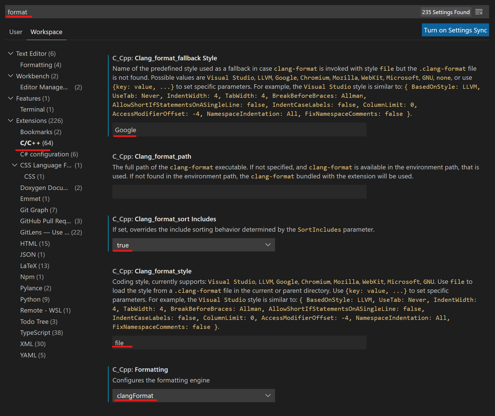
The following settings control, when the formatting should happen. This is up to you as long as the commited code is formatted.
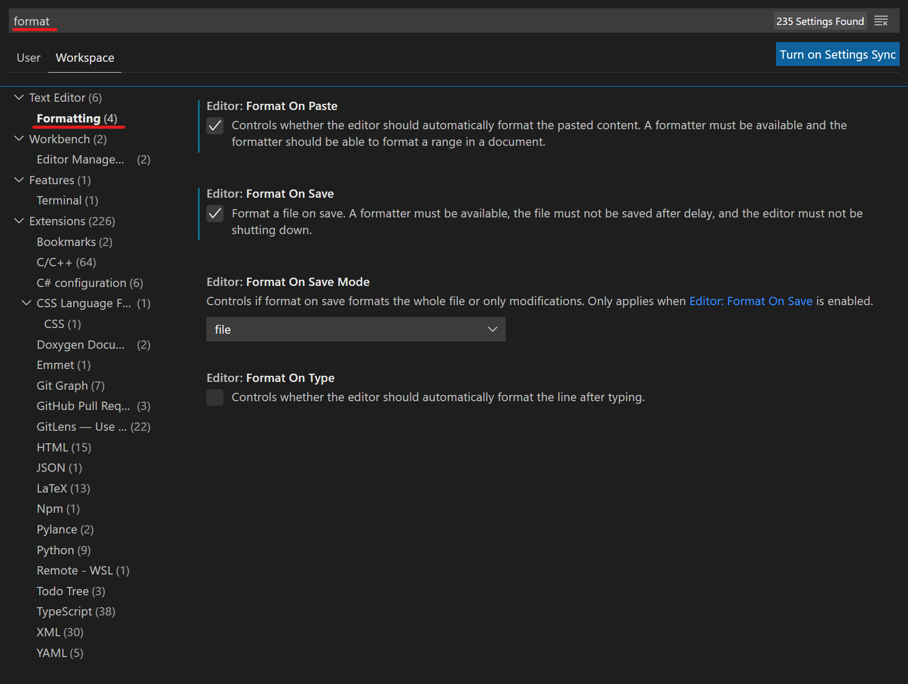
Using Format All Files in Workspace
To format all the workspace at once, you can use the following Visual Studio Code's Extension.
In your settings .json file, add the lines to go through the correct directories and only format C++ files:
"formatAll.includeFileExtensions": [
".cpp",
".h"
],
"formatAll.excludeFolders": [
"build",
"Extern",
],
WARNING: Using this extension can take up some time, you'll see all targeted files opening in new tabs. Grab a cup of coffee and let it do the trick :)
Vim Integration
ClangFormat — Clang 13 documentation (llvm.org)
Testing in RAYX
There are several kinds of tests:
Testing C++ Code
testing only c++ code and not using the shader, to check if parameters of optical elements are calculated correctly
check especially if the values that are derived from given user parameters and given to the shader are correct. These include the surface Parameters, the object parameters, the element parameters and the world to element and element to world coordinate transformation matrices, each of which are stored in an 16 element value array.
Testing Shader Code (test_shader.cpp)
The testing suite "Tracer" contains unit tests that check if the individual functions in the shader code are behaving as expected. As the functions that are tested are on the shader and in our current framework the only values that can be moved to the shader are mainly the Ray and Optical Element buffers, we cannot just call the functions with the required input values. Instead we first store the test values in Rays on the C++ side and retrieve them from the Rays on the shader side. Then the test can be executed on the shader and the results are stored again in the Ray buffer (outputRays). Back on the C++ side this can then be compared with the expected values.
Example: Testing the refraction function
The refraction function on the shader calculates the direction and weight of the refracted ray from the direction of the incoming ray, the normal at the intersection and the line density. The input to the test should therefore be:
- dvec3 direction
- dvec3 normal
- double lineDensity
- double weight
The output and therefore the values to verify are:
- dvec3 direction_out
- double weight_out
after the refraction
To move the test data to the shader and retrieve the results after applying the function we use the Ray buffer. Each test case is encoded in one Ray and we can add as many test cases as we want to the ray buffer. A ray consists of:
- dvec3 position
- dvec3 direction
- double energy
- double weight
- dvec4 stokes
- double order
- double pathLength
- double lastElement
- double extra Parameter
We can for example encode the test values for the refraction test as:
- dvec position \(\leftarrow\) normal
- dvec direction \(\leftarrow\) direction
- double energy \(\leftarrow\) lineDensity
- double weight \(\leftarrow\) weight
- others \(\leftarrow\) 0
For this, we can use the function "addTestSetting" that receives the test values in the correct order, creates a ray and adds it to a given ray vector which is in this case the one that will be transferred to the shader (std::vector<RAYX::Ray> testValues). To be able to verify the result that we will later retrieve from the shader, we need to store also the expected direction_out and weight_out. To make the comparison later easier we also store these in a Ray that corresponds to the test case and add it to std::vector<RAYX::Ray> correct using for example the following encoding:
- dvec position \(\leftarrow\) (0,0,0)
- dvec direction \(\leftarrow\) direction_expected
- double energy \(\leftarrow\) 0
- double weight \(\leftarrow\) weight_expected
- others \(\leftarrow\) 0
Now we have in both vectors one Ray for each test case, where testValues contains the values that we move to the shader and correct contains those that we expect to get back. Now, we can move testValues as the Ray buffer to the shader.
Then, on the shader side we need to make sure that the test values are "unpacked" correctly from the ray buffer. We can execute the function and store the updated direction and weight in the output ray buffer in the same format as they are stored in correct on the C++ side which is:
- dvec position \(\leftarrow\) (0,0,0)
- dvec direction \(\leftarrow\) direction_out
- double energy \(\leftarrow\) 0
- double weight \(\leftarrow\) weight_out
- others \(\leftarrow\) 0
These Rays are returned to the C++ test code as outputRays where the can be compared with compareFromCorrect(correct, outputRays, tolerance); for a given tolerance.
For other functions, like the approximation of sinus for example, we do not necessarily need the correct vector but we can simply apply the function sin() to the testValues and compare them directly with:
auto sinfun = fn<double, double>([](double x) { return sin(x); });
compareFromFunction(sinfun, testValues, outputRays, tolerance);
If a test has more test values than a ray has paramters, one could use the opticalElement buffer and add e.g. one opticalElement for each test case.
To make things even more complicated, we also need to have an id for each test to distinguish on the shader side which test is run and how the rays should be interpreted. The id is set in the surfaceParams of an optical Element. Because we want to have only one main function on the shader we also have to distinguish between a test case and a normal run of a beamline. This is achieved by setting the id to 0 if it is a beamline and to the test id otherwise (there is no test with id=0).
Testing Beamlines (test_shader.cpp)
Tests from the testing suite opticalElements read a beamline from a given rml file, run the tracer on it and writes the returned rays to a csv file with the same name as the rml file. If the beamlines give deterministic results, we can compare them with the output of RAY-UI using the test.py file. Therefore it is necessary to export the traced data from the same beamline traced in RAY-UI. Moreover, the beamline needs to end with an image plane because of the different coordinate systems that are used (Ray coodinates vs world coordinates).
Rayx Profiling
Here you can find an overview of the profiling tools used in rayx. Further reading can be done in the code (see Instrumentor.h file in "Debug"-folder).
The code for this profiler, was taken from a tutorial by TheCherno on Youtube.
Usage
The Profiling used in RAYX is a simple json export of the time each profiled function took. If you want to add profiling to a function, simply add:
RAYX_PROFILE_FUNCTION;
at the beginning of the function.
For profiling specific scopes, you can use RAYX_PROFILE_SCOPE, which takes in a name for the scoped timer.
Profiled Data
The data will be output to the directory, the executable was started in. You can use the tracing functionality of any chromium based browser to read the data.
For example, use the URL "chrome://tracing" for the Chrome browser.
Sessions
The profiling can happen in multiple sessions. You can't have to sessions running at the same time though. This is functionality is mainly supposed to give the option to separate data for different parts of the program.
An example would be seperating measurements into startup, runtime, shutdown.
The Macros used to create and end sessions:
RAYX_PROFILE_BEGIN_SESSIONRAYX_PROFILE_END_SESSION
Vulkan
In this section we introduce our design decisions for Vulkan and how we use it to get efficient tracing on the GPU.
VulkanTracer (rayx)
The VulkanTracer is a ray tracing module using VULKAN by KHRONOS GROUP to efficiently trace rays with hardware acceleration.
In the current version the Vulkan Engine is a Compute Class that runs as much parallel as possible on the GPU.
Current procedure:
- generate rays
- create input and output buffers
- initialize Vulkan
- run the main loop
- clean up
initVulkan():
- create a Vulkan instance
- set up the debug messenger
- pick the physical device and create a logical device to access it
- create the input and output buffers
- create the descriptors to connect the buffers to the shader
- create a compute pipeline and a command buffer for the shader
mainLoop():
- run the command buffer
- read the data from the output buffer
How the VulkanTracer works
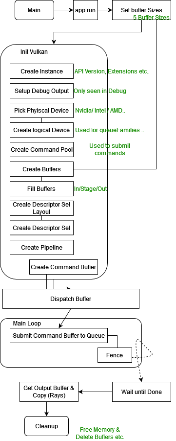
Buffer types used:
A uniform buffer (VK_DESCRIPTOR_TYPE_UNIFORM_BUFFER) is a descriptor type associated with a buffer resource directly, described in a shader as a structure with various members that load operations can be performed on. More here
A storage buffer (VK_DESCRIPTOR_TYPE_STORAGE_BUFFER) is a descriptor type associated with a buffer resource directly, described in a shader as a structure with various members that load, store, and atomic operations can be performed on.
Buffers:
| Buffers | Size ( vkDeviceSize) | Usage | Name |
|---|---|---|---|
| 0 | NumverOfRays*RAY_DOUBLE_AMOUNT | Transfer_DST|STORAGE_BUFFER | Ray Buffer |
| 1 | NumberOfRays*RAY_DOUBLE_AMOUNT | Transfer_SRC|STORAGE_BUFFER | Output Buffer |
| 2 | Quadric_parm+beamlineSize | STORAGE_BUFFER | Quadric Buffer |
| 3 | 100 | STORAGE_BUFFER | Buffer for xyznull |
| 4 | xxxxxxxxxxxxxxx | STORAGE_BUFFER | materialIndexBuf |
| 5 | xxxxxxxxxxxxxxx | STORAGE_BUFFER | materialBuf |
| 6 | xxxxxxxxxxxxxxx | STORAGE_BUFFER | debugBuffer |
| X | min(GPU_MAX_STAGING,numberOfRays) | STORAGE|DST|SRC | Staging Buffer |
Buffer Usages:
VK_BUFFER_USAGE_TRANSFER_SRC_BIT specifies that the buffer can be used as the source of a transfer command (see the definition of VK_PIPELINE_STAGE_TRANSFER_BIT).
VK_BUFFER_USAGE_TRANSFER_DST_BIT specifies that the buffer can be used as the destination of a transfer command.
Vulkan multi-shaderfile support: Shader split
Why?
The current compute task in RAYX is crammed into one main.comp compute shader file. This shader file takes care of all the computation and runs all neccessary tracing operations (bounces, collision check, etc.). As expected though, this file is huge in size, even compared to the state of the art compute shaders. As a consequence, loading this file into the GPU as instructions through Vulkan takes a while.
Moreover, although including one file, launching the task once and idle waiting are easy, massive flexibility and granuanilty are lost. Once the compute task starts, the CPU receives messages from the GPU only once this task has finished or failed. In the meantime, the GPU is a blackbox! To ensure correct result storage, the VRAM needs to allocate enough space for all recorded events, which leads to the output buffer's exponential increase in memory usage.
How to solve?
The Vulkan Engine needs to undergo a refactor, so that it can create multiple compute tasks coming from different shader files. We only traget "path tracing" and already have the whole procedure in main.comp. A good start would be to split this shader file into coherent smaller files, which might help make the engine's tasks easier to handle. This would first reduce the size of each task therby help the GPU Scheduler and reduce the register load inside every Core (Nvidia SM Core). By dispatching smaller similar tasks to the GPU, these tasks are bound to finish sooner and more likely to be executed in parallel, as opposed to having idle cores due to register bottlneck or missing cache as reported by Nvidia Nsight tools in singular shader file.
Futhermore, this enables more debugging features as we gain more control over the control flow of the tracing algorithm. But also, the output buffer can be merged with the input buffer and read to fetch results every time a new "mini-task" has finished. The engine is supposed to treat a specific chunk of data, so it makes senes to send the data to GPU and read it back at every checkpoint, while the GPU can execute more tasks on the same data.
VKPipeline
AFAIK, a shader VkShaderModule can only be bound through a unique pipeline VkPipeline. Hence this refactoring will center itself around this principle in the goal of making an easy-to-understand API that still doesn't require much user input.
How it works
A Pass is group of Pipelines
The Vulkan Engine is made out of multiple passes. A (compute) Pass is the main class for executing a compute Program(Shader). Every Pass can have a group of pipelines to be executed sequentially. Each Pipeline is bound to a shader file.
Let's suppose, we have Task A, B, and C to be executed on the GPU. If A and B can be ran sequentially, but C needs some CPU intervention before being also executed on GPU, then a possible composition would be to createComputePipelinePass() with A and B in the same Pass (containing 2 pipelines/shaders) and another Pass with only C. A Compute Command recorded for the first Pass will execute for both A and B. Another one is needed for C.
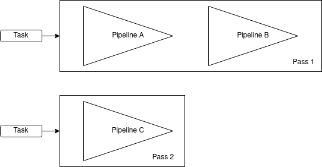
Flow management
To follow vulkan usage styles, the vulkan engine is initiliazed once. Then, as we use a batching system, we prepare the Passes (descirptor updating, necessary buffer reallocation, etc. ), run the the required compute task, cleanup, and repeat.
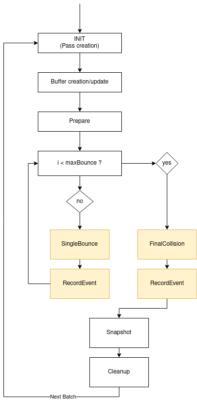
Memory management
For buffer-descriptor-Pass binding, a new BufferHandler is created. This manages and prepares the buffers needed for the compute tasks.
The BufferHandler binds, following vulkan rules, the buffers to the correct pass, makes sure that the needed size is available and takes care of the transfer and write operation from and to the GPU.
A new buffer is created ray-meta which contains unique data to each ray (seed, ctr or state). This data also persists between bounces.
Pros and Cons
Pros:
-
Multiple shader files:
The engine supports more than one shader file, which was the main goal at the beginning. It is now easy to introduce a new shader into the engine, for example ray generation-only tasks, sorting and ray marching.
-
More flexibility and ease of debugging:
The vulkan engine now has more features and much more function calls that makes implementing new ideas faster. It is easier now to fetch more information from the GPU, since the CPU gets more messages in return (every bounce).
-
Less memory usage:
The same buffer
ray-bufferis now input and output. The output-only buffer is removed. The size of this buffer israyAmountinstead of beingrayAmount*maxBounces. -
More openings for optimization and parallelism. [Looks at Vulkan-Beyond page]
-
Most of the classes (Pipelines, shaders, buffers, descriptors) are written in a way that graphic pipelines can also be supported (With more code obviously)
-
OOP, destruction, and vulkan cleanup
The new engine moves away from the C-style Vulkan version and creates objects with constructs, smart-pointers and destructors. As a consequence, memory leaks are less bound to happen and syntax is clearer. For example:
// Create a buffer with rayList content bufferHandler ->createBuffer<Ray>({"ray-buffer", VKBUFFER_INOUT}, rayList);// @brief Use ComputePipelineCreateInfo to build a new computePipeline struct ComputePassCreateInfo { const char* passName; std::vector<Pass::PipelineCreateInfo> pipelineCreateInfos = {}; int descriptorSetAmount = 1; };// Explicit passes cleanup for (auto pass : m_computePasses) { for (auto& pipeline : pass->getPipelines()) { pipeline->cleanPipeline(m_Device); } }
Cons
- The internal vkAPI is now a relatively harder to understand as we offer the user more power with compute tasks.
- More advanced vulkan synchronization (Fences, multi-pass etc.) are used, which means more pitfalls.
- The new version is slower as it relies more on I/O Transfers from and to the GPU. However, this can be analyzed and further optimized. We believe that this version has potential to run faster then original single-shader version.
- Some vulkan aspects are obviously not optimized, but are ignored as this was planned to be an easy-to-understand prototype: (Descirptors are all still bound to once set, Pushconstants are global and still do not support multi-pass system)
- Unknown undefined behaviour (Hence this shader is not merged)
Conclusion
This was rather a successful experiment. I (OS) learned much more about Vulkan and GPUs. Once it is time to work on the vulkan engine in RAYX. This is by far, a high priority.
Vulkan one stage Compute Pipeline and beyond... A Vulkan Case Study
Note
Please note that this page has been written from a Vulkan beginner's perspective. All information and facts are bound to change and tend to be misleading at times.
Introduction
We have followed an extensive research on RAYX Execution Model on the GPU side and found plenty of rabbit holes and possible bottlenecks that might lead to future misbehaviours or loss in performance. In this blog-like post, we explain some of the mentioned issues and possible solutions to overcome them. When needed, this post can be a starting point to a code refraction in RAYX.
What is Vulkan?
The GPU is a massive die on Chip that has plenty of processing cores (Similar to a CPU Core but only with very basic Arithmetic Operations FP/INT32). The GPU excels in SIMD (Single Instrct. Multiple Data) operations. It is basically a huge parallel machine that tries to execute the same operation (Pixel coloring, coordinate calculation etc.) on a wide range of data. For this purpose, GPUs are used in a more abstract field other than simply "graphics"; General Purpose Compute on GPU (GPGPU), which is mainly what RAYX on Vulkan relies on. Vulkan? WHO?
Nvidia and AMD are the main GPU manufacturers. As both GPU architectures slightly differ and Nvidia ... isn't a fan of open-source... we decided to use an All-in-One compatible tool to talk to the GPU. Enter Vulkan. A "new" API used to control the GPU for all (Not really, we'll talk about this later) purposes developed to compete against OpenGL and alike. But most of all, open-source! Vulkan is increasingly gaining popularity and is the new state of the art for developing GPU Solutions. However it is the most NOT beginner-friendly API that you can learn. Vulkan is created to give the user the uttermost control over hardware at the price of complexity and low-level execution. It can be very fast and performant but to reach that level you need to cover all aspects and gotchas that vulkan(the dev) might fall into.
GPU + CPU = <3
We can talk about Vulkan and how it works for weeks and still have more topics that we haven't covered. By the way, a very effecient way to learn about it, is to simply read the Vulkan-Samples made by Khronos and others. But let's suppose that we have already created a working Vulkan Environment and we are ready to talk with the GPU... "GPU, do this!".
To do as such, we need to record a Command in a Command Buffer. The Vulkan Pipeline will know which installement we need and which Shader Module we intend to run the GPU. The Command is then stored in a Queue. The Queue can be seen as a stack memory that accepts commands sequenctually... A then B then C... The Queue is submitted to the GPU. Finally we simply wait until idle i.e wait until our gpu compute code is terminated as we don't need any render workload or such from the GPU. So that we can proceed with further code.
All of this is executed on the CPU-side. The GPU takes the heavy-lifting and the actual execution of Compute only once queue is submitted. This is a good example of async computation which means that two things are doing seperate operations and they Synchronize with each other at different times. The CPU proceeds with data analysis or plotting only when the GPU is idle.
Through Vulkan, the GPU offers about 16 Queue Families (Check your vkinfo) to stack commands inside for execution. Hence the described procedure does not happen once in a standard GPU pipeline and does not have to be unique.
Nvidia GA102 Dive
You can find GA102 Architecture whitepaper at Nvidia's
Before discussing the issues at hand, now is a good chance to dip our hands a bit in the Hardware Side of Nvidia's latest GPU high-end architecture. Although, the dies become faster, and more power demanding, the idea behind a gpu still remains the same throughout the last generations.
A full GPU is mainly made out of memory and execution cores. The execution cores can be seen as a hierachical abstraction. The GPU (GA102 as reference) has 7 GPCs. Each GPC consists of 12 TPCs. Each TPC is made out of 2 SMs. Each SM has a Warp Scheduler, a 64KB register File (Registers), Load/Store Units and 32 CUDA FP32/INT32 cores.
This GPU has 84 SMs overall and that is the most important unit in understanding the GPU Design. An SM (Streaming Multiprocessor) is a scalable core and a Cuda Core is the arithmetic brain for operations inside the SM.

Memory consists of a big VRAM (DRAM) outside of the SoC, L2 Cache and a smaller faster L1 Cache closer to every SM. The register file inside the SM is the fastest and it's used to store any temporary values or branch jump "pointers".
L1 Cache can also be split into some shared memory that threads can concurrently share at the same time, depending on the configuration.
In the Compute Model, we talk about Warps, hence the warp scheduler. Warps are a "virtual" budnel of threads (Also called Wavefronts at AMD) made out of a pack of 32 Threads that are executed together. The Warp Scheduler takes care of issueing and disaptching the warps from the Intstruction bank to the SMs and cuda cores. It's only up to the Dev to correctly set the size of the Workload and its scalability. The Warp Scheduler will handle the rest.
Warps & Divergence
SMs execute instructions in warps, each warp consists of 32 Threads. It is important to notice that all warps in one SM execute the same instruction. Once done the scheduler issues the next instruction or decides to schedule another warp if the current has to stall for e.g. (Priority scheduling). The GA102 can schedule 4 warps at one cycle as seen in the figure. The Warp Scheduler is still a black box and very few documents describe it's exact functional model. It's also a piece that changes from one architecture to another and handles data and execution differently. Furthermore, the Warps do not directly map to the local group size and global work size in Vulkan.
A warp is considered active from the point its threads start executing until all threads have finished. SMs have a limit on the number of active warps, meaning the remaining inactive warps will need to wait until the current active ones are finished execuring. The ratio of active warps on an SM to the maximum number of active warps on the SM is called occupancy.
If the code to be executed has if clauses then some threads inside the warp have to execute with masks (Not do anything as the if condition is false ) and the else branch would need to also execute AFTER the warp is done with the first part. This is called Warp Divergence. Even if modern GPUs are becoming better with handling the divergence. Compilers tend to also optimize the shader. It's still viewed as one of the DONT in parallel compute.
The current Vulkan Execution Pipeline
vkDispatch()
The current RAYX Tracer uses 1 Vulkan Pipeline consisting of 1 Shader Module. The Shader module is dispatched once with the amount of needed threads (Rays) through 1 Compute Queue and the GPU would handle the rest.

The fence shows that we are waiting for the GPU to become idle.
Shader ifs
The current shader code has many if elif elif branchs which would cause internally a huge amount of divergence. According to nvidia's devoloper guide for tuning:
The high-priority recommendations from those guides are as follows:
- Find ways to parallelize sequential code.
- Minimize data transfers between the host and the device.
- Adjust kernel launch configuration to maximize device utilization.
- Ensure global memory accesses are coalesced.
- Minimize redundant accesses to global memory whenever possible.
- Avoid long sequences of diverged execution by threads within the same warp.
The divergence and the need to schedule each divergence is a waste of SMs. Our main function is an if clause by itself, inside of it are more ifs. This is one of the major flows of writing GLSL that we seem to be trapped in for now. Even with compiler optimization and the fact that modern GPUs can easily handle warp divergence, it's still one of the main issues that need to be fixed. New architectures include better divergence methods but we shouldn't rely only on that for better performance.
One thing to consider is that usually most ray bundles react the same way in very small finite surfaces. The divergence only happens at the extremeties of said surfaces/objects or wasteboxes.
Creating Shader Modules
To create a pipeline for anything-vulkan, we need to first upload the shader code to the GPU. The shader code is created inside a shader module with the main function as it's entry point. The GLSL code files in RAYX are all packed together and uploaded once. This bundle is too big for standard shader codes and it causes setup speed-loss as vulkan usually hangs in this step waiting for all instructions to be streamed to the GPU.
Nsight Graphics Metrics
Nvidia Nsight Graphics is a developer profiling tool that can run GPU Traces (And many other Profiling traces). It supports Vulkan natively which makes it the perfect candidate. The only problem is that RAYX still does not have a Vulkan Window as we only do compute. So Nsight Graphics is very limited and cannot catch "frames" for tracing. The GPU Trace produces a resource usage timeline and can also name the possible bottlenecks and reasons for low throughput if any. So what does Nsight Graphics say about RAYX Application?
Metrics
Well, not good stuff.. Below are the Metrics, recorded from a run of 1.5 million Rays:

Notice:
- High "CS Warp Can't Launch - Register Limited"
- Low SM Throughput
- High "Active SM Unused Warp slots on ative SM"
The timeline shows more detailed information about the execution:

Notice the bottlneck in the Compute Warps, stopping at almost 25% and the constant CS Warp Can't launch.
Aren't we supposed to get a higher SM Throughput?.. Shouldn't the compute warps reach 95% ?..
Problem Explained
The divergence and the massive amount of shader code to execute in one thread / Warp causes a register pressure. Furthermore we have plenty of loops inside the shader code that might have been unrolled which is causing stalled Warps and the SM being not able to issue to all available CUDA Cores at once. Per Cycle, we are only using 22% of Available Warps. The SM is only using very specific alu fonctions and not even close to hitting 10% mark of the different operations that it can do (FMA Pipe for Floating precision being 5%). This can be better improved by reducing the stalled Warps.
Nsight also recommends that we solve the issue as the SM is "running out of register-file space" by moving to async compute.
It's however worth mentioning that this is one of the most common SM-occupancy limiters for pixel and compute shaders. [blog]
Suggested Vulkan pipeline
Async Compute
To solve this we use the queue in vulkan and send as many small known commands as possible with smaller shader codes instead of one big block of GLSL. We use multiple Compute Queues if needed and let the Warp Scheduler control the rest. We obviously need a few synchronization points as we are now out of the global scope i.e we need to wait until rays intersect before reflecting, to send more specific commands. This is getting closer an async ompute model! For each stage/compute step we dedicate a vkPipeline preloaded with the shader and all what's left is to correctly bind the Descriptor Sets and push the command at the right time into the Queue.
The new Compute Pipeline Pass:

A look into a standard usage of queues:

One issue remains to be solved (or mainly discussed) is as now we are sending commands per Object and per run. We need to know what type of object the ray intersects to feed it the correct shader module. For that we propose these solutions:

The solutions are straight-forward. Solution 2 and 5 are the top-picks as they rely on on async compute the most.
This is still a bound-to-fail idea as we are not sure if it will solve the register and idle Warps problem. But it will surely change some the vulkan code structure.
Pros:
- Better readability
- Easier debugging as now if the compute unit fails there is no way of finding where and what happened inside the GPU.
- Better SM occupancy and throughput as the code to be executed becomes more similar, smaller and easier to run in parallel on multiple Wraps at a time WITHOUT need for divergence scheduling.
Cons:
- More complicated
- Memory Synchronization is needed to avoid read before write and overwrite. This can hinder performance if done wrong.
- More Shaders, and the sum of all shaders combined will be bigger than one shader for all. (Duplicate help functions etc..)
The main goal is that the pros and the wasted Unused Warps would overcome the cons mentioned.
OpenCL vs Vulkan
A big downset of the new implementation is that it's still being made inside Vulkan. For that we can replace all of Vulkan's API with a pure GPGPU API: OpenCL.
As mentioned earlier Vulkan is not meant to be purely for compute as CUDA or OpenCL etc. but to include compute stages betweenn other render passes. Which makes the pure compute dev work even harder and more time consuming.
OpenCL is lightweight and easier to understand and recreate than Vulkan. It's definitely not faster than OpenCL. It's also older. But still valid for such cases and most of all supported by nvidia and amd.
RAYX-UI
Code Documentation
2D Triangulation
The triangulation algorithm is based on the algorithm presented in Computational Geometry
Initial polygon representation
The polygons are represented as a collection of paths for faces and holes. Faces are ordered in counter-clockwise order and holes in clockwise order.
Edge list
The edge list a data structure containing all edges of the polygons. The edges are directed. A polygon is represented in counter-clockwise order.
Every edge contains:
- A reference to the incoming edge
- A reference to the outgoing edge
- The point of origin
The data structure has a split method. This method inserts two new edges and updates some incoming and outgoing references.
References before splitting:
- v_prev -> v
- u_prev -> u
References after splitting:
- v_prev -> vu -> u
- u_prev -> uv -> v
Split returns uv and vu.
Example:
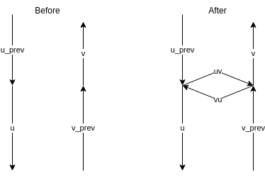
Generate monotone pieces
A polygon is monotone if every line in y direction intersects 0 or 2 edges.
The algorithm is a sweep line algorithm. The line sweeps from +y to -y. The algorithm requires a binary search tree, a hash map and a priority queue. The BST contains every edge that is currently intersecting the sweep line sorted by x position of the intersection. The hash map maps downward facing edges intersecting the sweep line to edges used for splitting.
- Add faces and holes to the edge list.
- Classify edge origins as Regular, Start, End, Split or Merge vertices.
- Add the edges to a priority queue. Priotity relation:
y1 > y2 || (y1 == y2 && x1 < x2) - Initialize the BST and HM as empty.
- Process entries of the priority queue in order.
Classification
Start:
Polygon begin
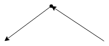
End:
Polygon end
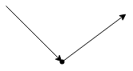
Regular:
Standard edge
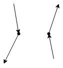
Merge:
Merge two monotone polygons in one
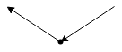
Split:
Split polygon in two monotone pieces
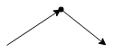
Processing of a Vertex/Edge
le* denotes an edge in the BST and helper[le*] the corresponding edge in the HM.
The left part of each diagram is the state before processing and the right part the state after processing.
The dotted line is the current sweep line.
The BST and HM can contain more entries than shown. These entries wont be modified.
Start

End
Origin of helper is a merge vertex:
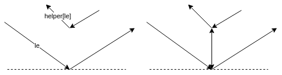
Otherwise no new edges will be added.
Split
This works for every vertex type of the helpers origin, in this example the helpers origin is a merge vertex:
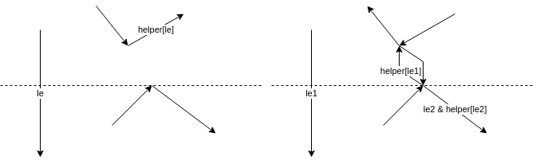
Merge
New edges are only added if a helpers origin is a merge vertex. In case le1s helper is not a merge vertex, the helper of le is set to the outgoing edge of the currently processed vertex.
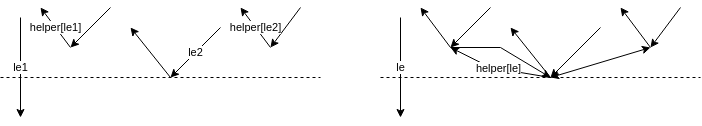
Regular
Left
Origin of helper is merge vertex.
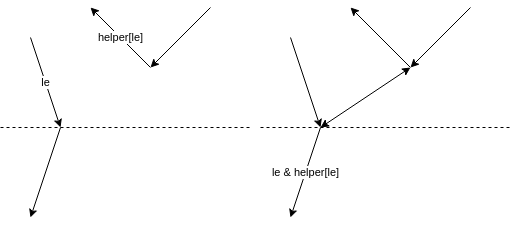
Otherwise no new edge will be added.
Right
Origin of helper is merge vertex.
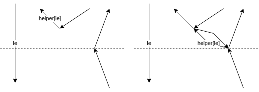
Otherwise no new edge will be added. And the helper of le is the outgoing edge of the currently processed vertex.
Output
The newly added edges are colored blue.
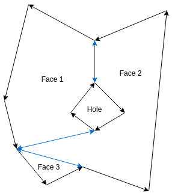
Triangulation of monotone polygon
The algorithm requires a stack containing all not yet triangulated edges.
The triangulation algorithm has the following steps:
- Annotate each edge origin of the polygon with either left or right.
- Initialize the stack and push the first 2 edges.
- Process vertices (except the first 2) in decreasing y order.
Processing
The green edge is the current edge. The blue edges are on the stack. (ordered by y coordinate)
Current edge origin is on the left
Edge on top of the stack is on the left
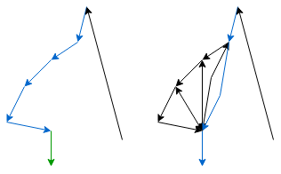
Edge on top of the stack is on the right
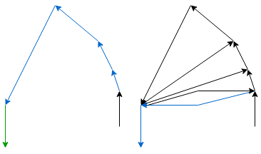
Current edge origin is on the right
Edge on top of the stack is on the right
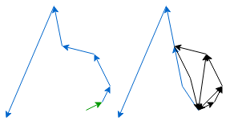
Edge on top of the stack is on the
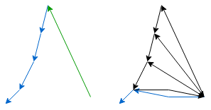